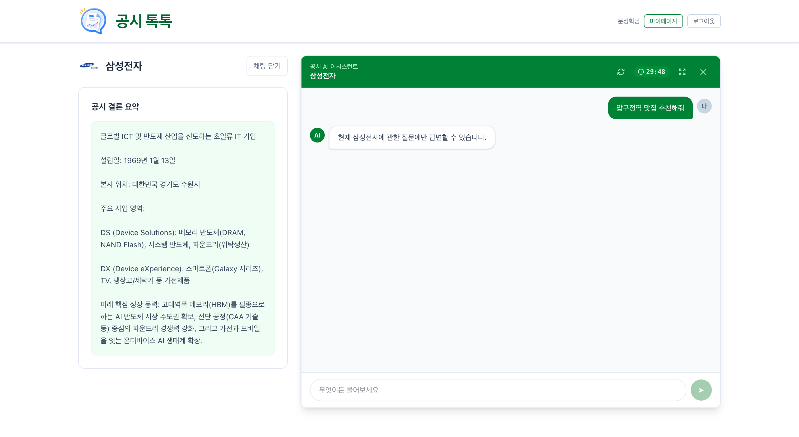

공시톡톡 종합 시스템 보고서
DART 공시를 사전 적재한 RAG 챗봇 SPA — gongsitoktok-react · gongsitoktok-spring · gongsitoktok-pydantic 3-tier 통합 산출물
처음 보는 사람도 이 문서 하나로 시스템 전반을 파악할 수 있도록 설계됨. v1 대비 AI 파트(8장)가 CrewAI → PydanticAI로 재구축되어 표-인식 파싱·진짜 하이브리드 검색(RRF)·사전요약 트랙·3계층 eval(검색·행동·회귀)이 추가됨. 각 챕터는 독립적으로 읽을 수 있으며, 좌측 sidebar 또는 Cmd/Ctrl+F로 빠르게 탐색하세요.
01 Executive Summary
시스템 한눈에 보기
시스템 한 줄 정의
공시톡톡(gongsitoktok)은 사용자가 한국 상장기업의 상세 페이지에서 챗봇으로 공시·재무·거시 질의응답을 받는 SPA 서비스입니다. 한국 전자공시(DART) 정기보고서를 표 구조까지 보존해 사전 적재하고(67k 청크), 질문이 들어오면 라우터→검색→작성→검증의 PydanticAI 5-에이전트 파이프라인이 근거(출처·DART 원문 링크)와 정확도(0~1)와 함께 답합니다. v2.0에서 AI 파트가 CrewAI → PydanticAI로 재구축되며, 표-인식 파싱·진짜 하이브리드 검색·사전요약 트랙이 새로 추가됐습니다.
3-tier 시스템 그림
flowchart LR
subgraph FE["gongsitoktok-react (SPA)"]
direction TB
UI["React 19 + Vite
Tailwind · zustand · React Query"]
end
subgraph SB["gongsitoktok-spring (Java 21 VT)"]
direction TB
SApi["REST API
인증 · 세션 · 이력"]
SDB[("PostgreSQL
tb_user · tb_chat_room ...")]
SApi --- SDB
end
subgraph FA["gongsitoktok-pydantic (FastAPI · stateless)"]
direction TB
FApi["POST /api/v1/chat
PydanticAI 5-에이전트
router→검색→writer→verifier"]
Chroma[("Chroma
corpus_<corpCode> 67k
summary_<corpCode> 1,188")]
FApi --- Chroma
end
Ext["DART OpenAPI
한국은행 ECOS
OpenAI (gpt-5.1·gpt-4o-mini·o4-mini)"]
UI -- "HTTPS · JWT" --> SApi
SApi -- "동기 JSON
X-Trace-Id" --> FApi
FApi --> Ext
classDef fe fill:#dcfce7,stroke:#14532d,color:#14532d
classDef sb fill:#dbeafe,stroke:#1e3a8a,color:#1e3a8a
classDef fa fill:#fef3c7,stroke:#92400e,color:#92400e
classDef ext fill:#f1f5f9,stroke:#334155,color:#334155
class FE,UI fe
class SB,SApi,SDB sb
class FA,FApi,Chroma fa
class Ext ext
핵심 기술 스택
| 영역 | 레포 · 기술 | 핵심 결정 사유 |
|---|---|---|
| 프론트 | gongsitoktok-reactReact 19 + Vite + TypeScript + Tailwind 4 + zustand + @tanstack/react-query |
SSR 없는 단일 SPA. 정적 빌드로 CDN 배포 가능 |
| 백엔드 | gongsitoktok-springSpring Boot 3.5.4 on Java 21 (Virtual Threads) |
가상 스레드 + WebClient .block()으로 LLM 90초 대기에도 carrier 무점유. 인증·세션·이력 영속화 + FastAPI 동기 호출 |
| AI Agent | gongsitoktok-pydanticFastAPI 0.115 + Python 3.12 + pydantic-ai 1.30.x + OpenAI gpt-5.1 / gpt-4o-mini / o4-mini |
v1의 CrewAI에서 PydanticAI로 재구축. 모듈 레벨 5-에이전트 싱글톤 + output_type 네이티브 스키마 검증 + 자동 재시도. 호출당 객체 생성 0개, 정의 코드 -68% |
| 데이터 | PostgreSQL 16 (Spring 전용)Chroma 0.5 (FastAPI 전용 — corpus_<corp> 67,023 + summary_<corp> 1,188)SQLite (FastAPI 보조 — 거시 캐시·standalone 보관) |
각 시스템이 자기 DB 단독 소유. 인터서비스는 REST만. Chroma 이중 컬렉션으로 원문 RAG / 사전요약 트랙 분리 |
| RAG | text-embedding-3-small (1536d, cosine) + 진짜 하이브리드(벡터∪전체 BM25 RRF) + 결정적 Contextual 문맥줄 + 표-인식 Markdown 보존 |
회사별 격리 컬렉션. RRF 가중 0.5/0.5로 한쪽이 묻히지 않게. 정확수치는 RAG 아닌 DART 정형 API(fnlttSinglAcnt)로 결정적 획득 |
| 인증 | JWT (Access 1h) + Refresh (httpOnly 14d, SHA-256 해시, rotation + reuse 탐지) + |
STATELESS REST + 보안 사고 자동 차단 |
| 관측성 | Spring MDC traceId + Logfire 콘솔 모드 (FastAPI) — 백엔드 X-Trace-Id를 Logfire 루트 span에 바인딩 |
한 trace로 React→Spring→AI 내부(router→검색→writer→verifier) 자식 span까지 추적. 금융권 감사가능성 |
v2.0 완료 범위 체크리스트
- 로컬 회원가입·로그인·로그아웃
- Refresh Token rotation + 재사용 탐지
OAuth2 골격 (운영 활성화 보류)비밀번호 변경·탈퇴 + dismiss
- 첫 질문(/ask) + 이어하기(/continue)
- 30분 세션 만료 + 스케줄러 자동 close
- 활성 방 lookup (단일 SOFT 정책)
- 새 채팅 버튼 + 410 자동 복구
- 출처 모달 + 정확도(groundedScore)
- 마이페이지: 만료 방 목록 + 읽기 전용 패널
- PydanticAI 5-에이전트 (router·writer·summary·verifier·section_summary) — 모듈 싱글톤,
output_type네이티브 검증 - 표-인식 파싱 (BeautifulSoup) — 표를 Markdown으로 보존, 행·열·COLSPAN 패딩 유지
- 결정적 Contextual 문맥줄 — 청크 앞에
[회사·공시·섹션·종류]한 줄 (LLM 0원) - 진짜 하이브리드 검색 (벡터∪전체 BM25 RRF, 동등 가중) — 가짜 하이브리드 → 정답 유실 해소
- 사전요약 트랙 —
summary_<corp>1,188 요약, 빌드때 1회·질의땐 꺼내쓰기. corpus 폴백 보험 - 정형재무 결합 — DART
fnlttSinglAcnt정확수치 + DART 원문 링크 - 거시 결합 — ECOS 환율·금리·국고채·KOSPI + 날짜 SQLite 캐시
- 3계층 eval — ①검색(무료·결정적, 13/13 hit@5 100%, MRR 0.933) ②행동(6/6) ③회귀 골든(16/16) · 2026-06-24 기준
- Logfire 콘솔 관측성 +
X-Trace-Id端-to-端 추적
- 대상: 삼성전자(00126380) · 현대자동차(00164742)
- 정기보고서 32건 (삼성 16 + 현대 16, 2021.12~2025.11)
- corpus 청크: 67,023 (삼성 23,444 + 현대 43,579)
- summary 요약: 1,188 (삼성 380 + 현대 808)
- Chroma 디스크 약 1GB · cosine
빠른 실행 — 3개 서버 띄우기
# 1. PostgreSQL (Docker, 한 번만)
docker run -d --name gongsi-pg -p 5432:5432 \
-e POSTGRES_USER=gongsi -e POSTGRES_PASSWORD=gongsi \
-e POSTGRES_DB=gongsitoktok \
-v gongsi-pg-data:/var/lib/postgresql/data postgres:16
# 2. Spring 백엔드 (port 8080) — gongsitoktok-spring
cd gongsitoktok-spring
./gradlew bootRun --args='--spring.profiles.active=dev'
# 3. AI Agent (port 8000) — gongsitoktok-pydantic
cd gongsitoktok-pydantic
python3.12 -m venv .venv && .venv/bin/pip install -r requirements.txt
# (선택) 코퍼스·사전요약 적재: 이미 적재된 경우 스킵
PYTHONPATH=. .venv/bin/python scripts/ingest_corpus.py --corp 삼성전자
PYTHONPATH=. .venv/bin/python scripts/build_summaries.py --corp 삼성전자
# 관찰성(콘솔 trace) 함께 켜기
OBSERVABILITY=console PYTHONPATH=. .venv/bin/uvicorn app.main:app --port 8000 --reload
# 4. 프론트 (port 5173) — gongsitoktok-react
cd gongsitoktok-react
npm install && npm run dev
# 브라우저: http://localhost:5173
# Swagger(AI): http://localhost:8000/docs
# Swagger(Spring): http://localhost:8080/swagger-ui.htmlAI 파트(gongsitoktok-pydantic) 검증은 인프로세스로 돌릴 수 있습니다 — 서버 기동 불필요.
PYTHONPATH=. .venv/bin/python -m eval.eval_retrieval (검색·무료·결정적) ·
... -m eval.eval_chat (행동) ·
... -m eval.run_golden_inproc (회귀 골든셋 16건, 2026-06-24 기준). 자세한 기준·결과는 §8.8 3계층 eval.
1.6 사용자 여정 워크스루 — 처음 보는 사람을 위한 5분 가이드
"이 시스템을 처음 쓰는 사용자가 무엇을 경험하는가"를 단일 흐름으로 따라가봅니다. 비로그인 진입부터 챗봇 답변 확인·세션 만료·마이페이지 재조회까지. 아래 단계는 모두 실제 화면 흐름이며, 각 단계에서 시스템이 어떻게 반응하는지(시스템)와 사용자가 무엇을 보는지(사용자 행동)를 함께 표기했습니다.
flowchart LR A["① 비로그인
메인 진입"] --> B["② 회사 카드
클릭"] B --> C["③ 챗봇 진입
(로그인 필요)"] C --> D["④ 회원가입/로그인"] D --> E["⑤ 챗봇 열기
+ 첫 질문"] E --> F["⑥ AI 답변
+ 출처 모달"] F --> G["⑦ 후속 질문
(이어하기)"] G --> H["⑧ 30분 만료
(이탈/자동 close)"] H --> I["⑨ 마이페이지
기록 조회"] I --> J["⑩ 다른 회사로
새 채팅"] classDef pub fill:#dbeafe,stroke:#1e3a8a,color:#1e3a8a classDef auth fill:#dcfce7,stroke:#14532d,color:#14532d classDef sys fill:#fef3c7,stroke:#92400e,color:#92400e class A,B pub class C,D,E,F,G,J auth class H,I sys
/) 진입tryRestoreSession()이 부팅 시 /auth/refresh 호출 → 옛 쿠키 없음 → 401 → 인터셉터의 !isAuthCall 가드에 의해 자동 재시도 차단 → markAuthChecked() 호출되며 인증 결정 완료. 비로그인 상태 그대로 메인 노출. 회사 카드 그리드 + 헤더의 [로그인] 버튼./company/00126380으로 라우팅. CompanyPage가 마운트되며 companyDetail 쿼리 발사 → 헤더(로고·기업명·기본 정보) + 우측에 "무엇이든 물어보세요" 버튼 노출. 비로그인 사용자에게도 회사 정보는 보임(채팅만 인증 필요).isLoggedIn=false 감지 → LoginRequiredModal 표시("로그인이 필요한 서비스에요. 로그인하시겠어요?") + [로그인]/[취소] 버튼. [로그인] 클릭 시 navigate('/login', { state: { from: location.pathname }})로 원래 경로 동봉.^[a-z0-9]{4,20}$ + 비밀번호 정책) 클라이언트 1차 검증 → 백엔드 ErrorCode 응답을 alert으로 친절 안내. 로그인 성공 시 백엔드가 Access(1h Bearer) + Refresh(14d httpOnly SHA-256 해시) 발급 → LoginPage가 state.from으로 원래 회사 페이지 자동 복귀.chatApi 인스턴스(timeout 95s, 페이지 이동 절대 금지)로 POST /chat/ask 호출. Spring이 가상 스레드 위에서 WebClient .block() 호출 → gongsitoktok-pydantic /api/v1/chat이 PydanticAI 5-에이전트 파이프라인(router gpt-4o-mini → 진짜 하이브리드 검색·정형재무·거시 병렬 결합 → writer gpt-5.1 → verifier o4-mini) 실행. 평균 5~30초. 진행 중 사용자에겐 스피너 노출.? 버튼으로 출처 모달 열기"제57기 43,601,051,000,000원, 제56기 32,725,961,000,000원입니다.") + 우측 하단 회색 원 + 흰색 ? 버튼. 클릭 시 SourceModal — 인용 근거 본문(sourceContent) + 정확도 뱃지(groundedScore를 백분율로). 점수 ≥0.8 green / ≥0.5 amber / <0.5 rose. 출처 카드에는 DART 원문 링크도 포함되어 사용자가 실제 공시까지 확인 가능./continue)POST /chat/room/{roomId}/continue로 분기. router_agent가 history(직전 대화)와 함께 받아 "그럼/그거" 같은 지시어를 직전 맥락으로 해석. lastActiveAt이 매 응답마다 갱신되어 30분 타이머 자동 reset. 멀티턴 답변도 출처·정확도 함께./continue 진입 시 만료 검사(410 CHAT_ROOM_EXPIRED + 프론트 자동 복구) ② /rooms 조회 시 lazy close ③ ChatRoomExpiryScheduler 1분 주기 @Scheduled 일괄 close — 패널 열어둔 채 떠난 사용자도 자동 정리. 만료된 방은 isActive=false + closedAt 마킹되어 마이페이지로 합류./mypage)에서 만료된 채팅 기록 조회GET /chat/rooms 호출 → 만료 방만(isActive=false) 반환 + 회사 로고(logoUrl) 동봉. 좌측에 날짜별 그룹(오늘/어제/날짜) 카드 목록, 카드 클릭 시 우측 ReadOnlyPanel에 해당 방의 Q&A 타임라인 표시. 출처 모달도 동일하게 재사용 — 마이페이지는 활성 챗봇과 시각적·기능적으로 분리(입력창 없음, 조회 전용).corpCode 변화 감지 → 무조건 resetSession()(이전 회사 채팅 누출 방지 — [027] 사고 후 적용). 새 회사 페이지 진입 → GET /chat/room/active?corpCode=...로 활성 방 lookup → 없으면 빈 패널, 있으면 hydrate. 같은 회사 내 "새 채팅 시작" 버튼은 헤더에 별도(POST /chat/room/{roomId}/close 멱등).사용자가 본 것은 단순한 챗봇이지만, 그 한 답변을 만들기 위해 (a) gongsitoktok-spring이 가상 스레드 위에서 인증·세션 검증·트랜잭션 분리, (b) gongsitoktok-pydantic의 PydanticAI 5-에이전트가 이중 컬렉션(corpus + summary)에서 진짜 하이브리드 검색(RRF) + DART 정형재무 + ECOS 거시 결합, (c) writer/verifier가 output_type 스키마 검증으로 근거 안에서만 답변 작성, (d) 양쪽 traceId가 Logfire 루트 span에 바인딩되어 한 사용자 요청 전체를 단일 ID로 추적 가능 — 모든 단계가 동시에 일어났습니다. 자세한 흐름은 Ch 5 Sequence Flows, AI 파트 내부 동작은 Ch 8 AI Agent, 실제 시연 케이스는 Ch 14 Demo Scenarios를 보세요.
처음 보시는 분은 Chapter 2 Architecture부터 순서대로 읽기를 권장합니다. 특정 API가 궁금하면 Chapter 4 API Reference, 흐름이 궁금하면 Chapter 5 Sequence Flows, AI 내부 동작은 Chapter 8 AI Agent로, 시스템이 실제로 어떻게 동작하는지 보고 싶다면 Chapter 14 Demo Scenarios로 바로 이동하세요. 향후 보완 계획은 Chapter 10 Future Work, 사고·해결 기록은 Chapter 13 Troubleshooting에 정리되어 있습니다.
02 Architecture
논리·인프라·통신 모델
2.1 논리 아키텍처
세 시스템은 명확한 책임 경계를 가집니다. 프론트는 사용자 UI 와 axios HTTP 호출만, Spring은 인증·세션·이력 영속화와 FastAPI 동기 호출, FastAPI는 RAG 추론과 결과 반환을 담당합니다. 세 시스템 모두 자기 DB 만 소유 합니다.
flowchart LR
subgraph Client["사용자 브라우저"]
Browser["React SPA
(localhost:5173)"]
end
subgraph Spring["Spring Boot 백엔드 (localhost:8080)"]
direction TB
Sec["Security
JwtAuthFilter · CORS · CSRF off"]
Ctrl["Controllers
Auth · User · Company · Chat · Internal"]
Svc["Services
ChatRoomService · ChatPersistenceService
ChatRoomExpiryScheduler · AuthFacade"]
Repo["Repositories (JPA)"]
PG[("PostgreSQL 16
tb_user · tb_refresh_token
tb_company · tb_company_main
tb_chat_room · tb_qa_history")]
Cache["Caffeine 2단 캐시
JWT 검증 · 블랙리스트"]
Sec --> Ctrl --> Svc --> Repo --> PG
Svc -.-> Cache
end
subgraph FastAPI["gongsitoktok-pydantic — FastAPI (localhost:8000, stateless)"]
direction TB
Route["POST /api/v1/chat
X-Trace-Id echo"]
Chat["services/chat.py
handle_chat() — 라우팅·병렬·작성·검증"]
subgraph Agents["PydanticAI 5-에이전트 (모듈 싱글톤)"]
direction TB
Router["router
gpt-4o-mini
의도·플래그·검색쿼리"]
Writer["writer (qa)
gpt-5.1
근거 內 작성"]
Summary["summary
gpt-4o-mini
요약 종합"]
Verify["verifier
o4-mini
grounded_score"]
end
Rag["RAG
표-인식 파서 · 청커 · Contextual
임베딩 · 진짜 하이브리드(RRF)"]
Chrom[("Chroma ~1GB
corpus_<corp> 67k
summary_<corp> 1,188")]
Sqlite[("SQLite
거시 캐시 · standalone 보관")]
Logf["Logfire 콘솔
request_span(X-Trace-Id)"]
Route --> Chat
Chat --> Agents
Writer --> Rag --> Chrom
Verify -.-> Chat
Chat -.-> Sqlite
Chat -.-> Logf
end
subgraph External["외부 API"]
direction TB
Dart["DART OpenAPI
공시 본문 + 정형재무 (fnlttSinglAcnt)"]
Ecos["한국은행 ECOS
환율 · 기준금리 · 국고채 · KOSPI"]
OpenAI["OpenAI
gpt-5.1 · gpt-4o-mini · o4-mini
text-embedding-3-small"]
end
Browser -- "Bearer JWT
+ httpOnly Refresh 쿠키" --> Sec
Svc -- "WebClient .block() 동기 JSON
X-Trace-Id 자동 전파" --> Route
Agents -- "provider 네이티브" --> OpenAI
Rag -- "ingest 시점 (수동)" --> Dart
Chat -- "정형재무 실시간" --> Dart
Chat -- "캐시 → miss 시" --> Ecos
classDef fe fill:#dcfce7,stroke:#14532d,color:#14532d
classDef sb fill:#dbeafe,stroke:#1e3a8a,color:#1e3a8a
classDef fa fill:#fef3c7,stroke:#92400e,color:#92400e
classDef ext fill:#f1f5f9,stroke:#334155,color:#334155
classDef db fill:#fff,stroke:#475569,color:#0f172a
class Browser,Client fe
class Sec,Ctrl,Svc,Repo,Cache,Spring sb
class Route,Chat,Router,Writer,Summary,Verify,Rag,Agents,FastAPI,Logf fa
class Dart,Ecos,OpenAI,External ext
class PG,Chrom,Sqlite db
2.2 인프라 토폴로지 (로컬 데모)
v2.0도 v1과 동일하게 로컬 데모 단계입니다. 모든 서비스가 단일 머신에서 단일 인스턴스로 실행됩니다. 운영 진입 시 다중 인스턴스 + 분산 락(ShedLock) + Redis 캐시 이관이 필요합니다 (Chapter 10).
flowchart LR
subgraph Host["개발자 워크스테이션 (macOS)"]
direction TB
subgraph Browser["브라우저 (Chrome/Safari)"]
SPA["Vite Dev Server
localhost:5173"]
end
subgraph JVM["JVM"]
SB["Spring Boot
localhost:8080
(Virtual Threads)"]
end
subgraph Python["Python venv"]
FA["Uvicorn + FastAPI
localhost:8000"]
end
subgraph Docker["Docker Desktop"]
PG[("PostgreSQL 16
gongsi-pg 컨테이너
:5432")]
end
subgraph Files["로컬 파일시스템 (gongsitoktok-pydantic/data)"]
ChromaFS[("./chroma
~1GB · 67k corpus + 1,188 summary")]
SqliteFS[("./app.db
거시 캐시·standalone 보관")]
end
SPA -- "HTTP 8080" --> SB
SB -- "JDBC 5432" --> PG
SB -- "HTTP 8000
WebClient" --> FA
FA -- "filesystem" --> ChromaFS
FA -- "filesystem" --> SqliteFS
end
subgraph Internet["인터넷 (외부)"]
OAI[OpenAI API]
Dart[DART OpenAPI]
Ecos[ECOS API]
end
SB -. "HTTPS (OAuth · 구현만 · 미적용)" .-> Internet
FA -- "HTTPS" --> OAI
FA -- "HTTPS" --> Dart
FA -- "HTTPS" --> Ecos
classDef local fill:#fff,stroke:#15803d,color:#14532d
classDef cloud fill:#f1f5f9,stroke:#334155,color:#334155
class SPA,SB,FA,PG,ChromaFS,SqliteFS local
class OAI,Dart,Ecos cloud
2.3 핵심 통신 모델
두 가지 경계가 있고, 각 경계는 명확한 계약을 가집니다.
- 동기 JSON (SSE 미사용)
- Access Token:
Authorization: Bearer헤더 - Refresh Token:
httpOnly쿠키 (SameSite=Strict,Path=/api/v1/auth) - CORS
allowCredentials: true+ 화이트리스트 - chatApi 분리 — LLM 호출만 95s timeout
- 5xx 자동 ErrorPage 진입 + traceId 노출
- 동기 JSON, 단일 endpoint
POST /api/v1/chat - WebClient
.block()on Virtual Thread (carrier 무점유) - timeout: Connect 10s / Write 30s / Response 90s
X-Trace-Id자동 전파 (MDC ↔ ExchangeFilterFunction)- 응답 분기: HTTP 200+
error=null/ 200+error≠null/ 4xx-5xx / 네트워크 실패 - 정상 응답만 영속화 (
@Async별도 빈)
2.4 컴포넌트 책임 매트릭스
"누가 무엇을 소유하는가" 를 한 표로 정리합니다. 책임 경계가 흐려지면 사고가 나기 때문입니다.
| 책임 | 주관 | 비고 |
|---|---|---|
| 사용자 UI · 라우팅 · 상태 관리 | Frontend | zustand + React Query |
| 인증 (회원가입·로그인· | Spring | FastAPI는 신경 안 씀 |
세션 ( tb_chat_room 라이프사이클 · 30분 만료) | Spring | 스케줄러 + 만료 lazy close |
대화 이력 영속화 (tb_qa_history) | Spring | FastAPI 정상 응답만 저장 |
| FastAPI 호출 + 응답 분기 | Spring | WebClient + UpstreamErrorMapper |
| 의도 분류 · RAG 검색 · LLM 호출 | FastAPI | Spring은 신경 안 씀 (Stateless) |
| 벡터 DB (Chroma) · 임베딩 | FastAPI | 회사별 격리 컬렉션 |
| 답변 검증 (grounded_score · CRAG) | FastAPI | o4-mini 채점 + 1회 재검색 |
| DART 공시 ingest | FastAPI | 수동 ingest_corpus.py |
| 거시지표 (ECOS) 캐시 | FastAPI | SQLite macro_cache |
기업 마스터 (tb_company CRUD) | Spring | 운영자가 internal endpoint 호출 (v6 임시) |
초기 설계에서 tb_company.summaryContent 를 FastAPI 가 자동 채우는 방안을 검토했으나, "기업 마스터는 Spring 소유" 원칙에 어긋나 보류. 현재는 운영자가 PATCH /api/v1/internal/companies/{corpCode} 로 수동 등록. 향후 관리자 UI 도입으로 자동화 예정 (Future Work #9).
03 Data Model
식별자 정책 · PostgreSQL 6 테이블 · Chroma 벡터 스토어 · SQLite
3.1 식별자 정책
시스템의 모든 FK·외부 노출·세션 식별이 다음 3가지 키로 정리됩니다. 이중화는 "외부 노출용" 과 "내부 인터서비스용" 을 분리해 dismiss·revoke 같은 라이프사이클 변형이 외래 키를 깨지 않도록 보장하기 위함입니다.
| 키 | 타입 | 변경 가능 | 역할 | 변형 패턴 |
|---|---|---|---|---|
userSeq |
BIGINT IDENTITY |
❌ 영구 불변 | 내부 인터서비스 식별자 — 모든 FK 의 참조 대상 (tb_chat_room.user_seq, tb_refresh_token.user_seq). JWT sub 클레임 = String.valueOf(userSeq) |
없음 — 탈퇴해도 동일 행에 dismiss flag 만 토글 |
userId |
VARCHAR(150) UNIQUE |
⚠️ dismiss 시 변형 | 외부 노출 — 로그인 ID. JWT custom claim userId |
탈퇴 시 userId + "#dismiss_" + epochMillis 로 변형 → UNIQUE 충돌 회피 |
corpCode |
VARCHAR(8) UNIQUE |
❌ DART 발급 후 영구 | 외부 노출 — URL 파라미터, FastAPI 통신 키. 모든 회사 외부 식별자 | 없음 — DART 가 부여하는 8자리 영구 코드 |
roomId |
BIGINT IDENTITY |
❌ 생성 후 불변 | 세션 식별자 — /continue·/messages·/close path. 마이페이지 이력 단위 |
없음 (방 자체가 불변, isActive 상태만 토글) |
providerId |
VARCHAR(255) |
(oauthService, providerId) UNIQUE |
soft delete + 외부 노출 키 변형으로 다음 3가지를 동시에 달성: ① userSeq 안정성 (모든 FK 그대로 살아있음, tb_qa_history 같은 이력 보존), ② UNIQUE 컬럼 재사용 가능 (동일 userId 로 재가입 가능), ③ hard delete 회피 (분석·감사 데이터 보존). 단점은 tb_user 행이 영구 증가 — 보존 기간 정책은 Future Work #7.
3.2 PostgreSQL 스키마 (6 테이블)
Spring 백엔드 단독 소유. 모든 FK 는 userSeq/companySeq surrogate 참조. cascade · @OnDelete 없음 — soft delete 안전. ddl-auto 정책은 dev=update, prod=validate.
ER 다이어그램
erDiagram
tb_user ||--o{ tb_refresh_token : has
tb_user ||--o{ tb_chat_room : owns
tb_company ||--o{ tb_chat_room : referenced
tb_company ||--o| tb_company_main : pinned
tb_chat_room ||--o{ tb_qa_history : contains
tb_user {
bigint user_seq PK
varchar user_id UK
varchar password
varchar nickname
varchar oauth_service
varchar provider_id
boolean is_active
timestamp created_at
timestamp withdrawn_at
}
tb_refresh_token {
bigint token_id PK
bigint user_seq FK
char token_hash UK
timestamp expires_at
timestamp revoked_at
varchar user_agent
timestamp created_at
}
tb_company {
bigint company_seq PK
varchar corp_code UK
varchar corp_name
varchar logo_url
text summary_content
boolean is_active
timestamp created_at
timestamp updated_at
}
tb_company_main {
bigint main_seq PK
bigint company_seq UK
integer display_order
timestamp created_at
}
tb_chat_room {
bigint room_id PK
bigint user_seq FK
bigint company_seq FK
varchar room_title
timestamp last_active_at
boolean is_active
timestamp closed_at
timestamp created_at
}
tb_qa_history {
bigint qa_id PK
bigint chat_room_id FK
text question
text answer
text source_content
text macro_snapshot
double grounded_score
timestamp created_at
}
관계 label: has=Refresh 토큰 보유 · owns=대화방 소유 · referenced=기업 참조(tb_chat_room.company_seq) · pinned=메인 핀 등록(1:0..1) · contains=Q&A 이력 포함.
cardinality: ||--o{ = 1:N · ||--o| = 1:0..1.
key: PK=Primary Key · FK=Foreign Key · UK=Unique Key. tb_company_main.company_seq는 FK이자 UK(한 회사당 메인 핀 1개) — mermaid v10 erDiagram이 합성 키 표기를 못 받아 UK만 표기.
각 컬럼 의미·제약·인덱스 정책은 아래 "테이블 상세" 절에서 자세히 다룹니다.
테이블 상세
tb_user
- 핵심 UNIQUE:
uk_user_user_id,uk_user_oauth(oauth_service, provider_id) password— LOCAL 가입자만 BCrypt 60자,OAuth 가입자는 NULLoauth_serviceENUM —LOCAL/GOOGLEKAKAONAVER- 탈퇴 시:
is_active=false+user_id와provider_id#dismiss_{epochMillis}suffix 추가 → UNIQUE 충돌 회피
tb_refresh_token
- 인덱스:
idx_refresh_user_active(user_seq, revoked_at, expires_at)— 사용자별 활성 토큰 조회 최적화 - 원본 토큰은 절대 DB 미저장 — SHA-256 해시(
token_hash) 만 저장, 원본은httpOnly쿠키에만 - 유효기간 14일 (
refresh-token.validity-seconds: 1209600) - Rotation 정책:
/refresh호출 시 기존 토큰revoked_at마킹 + 신규 토큰 발급. 재사용 탐지 시 해당 사용자 전체 revoke
tb_company + tb_company_main
tb_company: 기업 마스터 (corpCode UNIQUE)tb_company_main: 메인페이지 핀 (회사 마스터와 분리 — 회사 다수 등록되어도 메인 노출은 선별)- 운영자가
PATCH /api/v1/internal/companies/{corpCode}로 upsert (v6 단계 인증 없음)
tb_chat_room — v2 의미 재정의
- 인덱스:
idx_room_user_active_last(user_seq, is_active, last_active_at DESC)— 활성 방 lookup + 만료 임계 초과 조회 최적화 isActive=true: 마지막 입력 후 30분 이내 — 상세페이지 챗봇 패널이 사용. 마이페이지 비노출isActive=false: 만료 또는 명시적 close — 마이페이지 기록 조회 전용closedAt: 활성 상태에서는null,close()시 세팅 (멱등 — 이미 닫혀 있으면 변경 안 함)company_seq박힘 — 생성 시점에 고정, 변경 불가 ("한 방 = 한 기업")- SOFT 단일 활성 방 정책: 동일 (user_seq, company_seq, is_active=true) 에 DB UNIQUE 없음.
findActiveRoom이 lastActiveAt DESC 첫 항목 채택 + 나머지 lazy close
tb_qa_history
- 인덱스:
idx_qa_room_created(chat_room_id, created_at)— 타임라인 조회 최적화 - 한 행 = (question, answer) 쌍 — 사용자 1개 질문 + AI 1개 답변을 한 row 로
source_content: FastAPI 가 인용 근거를 사람이 읽을 수 있게 포맷한 자유 텍스트. 별도 source 매핑 테이블 없음 (구조화 필요 시 향후 정규화)macro_snapshot: Q&A 시점의 거시지표 동결 보관 — 시간 지나도 당시 컨텍스트 재현grounded_score: 답변 신뢰도 (0.0~1.0, nullable). UI 의 "정확도" 뱃지에 사용 — verification 단계 결과
- 모든 UNIQUE 컬럼에 자동 인덱스 (Hibernate 생성)
- 핫 패스 3개에 복합 인덱스 명시: 활성 방 lookup (
idx_room_user_active_last), 타임라인 조회 (idx_qa_room_created), 활성 refresh 토큰 (idx_refresh_user_active) - FK 컬럼은 PostgreSQL 이 자동 인덱스 안 만듦 — 필요 시 명시 추가
3.3 Chroma 벡터 스토어 (gongsitoktok-pydantic 단독 소유)
위치: gongsitoktok-pydantic/data/chroma/ (PersistentClient, cosine, 총 ~1GB). .gitignore 처리됨. v2.0에서는 회사별로 2개의 컬렉션을 분리 운영합니다 — 원문 QA용 corpus_<corp>와 사전요약용 summary_<corp>.
정확수치/QA(corpus)와 요약(summary)은 요구사항이 다르다. corpus는 표·정확 인용을 살려야 해 청크가 작고 표를 보존(원문). summary는 섹션 전체를 한 묶음 보고 "이번 보고서의 핵심"을 takeaway로 압축(완성 요약). 같은 컬렉션에 섞으면 정확수치 질문이 요약을 인용하거나 요약 질문이 빈약한 표 청크에 끌려가는 등 역할 충돌이 생긴다. 분리하면 라우터가 의도(qa/summary)에 따라 다른 컬렉션을 골라 검색 — 충돌 없음.
| 속성 | 값 |
|---|---|
| 컬렉션 명명 규칙 | corpus_<corpCode> (원문 청크) · summary_<corpCode> (사전요약). 기업 1개당 2 컬렉션 — 회사·역할 격리 |
| 임베딩 모델 | OpenAI text-embedding-3-small — 1536 차원, 배치 256 |
| 유사도 | cosine distance → score = 1 - distance |
| 청크 ID 형식 | <rceptNo>-<순번 4자리> (예: 20250311001085-0025) |
| ChunkMeta 9 필드 | corp_code · corp_name · rcept_no · report_nm · rcept_dt(YYYYMMDD) · pblntf_ty(A=정기) · section_title(섹션 경로, > 구분) · kind(text/table) · order |
| 적재 배치 | 임베딩 256 · Chroma add 2000 (1회 한도 우회) |
| 청킹 정책 | 표-인식 파싱(BeautifulSoup) → Block(kind=text|table) → 청킹: 본문은 섹션 유지 + 슬라이딩 윈도우(chunk_size=800자/overlap=120자), 표는 통째 1청크, 크면 헤더 반복하며 행 분할(table_max_chars=2400). 단위는 글자(문자) |
| Contextual 문맥줄 | 청크 앞에 [회사 · 공시명 · 섹션경로 · (표 제목) · 종류] 한 줄 prepend 후 임베딩 — Anthropic Contextual Retrieval. 결정적 생성으로 LLM 비용 0 |
청크 1개 실제 구성 — text/raw_text 분리
chunk_id : "20250311001085-0025"
text : "[삼성전자 · 사업보고서(2024.12) · (첨부)연결재무제표 · 연결손익계산서 · 표]\n
| 과목 | 주석 | 제 56 (당) 기 | | 제 55 (전) 기 | |\n
| Ⅰ. 매출액 | 29 | | 300,870,903 | | 258,935,494 | ..." ← 임베딩/BM25 대상
raw_text : "| 과목 | ... | Ⅰ. 매출액 | ... 300,870,903 ..." ← 화면 인용용(문맥줄 제외)
meta : ChunkMeta(corp_code=00126380, rcept_no=..., kind=table, ...)현재 적재 현황 (v2.0)
| 회사 | corpCode | 정기보고서 | corpus_<corp> 청크 | summary_<corp> 요약 |
|---|---|---|---|---|
| 삼성전자 | 00126380 | 16건 | 23,444 | 380 |
| 현대자동차 | 00164742 | 16건 | 43,579 | 808 |
| 합계 | 32건 (2021.12~2025.11) | 67,023 | 1,188 | |
적재 대상: 정기보고서(pblntf_ty=A) — 사업보고서·반기보고서·분기보고서. v1과 달리 v2.0은 정기보고서에 집중(요약·정확수치·근거 품질이 정기보고서에서 가장 큰 가치).
검색 흐름 요약 — 진짜 하이브리드 (벡터∪전체 BM25 RRF)
flowchart LR Q["사용자 질문
+ Router 가 정제한 search_query"] --> E["OpenAI 임베딩
(1536d)"] E --> V["Chroma 벡터
candidate_k=20
(날짜·kind 필터)"] Q --> B["BM25 전체 코퍼스
(rank-bm25, 지연 캐시)
동일 where 적용"] V --> RRF["RRF 융합
w=0.5/0.5, K=60
score=Σ w/(K+rank)"] B --> RRF RRF --> N["0~1 정규화
(상위=1.0)"] N --> R["rerank
중복제거 · 최신우선"] R --> T["top_k=5"] T --> G["writer (qa)
gpt-5.1
retrieve-then-read"] classDef step fill:#fff,stroke:#15803d,color:#14532d classDef hl fill:#fef3c7,stroke:#92400e,color:#92400e class Q,E,V,B,RRF,N,R,T,G step class RRF hl
가짜 하이브리드(v1): BM25가 벡터 top-20 안에서만 재랭킹 → 정답이 벡터 밖이면 유실. 진짜 하이브리드(v2.0): 벡터 top-k와 전체 코퍼스 BM25 top-k의 합집합을 RRF로 융합 → 한쪽에만 있어도 생존. 검색 평가에서 must 13/13 hit@5(100%) · MRR 0.933 달성(2026-06-24 갱신, 사업연도 가드 신규 2건 포함).
3.4 SQLite (FastAPI 보조 저장소)
위치: gongsitoktok-pydantic/data/app.db. lifespan 부팅 시 db.init_db() 가 스키마 보장.
| 테이블 | 상태 | 용도 |
|---|---|---|
macro_cache |
활성 | ECOS 거시지표 일일 캐시 — get_macro(as_of) hit 시 즉시 반환, miss 시 ECOS 호출 후 채움 |
analyses |
레거시 | 단건 공시 분석 결과 — v1 시절. 현재 챗 플로우 미사용 (테이블·스키마 호환 위해 잔존) |
chat_turns |
레거시 | v1 시절 챗 이력 (현재는 Spring tb_qa_history 가 진실 원천) |
시스템 데이터는 한 테이블 한 주인 원칙 — 인터서비스 동기화 부담 차단. Spring 은 PostgreSQL 만, FastAPI 는 Chroma + SQLite 만. 두 시스템이 공유하는 데이터는 없음. roomId·userSeq·corpCode 는 식별자로만 통신.
04 API Reference
Spring REST 전체 endpoint · Spring↔FastAPI 통신 계약 v2.0 · 에러 코드 매핑 · 외부 API
4.1 Spring REST 일람
5개 그룹 × 18 endpoint. 모든 endpoint 는 application/json 응답이며, 에러는 ErrorResponse { code, message, traceId, details? } 통일 envelope 를 따릅니다.
Auth /api/v1/auth
— signup/login/refresh = permitAll, logout = authenticated
| Method | 경로 | 책임 | 주요 응답 |
|---|---|---|---|
POST | /signup | 로컬 회원가입 — userId 정규식 + 비번 정책 검증, BCrypt 해시 | 201 / 400 / 409 |
POST | /login | 로컬 로그인 — Access=body / Refresh=httpOnly 쿠키 | 200 TokenResponse / 401 / 403 |
POST | /refresh | Refresh Token 회전 + 재사용 탐지 → 발견 시 사용자 전체 revoke | 200 / 401 INVALID/EXPIRED/REUSED |
POST | /logout | JWT jti 블랙리스트 + Refresh revoke + 쿠키 제거 | 200 |
| OAuth (※ 현재 미적용) | |||
| | ||
| | OAuth2LoginSuccessHandler → frontend URL 프래그먼트로 Access Token 전달 + Refresh 쿠키 | |
User /api/v1/users
— 전부 authenticated
| Method | 경로 | 책임 | 주요 응답 |
|---|---|---|---|
GET | /me | 마이페이지 사용자 정보 조회 | 200 UserMeResponse / 401 / 403 USER_WITHDRAWN |
| 계정 관리 (※ 백엔드 구현 완료 · 프론트 UI 미노출) | |||
| | ReentrantLock per userSeq, BCrypt 별도 풀, 모든 Refresh 일괄 revoke + 현재 JWT 블랙리스트 (= 전 세션 강제 종료) | |
| | WithdrawResponse | |
비밀번호 변경·회원탈퇴는 백엔드 비즈니스 로직(UserService·AuthService) 과 정책(ReentrantLock per userSeq, BCrypt 격리, 토큰 일괄 revoke, dismiss suffix 변형)이 완성된 상태이나, MVP 1차에서는 프론트 UI 진입점이 추가되지 않았습니다. 마이페이지 "설정" 영역 도입 시 별도 작업으로 노출 예정.
Company /api/v1/companies
— 전부 permitAll
| Method | 경로 | 책임 | 주요 응답 |
|---|---|---|---|
GET | /count | isActive=true 기업 카운트 (메인페이지 "N대 기업") | 200 { count } |
GET | /main | tb_company_main 핀 목록 (displayOrder ASC) | 200 CompanyListItem[] |
GET | /{corpCode} | 단건 조회 (비활성=404, 정보 누출 차단) | 200 CompanyDetail / 404 |
GET | ?corpCode=&corpName= | 검색 — corpCode 정확 + corpName 부분 일치 대소문자 무시 (4 케이스 분기) | 200 CompanyListItem[] |
Chat /api/v1/chat
— 전부 authenticated
| Method | 경로 | 책임 | 주요 응답 |
|---|---|---|---|
POST | /ask | 최초 질문 — tb_chat_room 즉시 개설 → FastAPI 호출 → 영속화 | 200 ChatResponse / 404 / 502 |
POST | /room/{roomId}/continue | 이어하기 — 본인소유+활성+만료 검증 → touch → 이력 조립 → FastAPI | 200 / 404 / 410 CHAT_ROOM_EXPIRED / 502 |
GET | /rooms | 마이페이지: closed(만료) 방 목록 — 만료 임계 초과 활성 방 lazy close + logoUrl 동봉 | 200 ChatRoomListItem[] |
GET | /room/{roomId}/messages | 타임라인 envelope — roomId/corpCode/corpName/isActive/lastActiveAt/closedAt/messages[] | 200 / 404 |
GET | /room/active?corpCode= | (userSeq, corpCode) 활성 방 lookup — SOFT 단일 활성 정책 (2번째 이상 lazy close) | 200 ActiveChatRoomResponse / 204 / 404 |
POST | /room/{roomId}/close | 명시적 종료 (멱등 — 이미 닫혀 있으면 alreadyClosed=true) | 200 CloseRoomResponse |
Internal /api/v1/internal
— ⚠️ v6 한정 permitAll (later.md #1)
| Method | 경로 | 책임 | 주요 응답 |
|---|---|---|---|
PATCH | /companies/{corpCode} | upsert — 신규/갱신 분기 | 200 갱신 / 201 신규 |
POST | /companies/main | 메인 핀 등록·갱신 | 200 / 201 |
POST | /companies/main/{corpCode}/remove | 핀 해제 (CORS DELETE 미허용 → POST 명령형) | 200 |
현재 /api/v1/internal/** 는 v6 단계 의도적으로 permitAll. 운영 배포 전 반드시 보호 조치 필요 (인프라 차단 / API key / 관리자 UI 등). 상세 옵션은 Chapter 10 Future Work #1.
4.2 Spring ↔ FastAPI 통신 계약 v2.0
단일 endpoint POST {fastapi.base-url}/api/v1/chat.
/ask·/continue 모두 본 endpoint 하나로 매핑됩니다 — FastAPI 는 messages 배열 길이로만 첫 질문/이어하기를 구분하는 Stateless 설계.
요청 바디 (FastApiChatRequest)
{
"roomId": 12,
"userSeq": 12345,
"companyContext": {
"corpCode": "00126380",
"corpName": "삼성전자"
},
"messages": [
{ "role": "user", "content": "직전 사용자 메시지" },
{ "role": "assistant", "content": "직전 AI 답변" },
{ "role": "user", "content": "현재 질문" }
]
}요청 헤더: Content-Type/Accept: application/json, X-Trace-Id (ExchangeFilterFunction 자동 주입 — MDC 비어있으면 "unknown" 폴백).
응답 바디 (FastApiChatResponse)
{
"roomId": 12,
"intent": "qa",
"answerText": "삼성전자의 2025년 매출은 ...",
"sourceContent": "[20251114000123 / 삼성전자 분기보고서]\n매출액 67조원 ...",
"macroSnapshot": "- 원/달러 환율: 1493.1원 (기준일 20260310)\n- 한국은행 기준금리: 2.5% (기준일 20260310)",
"sources": [
{
"rceptNo": "20251114000123",
"reportNm": "분기보고서 (2025.09)",
"rceptDt": "20251114",
"sectionTitle": "Ⅱ. 사업의 내용",
"quote": "당사의 ...",
"score": 0.87,
"dartUrl": "https://dart.fss.or.kr/dsaf001/main.do?rcpNo=20251114000123"
}
],
"outOfScope": false,
"detectedCompany": null,
"needsClarification": false,
"verification": { "verdict": "pass", "groundedScore": 0.92 },
"error": null
}intent:qa·summary·macro·smalltalk·out_of_scopeoutOfScope: 다른 회사 질문 감지detectedCompany: 다른 회사명 감지 시 채워짐needsClarification: 되묻기 모드verification.verdict:pass(≥0.7) ·partial(≥0.4) ·failerror: 추론 실패 신호 (HTTP 200 + 본 필드)
- Connect Timeout: 10s
- Write Timeout: 30s
- Response Timeout: 90s (LLM 60s + verification·CRAG 30s 마진)
maxInMemorySize: 1MB (OOM 방지)- 가상 스레드 위
.block()— carrier 무점유 - SSE 폐기 (v2.0 BREAKING)
6가지 응답 케이스 상세
FastAPI 는 대부분 HTTP 200 으로 응답하고, body 의 필드 조합으로 6가지 상황을 표현합니다 (사용자 의도 분류 결과 + 추론 성공/실패 신호). Spring 의 handleErrorOrPersist() 가 이 6 케이스를 분기 처리합니다.
- ① 정상 QA — 공시 근거 답변 (가장 흔한 케이스)
- ② Out-of-scope — 다른 회사 질문 차단
- ③ Smalltalk — 인사·메타 잡담
- ④ 되묻기 — 질문이 모호해 LLM 이 추가 정보 요청
- ⑤ 추론 실패 — LLM/Chroma 호출 자체 실패
- ⑥ 근거 부족 — 답변 만들었으나 검증에서 fail
언제 발생: 공시 근거로 답변 가능한 일반 질문. 예: "삼성전자의 2025년 분기 매출은?"
{
"intent": "qa",
"answerText": "삼성전자의 2025년 3분기 매출은 ...",
"sourceContent": "[20251114000123 / 삼성전자 분기보고서] ...",
"sources": [{ "rceptNo": "...", "quote": "...", ... }],
"verification": { "verdict": "pass", "groundedScore": 0.92 },
"error": null
}Spring 처리: ChatPersistenceService.persistAsync 호출 → tb_qa_history 에 영속화 + ChatResponse 그대로 클라이언트 중계.
사용자 화면: AI 답변 말풍선 + 우측 하단 ? 버튼 (출처 모달 진입). 정확도 뱃지 92% (녹색).
언제 발생: 사용자가 현재 회사가 아닌 다른 회사 를 물어봄. 예: 삼성전자 페이지에서 "현대차의 매출은?"
→ FastAPI Router 가 detected_company="현대자동차" 인식 + out_of_scope=true 마킹.
{
"intent": "out_of_scope",
"outOfScope": true,
"detectedCompany": "현대자동차",
"answerText": "이 방은 삼성전자 전용입니다…",
"sources": [],
"error": null
}Spring 처리: 정상 응답 (영속화 ✓ — Spring 은 정상 응답으로 간주). 클라이언트로 중계.
사용자 화면: ChatPanel onSuccess 가 outOfScope=true 감지 → 답변 본문을 안내 메시지로 치환: "현재 삼성전자에 관한 질문에만 답변할 수 있습니다. (감지된 기업: 현대자동차)". 출처 버튼 없음 (인용 근거 없음).
언제 발생: 공시 분석 아닌 가벼운 대화. 예: "안녕", "너 누구야?", "무엇을 도와줄 수 있어?"
→ Router 가 intent="smalltalk" 분류 + RAG·검증 단계 모두 skip.
{
"intent": "smalltalk",
"answerText": "안녕하세요! 삼성전자 공시 관련 무엇이든 물어보세요.",
"sources": [],
"verification": null,
"error": null
}Spring 처리: 정상 응답 (영속화 ✓). 클라이언트로 중계.
사용자 화면: 일반 AI 답변 말풍선. 출처·정확도 버튼 없음. 비용 절감 — gpt-5.1 Router 만 호출, RAG 및 Verification 비용 0.
언제 발생: 질문이 모호해서 LLM 이 답변 전에 추가 정보 요청. 예: "실적 어때?" (어느 시점·어느 부문?)
→ QA Agent 가 needs_clarification=true 마킹 + 답변 본문에 후속 질문 작성. Verification 단계 skip.
{
"intent": "qa",
"answerText": "어떤 시점의 실적이 궁금하신가요? 2025년 분기별, 연간, 또는 특정 사업부문 중 어떤 것을 비교해드릴까요?",
"needsClarification": true,
"sources": [],
"error": null
}Spring 처리: 정상 응답 (영속화 ✓ — 후속 질문도 대화 흐름의 일부).
사용자 화면: 일반 AI 답변 말풍선 (질문 형태). 사용자가 명확히 답하면 다음 turn 에서 정상 QA 진행.
언제 발생: LLM 호출 자체 실패, Chroma 검색 실패, OpenAI rate limit, 콘텐츠 정책 위반 등. FastAPI 가 답변을 만들지 못한 경우.
→ 중요: HTTP 상태는 여전히 200. body 의 error 필드가 채워짐 (4xx/5xx 가 아님!).
{
"intent": null,
"answerText": null,
"error": {
"code": "LLM_TIMEOUT",
"message": "LLM call exceeded 60s",
"retriable": true
}
}Spring 처리: UpstreamErrorMapper.toException 로 변환 throw (예: UPSTREAM_TIMEOUT) → GlobalExceptionHandler 가 502/504 응답. 영속화 X (실패는 이력에 안 남김).
사용자 화면: ChatErrorModal 친절 메시지 ("⏱ AI 응답이 늦어지고 있어요…") + 작은 글씨로 오류 코드/traceId. 입력값 복원 + user 말풍선 롤백.
왜 200 + error 필드인가? HTTP 5xx 는 "서버 장애" 의미라 retry 정책이 다름. FastAPI 가 자체 정상 동작 중 LLM 단계 실패면 자기 입장은 200 응답이 맞고, 실패 신호만 body 로 전달. Spring 이 그걸 받아 의미상 5xx 로 매핑.
언제 발생: 답변 자체는 생성됐으나 Verification 단계가 grounded_score < 0.4 로 fail 판정. CRAG 재시도 1회까지 진행했는데도 여전히 fail.
→ 사용자에겐 답변을 보여주되 신뢰도 낮음을 명시.
{
"intent": "qa",
"answerText": "⚠️ 근거 충실도가 낮은 답변입니다(확인 필요).\n\n질문하신 내용은 …",
"sources": [...],
"verification": { "verdict": "fail", "groundedScore": 0.32 },
"error": null
}Spring 처리: 정상 응답 (error=null 이라 영속화 ✓). 사용자가 답변 채택 여부 직접 결정.
사용자 화면: AI 답변 말풍선에 ⚠️ 경고문 prepend. 정확도 뱃지 32% (빨간색) — 한눈에 신뢰도 낮음 인지.
왜 영속화하나? 답변 자체는 정보로서 가치 있을 수 있고, 사용자가 "근거 부족이지만 참고" 하기로 선택할 수 있음. 단 빨간 정확도 뱃지로 신뢰도 명확히 표시.
분기 우선순위 (모호한 경우)
여러 신호가 동시에 들어올 경우 처리 우선순위:
- HTTP 4xx/5xx → status 기반 매핑 (body 파싱 금지)
- HTTP 200 +
error != null→ ⑤ 추론 실패 분기 (영속화 X) - HTTP 200 +
outOfScope=true→ ② Out-of-scope (영속화 ✓) - HTTP 200 +
needsClarification=true→ ④ 되묻기 (영속화 ✓) - HTTP 200 +
intent="smalltalk"→ ③ Smalltalk (영속화 ✓) - HTTP 200 + 일반 → ① 정상 QA 또는 ⑥ 근거 부족 (verdict 로 구분, 둘 다 영속화 ✓)
Spring 코드의 분기는 단순함: error != null 이면 throw, 아니면 무조건 영속화 + 클라이언트로 그대로 중계. ②③④⑥ 의 사용자 친화 처리는 모두 프론트의 책임 (백엔드는 신호만 전달).
4.3 에러 코드 매핑
Spring 의 ErrorCode enum 22개와 FastAPI 의 error.code 9종이 UpstreamErrorMapper 에서 매핑됩니다.
Spring ErrorCode enum (22)
| 분류 | 코드 | HTTP | 발생 상황 |
|---|---|---|---|
| 공통 | VALIDATION_FAILED | 400 | Bean Validation 실패 (필드 details 포함) |
INTERNAL_BUG | 500 | 예상치 못한 예외 (마지막 안전망) | |
NOT_FOUND | 404 | 경로 미존재 (catch-all) | |
METHOD_NOT_ALLOWED | 405 | 지원 안 하는 HTTP method | |
| 인증 | INVALID_TOKEN | 401 | JWT 서명·만료·블랙리스트 |
INVALID_REFRESH_TOKEN | 401 | Refresh 토큰 무효·만료 | |
REFRESH_TOKEN_REUSED | 401 | 이미 회전된 옛 토큰 재사용 — 사용자 전체 revoke | |
USER_WITHDRAWN | 403 | dismiss 된 사용자 접근 | |
INVALID_LOGIN_METHOD | 403 | OAuth 가입자가 로컬 로그인 시도 | |
UNAUTHORIZED | 401 | 인증 없이 보호 endpoint 접근 | |
| 도메인 | INVALID_USER_ID_FORMAT | 400 | userId 정규식 위반 |
PASSWORD_POLICY_VIOLATION | 400 | 비번 정책 위반 | |
USER_ID_DUPLICATED | 409 | userId 중복 | |
COMPANY_NOT_FOUND | 404 | corpCode 미존재 또는 비활성 | |
| 채팅 | CHAT_ROOM_NOT_FOUND | 404 | roomId 없음 또는 타인 소유 (정보 누출 차단) |
CHAT_ROOM_EXPIRED | 410 | 30분 만료된 방에 /continue 시도 | |
| 업스트림 | UPSTREAM_TIMEOUT | 504 | FastAPI Response Timeout (90s) 또는 504 |
UPSTREAM_UNAVAILABLE | 503 | FastAPI Connect 실패 또는 503 | |
UPSTREAM_RATE_LIMITED | 429 | OpenAI/내부 한도 초과 | |
UPSTREAM_ERROR | 502 | FastAPI 일반 오류 (4xx body 미파싱) | |
CONTEXT_TOO_LONG | 413 | 대화 컨텍스트 LLM 한도 초과 | |
CONTENT_FILTERED | 451 | 콘텐츠 정책 위반 (LLM 거부) | |
| 검증 | ANSWER_NOT_TRUSTWORTHY | 422 | verification fail + CRAG 재시도 소진 |
|
FastAPI error.code ↔ Spring 매핑
UpstreamErrorMapper 가 처리하는 매핑 표.
FastAPI error.code | → Spring ErrorCode | 의미 |
|---|---|---|
LLM_TIMEOUT | UPSTREAM_TIMEOUT | LLM 응답 시간 초과 |
RATE_LIMITED | UPSTREAM_RATE_LIMITED | OpenAI 호출 한도 |
CONTEXT_OVERFLOW | CONTEXT_TOO_LONG | 토큰 컨텍스트 초과 |
CONTENT_FILTERED | CONTENT_FILTERED | 안전 정책 거부 |
VERIFICATION_FAILED_RETRY_EXHAUSTED | ANSWER_NOT_TRUSTWORTHY | CRAG 재시도 소진 후에도 fail |
EMBEDDING_FAILED | UPSTREAM_ERROR (기본 폴백) | 임베딩 호출 실패 |
VECTOR_SEARCH_FAILED | Chroma 검색 실패 | |
LLM_API_ERROR | OpenAI 일반 오류 | |
INVALID_REQUEST · INTERNAL_ERROR | FastAPI 내부 오류 (코드 미정의 포함) |
HTTP status 기반 분기 (응답 body 파싱 금지)
FastAPI 가 비-2xx 응답을 보낸 경우, body 의 신뢰성을 보장할 수 없으므로 status 만으로 매핑합니다.
| HTTP status | Spring 매핑 | 비고 |
|---|---|---|
400 | UPSTREAM_ERROR | 요청 형식 오류 (계약 위반) |
429 | UPSTREAM_RATE_LIMITED | FastAPI 자체 throttle |
503 | UPSTREAM_UNAVAILABLE | 의존 서비스 다운 |
504 | UPSTREAM_TIMEOUT | FastAPI 내부 타임아웃 |
| Connect 실패 | UPSTREAM_UNAVAILABLE | 네트워크 도달 불가 |
| Response Timeout (90s) | UPSTREAM_TIMEOUT | WebClient timeout |
4.4 외부 API
외부 API 호출은 두 주체로 나뉩니다 — 대부분은 FastAPI 가 서버 사이드에서 호출 (RAG·추론·재무·거시), 환율 차트만 프론트가 직접 호출 (Spring/FastAPI 경유 X).
① FastAPI 가 호출하는 외부 API
| API | 제공 | 호출 시점 | 용도 |
|---|---|---|---|
| DART OpenAPI | 금융감독원 | ① ingest 시점 (수동, ingest_corpus.py)② 질의 시점 (재무 추출) |
① list/document/corpCode — 공시 본문 ZIP② fnlttSinglAcnt — 재무 6항목 (매출/영업이익/순이익/자산/부채/자본, 연결 우선) |
| 한국은행 ECOS | 한국은행 | 질의 시점 (캐시 miss 시) | 거시 4지표 — 731Y001 환율, 722Y001 기준금리, 817Y002 국고채 3년, 802Y001 KOSPI. SQLite macro_cache 로 일일 캐시 |
| OpenAI | OpenAI | 질의 시점 (모든 LLM 호출) | gpt-5.1 (writer/qa), gpt-4o-mini (router/summary/contextual/macro/section_summary), o4-mini (verifier), text-embedding-3-small (1536d 임베딩). PydanticAI Agent provider-native (litellm 미경유, 모델명 한 줄 교체로 provider 전환) |
② 프론트가 직접 호출하는 외부 API
메인페이지 환율 차트(USD/EUR/JPY/CNY × 1주~6개월) 가 사용하는 환율 API. ExchangeRateChart 컴포넌트가 Vite dev proxy /frankfurter 경유로 직접 호출. Spring/FastAPI 통과 안 함 — 인증·집계 불필요한 공개 데이터라 백엔드 거치는 비용이 불필요한 케이스. React Query staleTime: 30분 으로 캐시.
- OpenAI 가 가장 큰 의존 — 다운 시 챗봇 전면 불가. Circuit Breaker 도입은 Future Work #5
- DART/ECOS 는 ingest·캐시로 비실시간화 가능 — 다운 시 신규 적재만 막힘
- Frankfurter 는 메인페이지 환율 차트 부가 기능 — 다운 시 차트만 빈 상태, 핵심 기능 영향 없음
05 Sequence Flows
로그인 · 세션 복원 · 챗봇 첫 질문/이어하기 · 만료 · 새 채팅 · 다중 탭 (7종)
5.1 로컬 로그인 흐름
회원가입 사용자의 일반 로그인. OAuth 진입은 별도 (현재 미적용).
sequenceDiagram
autonumber
participant U as 사용자
participant FE as React SPA
participant API as Spring /auth/login
participant DB as PostgreSQL
participant JWT as JwtTokenProvider
participant RT as RefreshTokenService
U->>FE: ID/PW 입력 + 제출
FE->>API: POST /api/v1/auth/login { userId, password }
API->>DB: SELECT tb_user WHERE user_id=? AND is_active=true
alt 사용자 없음 / 비활성
API-->>FE: 401 INVALID_TOKEN
FE-->>U: "아이디/비밀번호 불일치" alert
else OAuth 가입자가 로컬 시도
API-->>FE: 403 INVALID_LOGIN_METHOD
FE-->>U: "OAuth 로 가입한 계정입니다" alert
else 정상
API->>API: BCrypt.matches (bcryptExecutor 플랫폼 풀)
alt BCrypt 불일치
API-->>FE: 401 INVALID_TOKEN
else 일치
API->>JWT: issueAccessToken(userSeq, userId, LOCAL)
JWT-->>API: jwt (1h)
API->>RT: issueRefreshToken(userSeq) → 원본 + SHA-256 해시
RT->>DB: INSERT tb_refresh_token (token_hash, expires_at=now+14d)
API-->>FE: 200 TokenResponse(accessToken=jwt)
+ Set-Cookie: refreshToken (httpOnly, SameSite=Strict, Path=/api/v1/auth)
FE->>FE: authStore.setToken(jwt)
FE->>API: GET /api/v1/users/me
API-->>FE: UserMe { userSeq, userId, nickname, createdAt }
FE->>FE: authStore.setUser + isLoggedIn=true
FE->>U: navigate('/')
end
end
5.2 세션 복원 — 새로고침 시 자동 로그인 유지
새로고침 시 zustand 메모리는 비워지지만 httpOnly Refresh 쿠키가 살아있으면 자동 복원. 여러 차례의 race 사고를 거쳐 정착된 안전 패턴입니다.
sequenceDiagram
autonumber
participant B as 브라우저 (새로고침)
participant App as App.tsx
participant Auth as services/auth.ts
participant PR as <ProtectedRoute>
participant API as Spring /auth/refresh
participant Store as useAuthStore
B->>App: 페이지 로드
App->>App: useRef + 모듈 캐시 가드 (StrictMode 이중 호출 차단)
App->>Auth: tryRestoreSession() — 모듈 레벨 Promise 캐시 1회만
Auth->>API: POST /api/v1/auth/refresh (쿠키 자동 동봉)
par 동시에 — 화면 렌더
App->>PR: <ProtectedRoute /> 마운트
PR->>Store: isAuthChecked
Store-->>PR: false
PR-->>B: "불러오는 중…" 스피너 표시
end
alt Refresh 쿠키 없음 / 만료
API-->>Auth: 401 INVALID_REFRESH_TOKEN
Auth->>Store: markAuthChecked() (isLoggedIn=false 유지)
else Refresh 재사용 탐지
API->>API: 사용자 전체 토큰 revoke
API-->>Auth: 401 REFRESH_TOKEN_REUSED
Auth->>Store: markAuthChecked()
Note over PR,B: ErrorPage 강제 — "보안을 위해 로그아웃됐어요"
else 정상
API->>API: Rotation (옛 토큰 revoked, 신규 토큰 발급)
API-->>Auth: 200 { accessToken } + Set-Cookie 신규 Refresh
Auth->>Store: setToken(jwt)
Auth->>API: GET /me
API-->>Auth: UserMe
Auth->>Store: setUser + markAuthChecked()
Note over PR,B: isAuthChecked=true → Outlet 렌더 → 자식 페이지 표시
end
① App.tsx 의 useRef 가드 (effect 한 번만) ② tryRestoreSession 의 모듈 레벨 restorePromise 캐시 (StrictMode 이중 호출 흡수) ③ ProtectedRoute 의 isAuthChecked 게이트 — 이 셋이 함께 동작해야 새로고침 시 /login 강제 튕김 + Refresh 재사용 오탐 모두 차단됨.
5.3 챗봇 첫 질문 (/ask)
가장 복잡한 흐름. FE → Spring → FastAPI → Chroma → LLM → Verification → 영속화 → 응답 → URL/UI 갱신까지 한 번에.
sequenceDiagram
autonumber
participant U as 사용자
participant CP as ChatPanel
participant FE as services/chat.ts
participant SC as Spring /chat/ask
participant CRS as ChatRoomService
participant DB as PostgreSQL
participant FC as FastApiChatClient
participant FA as FastAPI /api/v1/chat
participant Rag as RAG (Chroma + rerank)
participant Crew as PydanticAI (router·writer·verifier)
participant Per as ChatPersistenceService
U->>CP: 질문 입력 + Enter
CP->>CP: addMessage(user) — 즉시 화면 표시
CP->>FE: ask({ corpCode, question })
FE->>SC: POST /api/v1/chat/ask + Bearer JWT
SC->>CRS: createRoom(userSeq, corpCode, question)
CRS->>DB: INSERT tb_chat_room (isActive=true, lastActiveAt=now)
DB-->>CRS: roomId
CRS-->>SC: ChatRoom
SC->>FC: call(FastApiChatRequest) — WebClient on Virtual Thread
FC->>FA: POST /api/v1/chat
{ roomId, userSeq, companyContext, messages[1] }
FA->>Crew: router_agent (gpt-4o-mini)
Crew-->>FA: RouterResult { intent, search_query, financial_relevant, macro_relevant, ... }
alt out_of_scope=true
FA-->>FC: { intent:"out_of_scope", outOfScope:true, answerText:"..." }
else smalltalk
FA-->>FC: { intent:"smalltalk", answerText: route.reply }
else summary
FA->>Rag: search_summaries("summary_<corp>", search_query)
Rag-->>FA: 사전요약 top-k (없으면 corpus 폴백)
FA->>Crew: summary_agent (gpt-4o-mini)
Crew-->>FA: SummaryResult + citations
else qa
par 병렬 결합 (asyncio.gather, graceful)
FA->>Rag: corpus 하이브리드 검색 (벡터∪BM25 RRF)
and 재무 (financial_relevant 시)
FA->>FA: DART fnlttSinglAcnt — 정확수치 citation prepend
and 거시 (macro_relevant 시)
FA->>FA: ECOS 환율·금리·국고채·KOSPI
end
Rag-->>FA: top-k chunks + 재무·거시 결합 evidence
FA->>Crew: qa_agent / writer (gpt-5.1, retrieve-then-read)
Crew-->>FA: QAResult (provenance는 코드가 citations[:5]로 고정)
FA->>Crew: verifier_agent (o4-mini)
Crew-->>FA: VerificationResult { grounded_score }
Note over FA: verdict = 코드가 임계값(0.7/0.4)로 확정
FA-->>FC: 200 { intent, answerText, sourceContent, sources[], verification, macroSnapshot, ... }
end
FC-->>SC: FastApiChatResponse
SC->>SC: handleErrorOrPersist (error 필드 분기)
alt error == null (정상)
SC->>Per: persistAsync(roomId, question, response)
Note over Per,DB: @Async 별도 빈 — fire-and-forget
Per->>DB: INSERT tb_qa_history (..., grounded_score)
else error != null
SC->>SC: UpstreamErrorMapper.toException
SC-->>FE: 502/504/429 + ErrorResponse
end
SC-->>FE: 200 ChatResponse { roomId, answerText, sourceContent, verification, lastActiveAt, ... }
FE-->>CP: response
CP->>CP: setCurrentRoomId + addMessage(assistant)
setLastActiveAt → useSessionTimer reset
CP->>U: 답변 말풍선 표시 (출처 모달 ? 버튼 포함)
5.4 챗봇 이어하기 (/continue)
이미 활성 방이 있을 때 후속 질문. validateAndTouch 가 본인 소유 + 활성 + 만료 검증 후 lastActiveAt 터치, ChatHistoryService 가 멀티턴 messages 빌더로 과거 Q&A 를 일괄 조립합니다.
sequenceDiagram
autonumber
participant CP as ChatPanel
participant SC as Spring /chat/room/{id}/continue
participant CRS as ChatRoomService
participant CHS as ChatHistoryService
participant DB as PostgreSQL
participant FC as FastApiChatClient
participant FA as FastAPI
participant Per as ChatPersistenceService
CP->>SC: POST /chat/room/{roomId}/continue { question }
SC->>CRS: validateAndTouch(roomId, userSeq)
CRS->>DB: SELECT room JOIN FETCH company WHERE room_id=?
alt 방 없음 / 타인 소유
CRS-->>SC: ChatRoomNotFoundException
SC-->>CP: 404 CHAT_ROOM_NOT_FOUND
else 비활성 (이미 closed)
CRS-->>SC: ChatRoomNotFoundException (정보 누출 차단)
SC-->>CP: 404
else 활성이지만 만료 (now > lastActiveAt + 30분)
CRS->>DB: UPDATE room.is_active=false, closed_at=now
CRS-->>SC: ChatRoomExpiredException
SC-->>CP: 410 CHAT_ROOM_EXPIRED
Note over CP: 410 자동 복구 → 5.6 흐름 진입
else 정상
CRS->>DB: UPDATE room.last_active_at=now
CRS-->>SC: ChatRoom
SC->>CHS: buildMessages(roomId, question)
CHS->>DB: SELECT tb_qa_history WHERE room_id=? ORDER BY created_at
DB-->>CHS: 과거 Q&A 리스트
CHS-->>SC: messages[] (과거 N턴 + 현재 user)
SC->>FC: call(FastApiChatRequest with messages[])
FC->>FA: POST /api/v1/chat
FA-->>FC: 200 ChatResponse
FC-->>SC: response
SC->>Per: persistAsync (정상 응답만)
SC-->>CP: 200 ChatResponse
end
5.5 30분 만료 — 3가지 트리거
같은 만료(isActive=false + closedAt 세팅) 종착점에 3가지 진입 경로가 있습니다.
flowchart TB
subgraph Triggers["만료 close() 트리거 3종"]
T1["① /chat/continue 진입 시
(사용자 후속 질문 시도)"]
T2["② /chat/rooms 조회 시
(마이페이지 진입)"]
T3["③ ChatRoomExpiryScheduler
(@Scheduled fixedRate=60s)"]
T4["④ /chat/room/active lookup 시
(CompanyPage 마운트)"]
end
T1 -->|"만료 발견 → close()
+ 410 응답"| Close["ChatRoom.close(now)
isActive=false
closedAt=now"]
T2 -->|"만료 임계 초과 활성 방
일괄 lazy close"| Close
T3 -->|"UPDATE WHERE is_active=true
AND last_active_at < now-30m"| Close
T4 -->|"채택된 방이 만료면
즉시 close + 활성 방 없음 응답"| Close
Close --> M["마이페이지에 자연 합류
(다음 /rooms 조회 시 노출)"]
Close --> S["close() 는 멱등
이미 닫혔으면 no-op"]
classDef trig fill:#fef3c7,stroke:#92400e,color:#92400e
classDef state fill:#dcfce7,stroke:#14532d,color:#14532d
class T1,T2,T3,T4 trig
class Close,M,S state
| 트리거 | 지연 | 비고 |
|---|---|---|
/continue 진입 | 즉시 | 사용자 액션 트리거 — 만료된 방 활성화 시도 시 410 |
/rooms 조회 | 즉시 (요청 시점) | 마이페이지 진입 시 lazy 정리 |
| 스케줄러 | 최대 1분 | 패널 열어두고 떠난 사용자 자동 정리 — UPDATE 한 방으로 dirty checking 우회 |
/room/active lookup | 즉시 (마운트 시점) | 활성 방 lookup 시 채택된 방이 만료면 즉시 close |
5.6 새 채팅 시작 + 410 자동 복구
두 경로가 같은 종착점(빈 패널 + 다음 질문이 /ask 분기) 으로 수렴합니다.
sequenceDiagram
autonumber
participant U as 사용자
participant CP as ChatPanel
participant CMP as CompanyPage
participant QC as React QueryClient
participant SC as Spring
rect rgb(240, 253, 244)
Note over U,SC: 경로 A — 수동 "새 채팅 시작" 버튼
U->>CP: 헤더 ↻ 버튼 클릭
CP->>U: NewChatConfirmModal 표시
U->>CP: "새로 시작" 확인
alt 활성 모드
CP->>SC: POST /chat/room/{roomId}/close
SC-->>CP: 200 CloseRoomResponse
else 만료 모드 (이미 닫힘)
Note over CP: close API 호출 생략 (멱등이지만 round-trip 회피)
end
CP->>CMP: onStartFresh() 콜백
end
rect rgb(254, 243, 199)
Note over U,SC: 경로 B — 410 자동 복구 (다른 탭에서 close 한 방 시도)
U->>CP: 질문 입력 + 전송
CP->>SC: POST /chat/room/{roomId}/continue
SC-->>CP: 410 CHAT_ROOM_EXPIRED
CP->>CP: "세션이 만료되었습니다" 알림 + 3초 카운트다운
CP->>CMP: onStartFresh() 콜백
end
CMP->>CMP: resetSession() (currentRoomId=null, messages=[])
CMP->>QC: invalidateQueries(['activeRoom', corpCode])
CMP->>QC: removeQueries(['roomEnvelope'])
Note over CMP,SC: 다음 질문은 currentRoomId=null 이라 자동으로 /ask 분기
U->>CP: 새 질문 입력
CP->>SC: POST /chat/ask
SC-->>CP: 새 roomId + lastActiveAt
CP->>CMP: onRoomCreated(roomId, lastActiveAt)
CMP->>QC: invalidateQueries(['activeRoom', corpCode])
Note over CMP: 다른 탭이 윈도우 포커스 받으면 자동 lookup → 새 방 발견
5.7 다중 탭 동기화 — 4 시나리오
같은 사용자가 같은 회사 페이지를 두 탭 이상에서 여는 경우. refetchOnWindowFocus + 410 자동 복구 두 메커니즘만으로 모든 시나리오가 자연 해결됩니다 (BroadcastChannel 미사용).
| # | 시나리오 | 동작 | 처리 메커니즘 |
|---|---|---|---|
| ① | 두 탭이 동시에 같은 회사 진입 | 둘 다 getActiveRoom(corpCode) → 같은 활성 방 발견 → 같은 roomId 공유 → 어느 탭에서 질문해도 같은 방에 누적 |
SOFT 정책 — 단일 활성 방 lookup |
| ② | 탭1 에서 질문 → 탭2 로 전환 | 탭2 의 ['roomMessages', roomId] 자동 재조회 → 탭1 에서 보낸 메시지·답변이 탭2 화면에 자연 등장 |
refetchOnWindowFocus: true |
| ③ | 탭1 에서 ↻ 새 채팅 → 탭2 가 옛 방으로 질문 | 탭2 → 410 → 만료 알림 3초 → onStartFresh → activeRoom invalidate → 탭1 의 새 방 자동 발견 |
410 자동 복구 |
| ④ | 탭1·탭2 동시 첫 질문 (활성 방 없는 상태) | 둘 다 /ask → 백엔드 활성 방 잠시 2개 공존 → 다음 lookup 호출 시점에 SOFT 정리 (lastActiveAt DESC 최신 1개 채택 + 나머지 lazy close) |
SOFT race 흡수 |
두 탭이 동시에 visible 상태 (split screen, 두 모니터) 면 윈도우 포커스 이벤트가 발사 안 되어 동기화 정지. 사용자가 다른 탭 클릭해야 발동. ms 수준 실시간 동기화가 필요하면 BroadcastChannel 도입 — Future Work #17.
06 Frontend
라우팅·인증 게이트 · 상태 관리 · API 클라이언트 분리 · 페이지·컴포넌트 · 디자인 토큰
6.1 라우팅 맵 · 인증 게이트
React Router 7 의 createBrowserRouter 기반. 단일 <Layout>(Header + Outlet) 아래 트리 구조이며, 보호 라우트는 <ProtectedRoute> 자식으로 묶여있습니다.
| 경로 | 컴포넌트 | 보호 | 설명 |
|---|---|---|---|
/ | MainPage | — | 기업 그리드 + 환율 차트 (메인페이지) |
/company/:corpCode | CompanyPage | — | 비로그인 진입 가능 (정보 조회만). 챗봇 사용은 chatAuthReady 로컬 게이트로 차단 |
/login | LoginPage | — | 로컬 로그인 폼 |
/signup | SignupPage | — | 로컬 회원가입 폼 |
/mypage | MyPage | ✓ | 채팅 히스토리 + 읽기 전용 패널 |
/mypage/history/:roomId | ChatHistoryPage | ✓ | 풀페이지 읽기 전용 (특정 방 history) |
/error | ErrorPage | — | navigate('/error', { state }) 진입점 |
* | ErrorPage | — | catch-all → NOT_FOUND |
인증 복원 흐름 — 3중 race 차단
새로고침 시 zustand 메모리가 비워지는데, httpOnly Refresh 쿠키만 살아있으면 자동 복원. 다만 StrictMode 의 dev 환경 이중 실행 + ProtectedRoute 즉시 평가 + 인터셉터 자동 refresh 가 race 를 일으킬 수 있어 3중 방어 패턴이 정착됨.
| 방어 ①~③ | 위치 | 역할 |
|---|---|---|
① useRef 가드 | App.tsx#useEffect | StrictMode 이중 useEffect 호출 차단 — 한 번만 tryRestoreSession() 발사 |
② 모듈 레벨 restorePromise 캐시 | services/auth.ts | 혹시라도 두 번 호출되어도 같은 Promise 반환 → /auth/refresh 실제 호출은 1회만 |
③ isAuthChecked 게이트 | <ProtectedRoute> | 복원 완료 전엔 "불러오는 중…" 스피너 — 보호 페이지가 isLoggedIn=false 초기값 보고 /login 으로 즉시 튕기는 사고 방지 |
CompanyPage 는 보호 라우트 밖이지만 챗봇 호출은 인증 필요. useQuery 의 enabled 에 chatAuthReady = isAuthChecked && isLoggedIn 가드를 넣어 인증 복원 끝나기 전엔 호출 미발사 — refresh race 차단.
6.2 상태 관리 — zustand + React Query
두 도구 역할 분리: zustand 는 클라이언트 측 도메인 상태 (인증·채팅 메시지), React Query 는 서버 상태 캐시·동기화. zustand persist 미사용 — 모든 클라이언트 상태 메모리 휘발성 (보안·복원은 서버 호출로).
zustand store (2개)
| Store | 필드 | 핵심 액션 |
|---|---|---|
authStore |
token (Access Token, 메모리만)user (UserMe)isLoggedInisAuthChecked (복원 완료 신호) |
setToken · setUser · setAuthclearAuth (isAuthChecked 유지)markAuthChecked |
chatStore |
isChatOpenmessages (UIChatMessage[])currentRoomId |
openChat · closeChataddMessage · clearMessagesresetSession (메시지 + currentRoomId 동시 초기화)hydrateRoom (서버 히스토리 일괄 주입) |
React Query 캐시 (queryKey 일람)
전역 옵션 (App.tsx): retry: 1, refetchOnWindowFocus: false (기본 false, 특정 쿼리만 true 로 켜는 정책).
| queryKey | 함수 | 사용처 | 옵션 |
|---|---|---|---|
['companies'] | getMainCompanies | MainPage | staleTime: 10분 |
['companyCount'] | getCompanyCount | MainPage | 기본값 |
['companyDetail', corpCode] | getCompanyDetail | CompanyPage | staleTime: 5분 |
['activeRoom', corpCode] | getActiveRoom | CompanyPage | refetchOnWindowFocus: true, staleTime: 0, retry: false |
['roomEnvelope', activeRoomId] | getRoomMessages | CompanyPage | 위와 동일. MyPage 와 키 충돌 차단용 별도 키 |
['chatRooms'] | listRooms | MyPage | 기본값 |
['roomMessages', roomId] | getRoomTimeline | MyPage ReadOnlyPanel | 기본값 |
['exchange-rate', currency] | frankfurter API 직접 | ExchangeRateChart | staleTime: 30분 |
같은 roomId 라도 CompanyPage 는 envelope 객체(ChatMessagesResponse), MyPage 는 timeline 배열(ChatTimeline[]) 을 캐시. 같은 키에 다른 모양의 데이터가 박히면 .map is not a function 같은 사고 발생 → 키를 roomEnvelope vs roomMessages 로 분리.
6.3 API 클라이언트 — api vs chatApi 분리
두 axios 인스턴스 분리는 LLM 호출의 특수성 때문. 일반 API 와 채팅 API 는 timeout·에러 처리 정책이 완전히 다릅니다.
| 항목 | api (일반) | chatApi (LLM 전용) |
|---|---|---|
| timeout | 10,000 ms | 95,000 ms (백엔드 90s + 망 5s 마진) |
| Authorization 자동 부착 | ✓ | ✓ |
withCredentials | true | true |
| 5xx 응답 시 | window.location.href = /error?code=...&traceId=... 자동 진입 | 아무것도 안 함 — reject 만 |
| 401 응답 시 | /auth/* 호출 제외하고 1회 /auth/refresh 재시도. 실패 시 /login 강제. REFRESH_TOKEN_REUSED 면 즉시 로그아웃 | 아무것도 안 함 — reject 만 |
| 사용처 | 그 외 모든 호출 — auth·user·company·chat.listRooms·chat.getRoomMessages 등 | ask() · continueChat() 두 함수 — 실제 LLM 호출만 |
사용자가 챗봇에 긴 질문을 입력한 후 LLM 호출 중 5xx 가 발생하면, 일반 api 인스턴스는 자동으로 /error 로 페이지를 이동시켜 사용자 입력이 통째 사라짐. chatApi 는 reject 만 하므로 호출 측(ChatPanel) 이 토스트/배너로 안내하고 입력은 그대로 유지. 90초 timeout 도 LLM 추론 시간 흡수용.
API 함수 인벤토리
| 파일 | 함수 |
|---|---|
services/auth.ts | login · signup · logout · tryRestoreSession |
services/user.ts | getMe · |
services/company.ts | getCompanyCount · getMainCompanies · getCompanies · getCompanyDetail |
services/chat.ts | ask · continueChat (chatApi) · listRooms · getRoomMessages · closeRoom · getRoomTimeline · getActiveRoom |
6.4 페이지별 책임
| 페이지 | 경로 | 핵심 책임 |
|---|---|---|
| MainPage | / |
그라데이션 헤더 ("N대 기업의 공시 자료를 AI로") + ExchangeRateChart + 기업 그리드 (2/3/5열 반응형). 로딩 시 10개 스켈레톤, 에러 시 재시도 버튼 |
| CompanyPage | /company/:corpCode |
좌측: 기업 헤더(로고+이름+채팅 버튼) + CompanySummary. 우측: ChatPanel 3-mode 렌더 (데스크탑 사이드 / 풀스크린 / 모바일 오버레이). 마운트 시 activeRoom lookup → 결과 있으면 roomEnvelope 가져와 hydrateRoom + 자동 openChat. corpCode 변경 시 resetSession |
| LoginPage | /login |
단순 폼 + 백엔드 ErrorCode 별 alert 분기 (INVALID_TOKEN·INVALID_LOGIN_METHOD·USER_WITHDRAWN·VALIDATION_FAILED). 성공 시 navigate('/') |
| SignupPage | /signup |
프론트 정규식 사전검증 (userId /^[a-z0-9]{4,20}$/, 비번 8자+4종, 닉네임 50자). 백엔드 에러 코드별 alert. 자동 로그인 없음 — /login 으로 이동 |
| MyPage | /mypage |
좌측: listRooms 결과를 dateKey 로 그룹핑한 만료 방 카드 리스트 (로고 + 첫 질문 + 시각). 우측: 선택된 방의 ReadOnlyPanel(내부 컴포넌트) — Q&A 평탄화 표시 + SourceModal 연동. 3-mode 렌더 (데스크탑 사이드 / 풀스크린 확장 / 모바일 오버레이) |
| ChatHistoryPage | /mypage/history/:roomId |
풀페이지 읽기 전용 — 마이페이지에서 분리해 단일 방 history 보기 모드 (마이페이지 복귀 버튼 + Q&A 버블 나열) |
| ErrorPage | /error · * · errorElement |
4가지 진입 경로(state / URL query / useRouteError / catch-all) 통합. ERROR_PRESETS 객체에서 코드별 statusLabel·title·description 매핑 — 백엔드 ErrorCode 전체 커버. 인증 에러면 /login 버튼, 그 외 메인 버튼. traceId 클립보드 복사 |
6.5 공용 컴포넌트
| 컴포넌트 | 책임 |
|---|---|
Header | 상단 sticky 헤더. 로고 + 사이트명. 로그인 상태별 분기: 비로그인=로그인/회원가입 버튼, 로그인=닉네임+마이페이지+로그아웃(모달) |
LogoutModal | 로그아웃 확인 다이얼로그. logout() → clearAuth() → / |
NewChatConfirmModal | "새 채팅 시작" confirm. isProcessing 으로 버튼 비활성, ESC/배경 클릭 닫기. LogoutModal 디자인 톤 차용 |
ChatPanel |
채팅 UI 전체 — 헤더(새채팅↻ / 타이머 / 풀스크린 / 닫기) + 만료 배너 + 만료 카운트다운 오버레이 + 메시지 리스트 + 스피너 + 입력창. useSessionTimer 훅으로 백엔드 lastActiveAt 기준 30분 잔여 표시. useMutation ask/continue 분기, 410 자동 복구 (3초 카운트다운 후 onStartFresh) |
ChatMessage (ChatMessageBubble) | 메시지 말풍선 (user 우측 녹색 / assistant 좌측 흰색 + AI 아바타). assistant + hasSource 일 때 회색 ? 버튼으로 출처 모달 트리거 |
SourceModal | 답변 출처 모달 — sourceContent pre 렌더 + groundedScore 백분율 뱃지 (0.8/0.5 임계로 green/amber/rose 색조). ESC/배경 클릭 닫기 |
CompanyCard | 메인 그리드 카드 — 로고 contain 또는 corpName 2글자 fallback. 클릭 시 /company/:corpCode 이동 |
CompanyLogo | 정사각 썸네일 (기본 40px) — <img onError> 로 broken 감지 → 머리글자 fallback. 마이페이지 카드용 |
CompanySummary | summaryContent 텍스트 박스. isReadOnly 모드면 회색조 + "당시 공시 요약 (참고용)" 라벨 |
ExchangeRateChart | recharts 라인 차트 — USD/EUR/JPY/CNY 토글 + 1주/1개월/3개월/6개월 기간. Vite /frankfurter proxy 경유, staleTime: 30분 |
6.6 디자인 토큰
Tailwind 4 기반 (@import "tailwindcss" CSS-first config). 색상·폰트·간격이 시스템 전반에 일관 적용.
색상 팔레트
| 역할 | 토큰 | 색상 |
|---|---|---|
| 배경 (페이지) | bg-slate-50 | 매우 옅은 회색 |
| 본문 텍스트 | text-slate-700 | 차분한 짙은 회색 |
| 강조 (브랜드) | bg-green-700 · text-green-700 | 녹색 700 — 로고·CTA·헤더·active 상태 |
| 강조 hover | bg-green-800 | 녹색 800 |
| 옅은 강조 | bg-green-100 · text-green-700 | 녹색 100 배경 + 700 텍스트 — 칩·메인페이지 사이트명 칩 |
| 경계선 | border-slate-100 · border-slate-200 | 옅은 회색 경계선 |
| 경고 | bg-amber-50 + border-amber-200 | 만료 모드 배너 |
| 위험 | bg-red-500 | 만료 임박 타이머·세션 만료 알림 |
타이포
- 본문:
Noto Sans KR(한글 최우선) → fallbacksystem-ui - 코드 (Prism 블록 · pre 태그): 모노스페이스 (시스템 기본)
- 크기: 본문
text-sm(14px) / 헤더text-xl~text-3xl/ 보조text-xs(12px)
간격·radius
- 카드 radius:
rounded-xl(대형) /rounded-lg(중형) /rounded-full(칩·버튼) - 요소 간격:
gap-2(0.5rem) ~gap-6(1.5rem) 일관 - 채팅 패널 슬라이드 인 애니메이션:
chat-panel-enterkeyframes (250ms)
차분한 slate 배경 + 녹색 700 강조 = "금융 정보 서비스" 의 신뢰감 + AI 챗봇의 친근함 절충. 다크 모드 미지원 (MVP 단계 우선순위 낮음 — Future Work).
07 Spring Backend
패키지 · 엔티티 라이프사이클 · 서비스 · 가상 스레드 5요소 · 인증·보안 · 통신 분기
7.1 패키지 구조
도메인 단위 6개 + 공통 인프라(global/) 1개. 각 도메인 패키지는 자기 완결적 (controller / service / repository / entity / dto) — 패키지 간 의존은 도메인 entity/repository 만 통과.
src/main/java/com/gongsitoktok/assistant/
├── GongsiTokTokAssistantApplication.java # @EnableAsync + @EnableScheduling
│
├── auth/ # 인증·인가·토큰 라이프사이클
│ ├── controller/ AuthController # /api/v1/auth — signup·login·refresh·logout
│ ├── service/ AuthService · AuthFacade · RefreshTokenService
│ ├── jwt/ JwtTokenProvider # 발급·검증·Caffeine 2단 캐시·블랙리스트
│ ├── oauth/ OAuth 패키지 6개 # <del>CustomOAuth2UserService · SuccessHandler · UnlinkClient · UserInfo</del>
│ ├── entity/ RefreshToken # tb_refresh_token (SHA-256 해시만 저장)
│ ├── dto/ LoginRequest · SignupRequest · TokenResponse
│ ├── repository/ RefreshTokenRepository
│ └── validator/ PasswordValidator + @ValidPassword
│
├── user/ # 사용자 마이페이지·계정 관리
│ ├── controller/ UserController # /api/v1/users/me + <del>/me/password · /me/withdraw</del>
│ ├── service/ UserService # ReentrantLock per userSeq + OAuth unlink + dismiss 변형
│ ├── entity/ User · OauthService enum
│ ├── dto/ UserMeResponse · PasswordChangeRequest · WithdrawResponse
│ └── repository/ UserRepository
│
├── company/ # 기업 마스터·메인 노출
│ ├── controller/ CompanyController # /api/v1/companies — count·main·get·list
│ ├── service/ CompanyService
│ ├── entity/ Company · CompanyMain
│ ├── dto/ CompanyResponse · CompanyListItemResponse · CompanyCountResponse
│ └── repository/ CompanyRepository · CompanyMainRepository
│
├── chat/ # 챗봇 라이프사이클의 중심
│ ├── controller/ ChatController # /api/v1/chat — ask·continue·rooms·messages·active·close
│ ├── service/ ChatRoomService · ChatHistoryService · ChatPersistenceService
│ ├── scheduler/ ChatRoomExpiryScheduler # @Scheduled(fixedRate=60_000)
│ ├── client/ FastApiChatClient · UpstreamErrorMapper
│ ├── entity/ ChatRoom · QaHistory
│ ├── dto/ AskRequest · ContinueRequest · ChatResponse
│ │ · ChatRoomListItemResponse · ChatMessagesResponse
│ │ · ActiveChatRoomResponse · CloseRoomResponse
│ ├── dto/fastapi/ FastApiChatRequest · FastApiChatResponse · FastApiError
│ │ · FastApiSource · FastApiVerification · MessageDto · CompanyContext
│ └── repository/ ChatRoomRepository · QaHistoryRepository
│
├── internal/ # 운영자 endpoint (⚠️ v6 한정 permitAll)
│ ├── controller/ InternalCompanyController # /api/v1/internal/companies — upsert·메인 핀
│ └── dto/ InternalCompanyPatchRequest · InternalCompanyMainPinRequest
│
└── global/ # 공통 인프라
├── config/ AsyncConfig · BCryptAsyncConfig · CorsConfig · SecurityConfig
│ · SwaggerConfig · WebClientConfig · ReactorContextConfig
│ · MdcTaskDecorator
├── error/ ErrorCode (22+1) · ErrorResponse · GlobalExceptionHandler
│ · exception/ — BusinessException + 7개 도메인 예외
├── filter/ MdcTraceIdFilter (HIGHEST_PRECEDENCE)
└── security/ JwtAuthenticationFilter · UserPrincipal
· JsonAuthenticationEntryPoint · RestAccessDeniedHandler7.2 핵심 엔티티 라이프사이클 — ChatRoom 케이스 스터디
v2 기획에서 isActive 의미가 재정의되면서 가장 많은 후속 변경을 유발한 엔티티. 의미 재정의의 파장을 보여주는 케이스 스터디.
stateDiagram-v2 [*] --> Active: createRoom()
(/ask 최초 질문) Active --> Active: touch()
(/continue 정상) Active --> Closed: close(now)
↳ /continue 만료 검증
↳ /rooms lazy
↳ Scheduler (1분)
↳ /room/active lookup
↳ /room/{id}/close 명시 Closed --> Closed: close(now) 재호출
(멱등 — no-op) Closed --> [*]: (현재 삭제 endpoint 없음)
(Future Work #18) note right of Active isActive=true closedAt=null 상세페이지 챗봇 사용 마이페이지 비노출 end note note right of Closed isActive=false closedAt=set 마이페이지 노출 /continue 시도 → 404 (정보 누출 차단) end note
| 의미 재정의 항목 | v5/v6 초안 | v2 (현재) |
|---|---|---|
isActive 의미 | 회원·기업 마스터 같은 "soft delete 플래그" | "세션 활성 여부" (마지막 입력 후 30분 이내) |
/hide endpoint | 사용자가 카드 숨김 trigger | 폐기 — 30분 만료로 자연 합류 |
closedAt 컬럼 | (없음 — hiddenAt 만 있었음) | 세션 종료 시각 — close() 시 멱등 세팅 |
| 마이페이지 노출 | isActive=true + isHidden=false | isActive=false (만료된 방만) |
탈퇴 시 tb_user.user_seq (불변 surrogate) 와 tb_user.user_id (외부 노출 키) 를 분리한 덕분에 — userSeq 는 그대로 유지하면서 userId + "#dismiss_" + epochMillis 로 변형 → UNIQUE 충돌 회피. tb_chat_room.user_seq FK 무손상 → 이력 데이터 보존. (현재 회원탈퇴 UI 미노출 — 로직만 살아있음)
7.3 서비스 레이어 핵심 클래스
ChatRoomService — 라이프사이클 컨트롤 타워
채팅방의 모든 라이프사이클 메서드. @Transactional 단일 트랜잭션 보장.
createRoom(userSeq, corpCode, firstQuestion)—/ask진입점. 사용자·기업 검증 → INSERTvalidateAndTouch(roomId, userSeq)—/continue진입점. 본인 소유 + 활성 + 만료 검증 →lastActiveAt갱신. 만료면 즉시 close + 410list(userSeq)— 만료 방 목록 + 만료 임계 초과 활성 방 lazy close (마이페이지)findActiveRoom(userSeq, corpCode)— 활성 방 lookup. SOFT 정책 — 첫 항목 채택 + 나머지 lazy close + 만료 검증timeline(roomId, userSeq)— 본인 소유 검증 후 envelope 반환 (활성/만료 메타 포함)close(roomId, userSeq)— 명시적 종료 (멱등)
ChatPersistenceService — @Async + @Transactional self-invocation 함정
// ❌ 절대 금지 — 같은 클래스 내 직접 호출은 프록시 우회
public class ChatRoomService {
@Transactional
public void doSomething() {
persistAsync(...); // 같은 빈 self-invocation → @Async 적용 안 됨!
}
@Async @Transactional
public void persistAsync(...) { ... }
}
// ✓ 정답 — 별도 빈으로 분리
@Service @RequiredArgsConstructor
public class ChatRoomService {
private final ChatPersistenceService persistenceService; // 외부 빈
public void doSomething() {
persistenceService.persistAsync(...); // 프록시 통과 → @Async 적용 ✓
}
}
@Service
public class ChatPersistenceService {
@Async("chatPersistenceExecutor")
@Transactional
public void persistAsync(Long roomId, String question, FastApiChatResponse resp) {
// QaHistory 저장 — verification.groundedScore 포함
}
}ChatRoomExpiryScheduler — 백그라운드 만료 정리
@Component
@RequiredArgsConstructor
@Slf4j
public class ChatRoomExpiryScheduler {
private static final int SESSION_TIMEOUT_MINUTES = 30;
private final ChatRoomRepository chatRoomRepository;
@Scheduled(fixedRate = 60_000L) // 1분 주기
@Transactional
public void closeExpiredRooms() {
LocalDateTime now = LocalDateTime.now();
LocalDateTime threshold = now.minusMinutes(SESSION_TIMEOUT_MINUTES);
int closed = chatRoomRepository.closeExpiredActive(now, threshold);
if (closed > 0) {
log.debug("[scheduler] closed {} expired chat rooms (threshold={})", closed, threshold);
}
}
}
// Repository — @Modifying UPDATE 한 방 (dirty checking 우회)
@Modifying
@Query("""
UPDATE ChatRoom r
SET r.isActive = false, r.closedAt = :now
WHERE r.isActive = true
AND r.lastActiveAt < :threshold
""")
int closeExpiredActive(@Param("now") LocalDateTime now,
@Param("threshold") LocalDateTime threshold);닫힌 행 0건이면 로그 미출력 (평시 노이즈 차단). 다중 인스턴스 시 ShedLock 필요 — Future Work #16.
7.4 Java 21 가상 스레드 — 왜 쓰고, 어떻게 길들이나
왜 가상 스레드가 필요한가
전통 자바 스레드(=플랫폼 스레드)는 OS 스레드와 1:1 매핑됩니다. OS 스레드 한 개는 무거워요 — 약 1MB 스택을 잡고, 컨텍스트 스위칭 비용도 큽니다. JVM 한 프로세스에서 보통 수천 개 정도가 한계.
그런데 공시톡톡 백엔드의 핵심 작업은 FastAPI 응답을 최대 90초 기다리는 것입니다 (LLM 추론 + RAG + verification). 90초 동안 스레드는 그냥 응답만 기다리며 idle 상태 — CPU 일은 안 하지만 스레드 슬롯은 점유.
동시 100명이 챗봇 질문을 보내면 → 100개의 플랫폼 스레드가 90초 동안 idle 상태로 대기 → 그 시간 동안 새 요청은 큐에서 막힘. 스레드를 늘리려고 풀 사이즈를 키우면 OS 자원이 폭증해서 서버 자체가 불안정해짐. 전통 모델로는 LLM 같은 long-blocking IO 를 다중 사용자에게 안정적으로 제공하기 어려움.
가상 스레드는 무엇인가
Java 21 부터 정식 도입된 JVM 내부에서 관리되는 가벼운 스레드입니다. OS 스레드와 1:1 매핑이 아니라, 소수의 carrier 스레드(=실제 OS 스레드) 위에서 다수의 가상 스레드를 multiplexing 합니다.
flowchart LR
subgraph Trad["전통 모델 (1 요청 = 1 OS 스레드)"]
direction TB
R1["요청 1"] --> T1["플랫폼 스레드
(90s 점유)"]
R2["요청 2"] --> T2["플랫폼 스레드
(90s 점유)"]
R3["요청 3"] --> T3["플랫폼 스레드
(90s 점유)"]
T1 --> OS1["OS 스레드 1"]
T2 --> OS2["OS 스레드 2"]
T3 --> OS3["OS 스레드 3"]
end
subgraph Virt["가상 스레드 모델 (N 요청 = 소수 OS 스레드)"]
direction TB
VR1["요청 1"] --> V1["가상 스레드 A"]
VR2["요청 2"] --> V2["가상 스레드 B"]
VR3["요청 3"] --> V3["가상 스레드 C"]
VRN["요청 ...수천"] --> VN["가상 스레드 N"]
V1 -.->|"IO 대기 시 detach"| C1["carrier 1 (= OS 스레드)"]
V2 -.-> C1
V3 -.-> C2["carrier 2"]
VN -.-> C2
end
classDef trad fill:#fee2e2,stroke:#991b1b,color:#991b1b
classDef virt fill:#dcfce7,stroke:#14532d,color:#14532d
class R1,R2,R3,T1,T2,T3,OS1,OS2,OS3,Trad trad
class VR1,VR2,VR3,VRN,V1,V2,V3,VN,C1,C2,Virt virt
핵심 동작: 가상 스레드가 블로킹 IO 를 만나면 (예: HTTP 응답 대기, DB 쿼리 결과 대기) → carrier 에서 자동으로 떨어져 나옴 (detach) → 그 carrier 는 즉시 다른 가상 스레드를 실행. IO 응답이 도착하면 다시 carrier 를 잡아 작업 재개.
- LLM 90초 대기 중 carrier 무점유 — 동시 1000명 사용자가 챗봇을 써도 carrier 는 코어 수(보통 8~16개) 만 있으면 됨
- 코드는 평이한 블로킹 스타일 —
webClient.call(req).block()그대로. Reactor/CompletableFuture 의 복잡한 비동기 코드 학습 부담 없음. 디버깅도 쉬움 (스택 트레이스가 직관적) - Spring Boot 통합 한 줄 —
spring.threads.virtual.enabled=true만 켜면 Tomcat 요청 처리·@Async·@Scheduled가 가상 스레드 위에서 동작
문제 — Pinned Thread (고정 사고)
가상 스레드가 만능은 아닙니다. 어떤 케이스에서는 가상 스레드가 carrier 에 "고정 (pinned)" 되어 detach 되지 못함. 그러면 그 carrier 는 다른 가상 스레드에 양보 안 되고, 가상 스레드의 핵심 장점이 무력화됩니다 (전통 스레드처럼 idle 점유).
| Pin 발생 케이스 | 왜 문제인가 |
|---|---|
synchronized 블록 안에서 블로킹 IO |
JDK 21 까지의 한계 — synchronized 는 OS 모니터 사용, 가상 스레드 detach 메커니즘과 호환 안 됨. JDK 24 (JEP 491) 에서 해소 예정 |
| 네이티브 메서드 호출 (JNI) | JVM 통제 밖이라 detach 불가 |
| 긴 CPU bound 작업 (예: BCrypt) | IO 대기가 아니라 그냥 계속 일하는 거라 detach 안 일어남. carrier 가 그 작업 끝날 때까지 묶임 |
공시톡톡의 5가지 방어 패턴
위 3가지 Pin 케이스를 코드 레벨에서 차단하기 위한 격리·전파 패턴 5개:
| # | 요소 | 위치 | 역할 (입문자용 설명) |
|---|---|---|---|
| ① | BCrypt 격리 | BCryptAsyncConfig.bcryptExecutor |
BCrypt 는 일부러 무거운 CPU 작업(반복 해싱)이라 carrier 를 길게 점유. 가상 스레드 대신 코어 수 고정 플랫폼 풀로 격리해서 carrier 자원을 해방. 로그인·회원가입 동시 폭주 시에도 챗봇 carrier 풀이 영향 안 받음 |
| ② | ReentrantLock per userSeq | UserService.changePassword |
비밀번호 변경 같은 동시성 제어가 필요한 곳에서 synchronized 대신 ReentrantLock 사용. ReentrantLock 은 자체 양보(parking) 메커니즘을 가져서 가상 스레드와 호환 — Pin 회피 |
| ③ | WebClient .block() 안전성 |
FastApiChatClient.call(req).block() |
WebClient 의 비동기 체인 끝에 .block() 을 호출 — 가상 스레드 위에서는 안전. IO 대기 중 carrier 가 자동 해방됨. FastAPI 90초 응답 대기 중 다른 가상 스레드들이 같은 carrier 재사용 가능 |
| ④ | Reactor context 자동 전파 | ReactorContextConfig + Hooks.enableAutomaticContextPropagation() |
WebClient 의 리액티브 체인 내부에서도 MDC (요청별 traceId 등) 가 유지되도록. 로깅·디버깅 시 한 요청의 모든 로그를 같은 traceId 로 추적 가능. boot 시점 @PostConstruct 로 활성화 |
| ⑤ | MdcTaskDecorator | chatPersistenceExecutor 설정 |
@Async 로 다른 가상 스레드에 작업을 위임할 때, 호출자의 MDC traceId 가 위임된 스레드로 전파되도록 context 를 복사. 비동기 영속화 로그도 원 요청과 같은 traceId 로 추적 가능 |
실제 코드 — AsyncConfig
@Configuration
public class AsyncConfig {
// ① 챗봇 영속화 — 가상 스레드 풀 (가벼운 IO 작업)
@Bean(name = "chatPersistenceExecutor")
public Executor chatPersistenceExecutor() {
SimpleAsyncTaskExecutor executor = new SimpleAsyncTaskExecutor("chat-persist-");
executor.setVirtualThreads(true); // ← 핵심: 가상 스레드 활성
executor.setTaskDecorator(new MdcTaskDecorator()); // MDC 전파
return executor;
}
}
@Configuration
public class BCryptAsyncConfig {
// ② BCrypt — 플랫폼 스레드 풀 (CPU 무거운 작업)
@Bean(name = "bcryptExecutor")
public Executor bcryptExecutor() {
int cores = Runtime.getRuntime().availableProcessors();
ThreadPoolExecutor pool = new ThreadPoolExecutor(
cores, cores, 0L, TimeUnit.MILLISECONDS,
new LinkedBlockingQueue<>(),
new CustomizableThreadFactory("bcrypt-worker-")
);
return pool; // ← 가상 스레드 X, 코어 수 고정
}
}탐지 — Pin 감시
JVM 옵션 -Djdk.tracePinnedThreads=short 를 dev/staging 환경에 추가하면, 우발적으로 발생한 Pin 케이스에서 stacktrace 가 자동 출력됩니다. 운영 진입 시 로그 시스템(Loki 등) 으로 "pinned" 키워드 감시 + JDK 24 업그레이드 시 synchronized Pin 자연 해소 (Future Work).
가상 스레드는 "전통 스레드의 문법 그대로 쓰면서 IO bound 동시성을 폭증시키는 도구" 입니다. 단 BCrypt 같은 CPU 작업과 synchronized 는 별도 격리가 필요해요. 그 외엔 .block()·DB 호출·WebClient 호출 모두 평소처럼 쓰면 되고, 결과적으로 LLM 90초 대기에도 동시 수천 명 처리가 가능해집니다.
7.5 Caffeine 캐시 — JWT 검증·블랙리스트 2단 구조
왜 캐시가 필요한가
공시톡톡의 모든 인증 endpoint 는 매 요청마다 JWT 검증 을 수행합니다. 검증 비용은 사실 마이크로초 수준이지만:
- 사용자가 메인페이지를 로드하면 여러 API 가 동시 호출 —
/users/me,/companies/main,/companies/count등. 각각 같은 JWT 를 다시 파싱 - 챗봇 페이지는 더 심함 —
/chat/room/active,/chat/room/{id}/messages,/companies/{corpCode}등 burst 요청 - 같은 토큰을 매번 다시 HMAC-SHA256 서명 파싱 → CPU 낭비
검증 결과를 짧은 시간 캐시하면 burst 요청을 한 번의 파싱으로 흡수할 수 있어요.
Caffeine 은 무엇인가
자바 진영의 표준 in-memory cache 라이브러리. Guava Cache 의 후속으로 성능과 기능 모두 한 단계 진화한 형태입니다.
- 고성능: TinyLFU 알고리즘으로 hit rate 가 매우 높음
- 유연한 만료 정책: TTL (작성·접근 시점 기준), 최대 사이즈, weight 기반 eviction
- 키별 동적 TTL:
ExpirySPI 로 키마다 만료 시간을 다르게 설정 가능 (블랙리스트에 필수) - 통계 내장: hit/miss/eviction rate 추적
- Spring Boot 통합:
spring-boot-starter-cache와 함께 쓰면@Cacheable추상화로도 사용 가능 (공시톡톡은 직접 사용)
공시톡톡의 2단 캐시
JwtTokenProvider 안에 두 개의 Caffeine 캐시가 있습니다.
| 캐시 | 키 | 값 | TTL | 최대 사이즈 | 목적 |
|---|---|---|---|---|---|
jwtClaimsCache |
raw JWT 문자열 | 파싱된 Claims |
3분 (고정) | 10,000 | burst 요청에서 같은 토큰 재파싱 차단. 짧은 TTL 로 만료된 토큰이 오래 캐시 남는 걸 방지 |
jwtBlacklistCache |
jti (UUID) |
토큰 만료 epoch millis | 키별 동적 (토큰 잔여 만료 시간) | 100,000 | 로그아웃·비번 변경·탈퇴 시 등록. 블랙리스트 hit 이면 즉시 401 |
블랙리스트 동적 TTL — 왜 키별로 다른가
모든 블랙리스트 항목을 "고정 TTL" 로 두면 두 가지 문제:
- TTL 이 너무 짧으면: 토큰이 아직 살아있는데 블랙리스트에서 제거됨 → 우회 가능
- TTL 이 너무 길면: 이미 만료된 토큰까지 메모리에 박혀있음 → 메모리 낭비
해결: 토큰의 잔여 만료 시간만큼만 TTL 로 설정. 어차피 토큰이 자체 만료되면 서명 파싱 단계에서 자동 거부되므로, 그 이후엔 블랙리스트에 있을 필요 없음. Caffeine 의 Expiry SPI 로 키마다 동적 TTL 지정.
실제 코드 — JwtTokenProvider
// ① 검증 캐시 — 모든 키 동일 TTL 3분
this.jwtClaimsCache = Caffeine.newBuilder()
.expireAfterWrite(Duration.ofMinutes(3))
.maximumSize(10_000)
.build();
// ② 블랙리스트 캐시 — 키별 동적 TTL
this.jwtBlacklistCache = Caffeine.newBuilder()
.expireAfter(new Expiry<String, Long>() {
@Override
public long expireAfterCreate(String jti, Long expiryEpochMillis, long currentTime) {
// 토큰 만료까지 남은 ms 를 nanos 로 변환
long remainMs = Math.max(0L, expiryEpochMillis - System.currentTimeMillis());
return TimeUnit.MILLISECONDS.toNanos(remainMs);
}
@Override
public long expireAfterUpdate(String jti, Long val, long currentTime, long currentDuration) {
return currentDuration; // 업데이트 시 기존 TTL 유지
}
@Override
public long expireAfterRead(String jti, Long val, long currentTime, long currentDuration) {
return currentDuration; // 읽어도 TTL 갱신 안 함
}
})
.maximumSize(100_000)
.build();검증 흐름 (3단계)
flowchart TD Req["요청 도착
(JWT 헤더 추출)"] Req --> B1{블랙리스트 캐시
hit?} B1 -->|"Yes (로그아웃·revoke 된 토큰)"| Reject["401 INVALID_TOKEN"] B1 -->|"No"| C1{검증 캐시 hit?} C1 -->|"Yes (3분 이내 동일 토큰)"| Pass1["✅ 즉시 통과
(파싱 skip)"] C1 -->|"No"| Parse["JJWT 서명 파싱
(HMAC-SHA256 + 만료 체크)"] Parse --> ParseR{성공?} ParseR -->|"No"| Reject ParseR -->|"Yes"| Store["검증 캐시 적재
(3분 TTL)"] Store --> Pass2["✅ 통과"] classDef start fill:#dbeafe,stroke:#1e3a8a,color:#1e3a8a classDef pass fill:#dcfce7,stroke:#14532d,color:#14532d classDef fail fill:#fee2e2,stroke:#991b1b,color:#991b1b classDef step fill:#fff,stroke:#475569,color:#334155 class Req start class Pass1,Pass2 pass class Reject fail class B1,C1,Parse,ParseR,Store step
왜 Caffeine 이고 Redis 가 아닌가
MVP 1차는 단일 인스턴스 가정 — 인메모리 캐시면 충분합니다. 다중 인스턴스로 확장하는 시점에 Redis 도입 필요:
- 인스턴스 A 에서 로그아웃한 JWT 가 인스턴스 B 의 Caffeine 에는 없음 → 보안 구멍
- 이때 블랙리스트·검증 캐시 모두 Redis 로 이관 필요 (Future Work)
- 그전까지 추가 인프라(Redis 서버) 부담 회피 — Caffeine 만으로 단일 인스턴스 운영
"매 요청마다 같은 파싱·DB 조회를 반복하는 비효율" 을 차단하는 JVM 내부 캐시 라이브러리. 공시톡톡에서는 ① burst 요청 흡수 (검증 캐시), ② revoke 즉시 반영 (블랙리스트 캐시) 두 역할로 사용. 인스턴스가 늘면 Redis 같은 분산 캐시로 자연 이전.
7.6 인증·보안 — JWT + Refresh Token 라이프사이클
JWT Access Token
- 알고리즘: HS256, secret 32바이트 이상 (
jwt.secret) - 유효기간: 1시간 (
access-token-validity-seconds: 3600) - Claims:
sub = String.valueOf(userSeq)(불변),jti = UUID(블랙리스트 키),iss/iat/exp표준, customuserId·oauthService - 검증 캐시: §7.5 Caffeine 2단 캐시 참조
Refresh Token
- 생성: SecureRandom 32바이트 → base64url 43자
- 저장 정책: 원본 토큰은 DB 절대 미저장.
token_hash= SHA-256 hex 64자만 저장. 원본은httpOnly쿠키에만 - 쿠키 옵션:
httpOnly · Secure · SameSite=Strict · Path=/api/v1/auth(다른 API 에 동행 안 함) - 유효기간: 14일 (
refresh-token.validity-seconds: 1209600) - Rotation:
/refresh호출 시 기존 토큰revoked_at마킹 + 신규 발급 - 재사용 탐지: 이미 revoked 된 토큰으로 refresh 시도 → 도난 의심 →
revokeAllByUserSeq(userSeq)일괄 무효화 →REFRESH_TOKEN_REUSED(401) 응답 - 일괄 revoke 트리거:
비번 변경·탈퇴·재사용 탐지
OAuth2 (Google/Kakao/Naver)
코드는 모두 깔려 있으나 application.yml 의 oauth.*.client-id 가 placeholder(disabled-*-client) 라 현재 비활성. CustomOAuth2UserService 가 provider 별 OAuth2UserInfo 로 정규화 → OAuth2UserPrincipal. OAuth2LoginSuccessHandler 가 (oauthService, providerId) upsert → AuthFacade.issueLoginTokens → Refresh=쿠키 / Access=frontend redirect URL 의 프래그먼트 (서버 로그·Referer 미노출). 탈퇴 시 OAuth2UnlinkClient 가 Google revoke / Kakao unlink / Naver delete 호출, 실패 시 OAUTH_UNLINK_FAILED + 트랜잭션 롤백 (strict 정책).
Spring Security 정책
- STATELESS, CSRF disable, formLogin/httpBasic 미사용
- 401/403 JSON 응답 (
JsonAuthenticationEntryPoint,RestAccessDeniedHandler) — 302 redirect 차단 (SPA 친화) - permitAll:
/signup·/login·/refresh,/oauth2/**/companies/**,/internal/**(v6 임시),/v3/api-docs/**,/swagger-ui/**,/actuator/health - authenticated:
/auth/logout,/users/me/**,/chat/** - 그 외 denyAll
7.7 Spring ↔ FastAPI 통신 분기 4가지
FastAPI 호출의 결과를 정확히 4가지로 분기하지 않으면, 같은 사고가 다른 endpoint 에서 반복된다. ChatController.handleErrorOrPersist 가 본 4분기를 처리.
flowchart TD
Call["WebClient.call(req).block()"]
Call --> A{HTTP status?}
A -->|"2xx"| B{body.error?}
A -->|"4xx/5xx"| Err4
A -->|"Connect 실패
Response Timeout"| ErrNet
B -->|"null"| Ok["① 정상 응답
ChatPersistenceService.persistAsync"]
B -->|"≠ null"| ErrBody
Err4["③ HTTP 4xx/5xx
body 파싱 금지
status 만으로 매핑
(400→UPSTREAM_ERROR
429→UPSTREAM_RATE_LIMITED
503→UPSTREAM_UNAVAILABLE
504→UPSTREAM_TIMEOUT)"]
ErrBody["② HTTP 200 + error≠null
UpstreamErrorMapper.toException
(LLM_TIMEOUT→UPSTREAM_TIMEOUT 등)
영속화 X"]
ErrNet["④ 네트워크 실패
Connect→UPSTREAM_UNAVAILABLE
Timeout→UPSTREAM_TIMEOUT"]
Ok --> Resp["ChatResponse 클라이언트 반환"]
ErrBody --> Throw["throw → GlobalExceptionHandler
→ 5xx ErrorResponse"]
Err4 --> Throw
ErrNet --> Throw
classDef ok fill:#dcfce7,stroke:#14532d,color:#14532d
classDef err fill:#fee2e2,stroke:#991b1b,color:#991b1b
class Ok,Resp ok
class ErrBody,Err4,ErrNet,Throw err
- HTTP 200 +
error필드 분기를 4xx/5xx 분기와 혼동 → 영속화 사고 - 4xx body 를 파싱 시도 → 계약 위반 응답일 수 있어 신뢰 불가
.bodyToMono(...)후.subscribe()/.block()누락 → cold publisher, 호출 자체가 안 일어남error필드는 Spring↔FastAPI 내부 경계 신호일 뿐 — 브라우저 응답에는 절대 포함되지 않음. 초기 프론트가 이 필드를 직접 분기하다 사고난 사례 존재 → 백엔드 record 와 프론트 타입을 1:1 정합으로 잡으면 자연 차단
08 AI Agent · gongsitoktok-pydantic
⭐ v2.0 핵심 — PydanticAI 채택 이유 · 5-에이전트 구성도 · 인제스트(표-인식 파싱) · 진짜 하이브리드 검색(RRF) · 사전요약 트랙 · 런타임 시나리오 A/B/C · 정형재무·거시 결합 · 3계층 eval(골든셋) · 모델 매트릭스 · 부분실패 격리
8.1 PydanticAI 채택 이유 — 왜 CrewAI를 갈아탔나
v1은 CrewAI 단발 Crew로 한 가지 일(LLM → 검증된 Pydantic 객체)을 수행했습니다. 그런데 그 일을 위해 역할극(role/goal/backstory) + Task + Crew의 무거운 협업 추상화를 매 호출 재생성했고, 결과적으로 "단일에이전트 1번 호출"을 멀티에이전트 협업 프레임워크로 감싸는 안티패턴이 됐습니다. v2.0은 같은 일을 PydanticAI로 다시 짰습니다.
짧은 역사 — 왜 프레임워크가 여러 개인가
LLM 앱 프레임워크는 "무엇이 어려운가"가 바뀌며 진화했습니다.
- LangChain (2022~) — LLM에 검색·도구·메모리를 붙이는 "부품 상자". RAG 붐을 이끌었으나 추상화 과다로 무거움·추상화 누수 비판.
- LangGraph (2024~) — LangChain 팀의 상태 그래프(노드·엣지). 순환·분기·롤백·휴먼인더루프 같은 복잡 워크플로에 강함.
- CrewAI/AutoGen (2024~) — 역할극 멀티에이전트. 표현력↑이나 단순 작업엔 과함(v1이 이걸 단일 래퍼로 씀).
- PydanticAI (2024말~2025) — Pydantic(파이썬 검증 표준) 팀. "에이전트 = 모델 + 구조화 출력(검증) + 도구/의존성"으로 단순화. 가볍고 타입 안전.
PydanticAI란 (한 줄)
Pydantic 팀의 타입세이프 에이전트 프레임워크. FastAPI가 웹에서 한 일(타입·검증 1급)을 LLM 에이전트에서 한다. 핵심 4가지:
- 구조화 출력 1급:
Agent(output_type=Model)→ LLM 출력을 Pydantic으로 검증, 안 맞으면 자동 재시도. - deps(의존성 주입): 벡터스토어·설정을 타입 안전하게 주입(
RunContext). - instructions/tools/model-agnostic: 시스템 지시·도구·여러 provider를 동일 API로.
- Logfire 관찰성 1급(같은 팀) · pydantic-graph(복잡 흐름 확장).
프레임워크 비교 — 왜 PydanticAI를 골랐나
| 프레임워크 | 한 줄 | 본 프로젝트 적합도 |
|---|---|---|
| LangChain | 부품 상자(통합·RAG) | 부품엔 좋으나 무거움 |
| LangGraph | 순서도를 코드로(상태 그래프) | 흐름이 매우 복잡하면 ◎, 우리 규모엔 과함 |
| PydanticAI | 타입세이프 에이전트(구조화 출력) | ◎ Pydantic-native · 경량 · 최소 코드 |
| CrewAI(v1) | 역할극 팀 | 단일 래퍼로 전락 → 가치 0 |
우리 오케스트레이션은 라우터→검색→작성→검증 + 병렬 결합이고, 분기·병렬은 평범한 파이썬(if/else, asyncio.gather)으로 충분히 표현됩니다. LangGraph의 상태 그래프(노드·엣지 선언)는 이 정도 흐름엔 추상화 과잉. 반면 매 단계 진짜로 원하는 건 "LLM 출력을 정해진 스키마로 안전하게 받기" — 이게 PydanticAI의 1급 기능(output_type 검증+재시도). 그래서 흐름은 코드로, 각 호출은 PydanticAI로가 최소 코드·최대 타입안정의 조합. v1이 이미 Pydantic 결과(RouterResult 등)를 쓰고 있어 교체 비용도 가장 작았음.
v1(CrewAI) vs v2(PydanticAI) — 정량 비교 (실측)
| 지표 | v1 CrewAI (crew.py) | v2 PydanticAI (agents.py) | 차이 |
|---|---|---|---|
| 에이전트 정의 코드량 | 448줄 | 144줄 | 약 1/3 (−68%) |
| 호출(턴)당 생성 객체 | Agent+Task+Crew 3개 재생성 | 0개(모듈 싱글톤 재사용) | 매 호출 객체 생성 제거 |
| 에이전트 1회 호출 코드 | 정의+kickoff+추출 ≈30줄 | (await agent.run(prompt)).output 1줄 | 호출부 대폭 축소 |
| 구조화 출력 | output_pydantic+수동 _as_pydantic | output_type 네이티브 검증+자동 재시도 | 추출 제거 + 재시도 무료 |
| LLM 레이어 | litellm 경유 (파라미터 수동 제거) | provider 네이티브 | 중간 레이어 1겹 제거 |
| 의존성 무게 | crewai(litellm 등 무거움) | pydantic-ai-slim (경량) | 설치·기동 가벼움 |
핵심: 같은 일(LLM→검증된 Pydantic 객체)을 코드 1/3, 호출당 객체 0으로. 6개 함수가 각각 Agent+Task+Crew를 매 호출 재생성하던 안티패턴이 모듈 1회 정의·재사용으로 바뀐 게 정량 차이의 핵심. (지연·비용은 LLM 호출이 좌우 → 프레임워크 교체로 직접 안 줄지만, 코드·객체·의존성은 확실히 줄어듦)
PydanticAI가 공짜로 주는 것 — Spring DI에 비유하면
| PydanticAI 기능 | Spring 대응 | 본 프로젝트 사용처 | 없으면 직접 해야 할 일 |
|---|---|---|---|
구조화 출력 검증+자동 재시도 (output_type) | @Valid + 바인딩 | Router/QA/Summary/Verification 전부 | LLM JSON 파싱·검증·재요청 루프를 매번 수작업 |
의존성 주입 (deps) | DI (@Autowired) | Deps(벡터스토어·회사 컨텍스트) | 전역/수동 전달로 결합도↑ |
| 모델 추상화 (provider-agnostic) | JPA가 DB 가림 | "openai:gpt-5.1" → .env 한 줄 교체 | provider별 SDK 분기 |
| 관찰성 자동 계측 (Logfire) | Actuator/Micrometer | instrument_pydantic_ai() 한 줄 → 전 에이전트 trace | 호출마다 로깅·타이밍 수동 |
| 타입 안전·IDE 지원 | 정적 타입 체크 | resp.intent·resp.citations 자동완성 | dict["키"] 추측, 런타임 오류 |
장점: LLM→검증된 타입 객체 보장 · 모델 교체 자유 · 관찰성 무료 · 기존 스키마 재사용(교체비용 최소). 단점·트레이드오프(정직): 프레임워크 의존(버전 추종) · 아주 단순한 1회 호출은 SDK 직접이 더 단순할 수도 · 복잡 그래프는 pydantic-graph 학습 · 비교적 신생(자료가 LangChain보다 적음).
8.2 에이전트 구성도 — 5개가 어떻게 협력하나
에이전트는 본 프로젝트의 핵심입니다. 5개 에이전트가 전부 app/agents/agents.py 한 파일에 모듈 레벨로 정의되고, 각각 모델 · 출력 스키마(output_type) · 지시문(instructions) 셋으로 설정됩니다. 말투는 공통 _PERSONA 공유.
| 에이전트 | 모델 | output_type | 지시문 요지 | _PERSONA |
|---|---|---|---|---|
| router | gpt-4o-mini | RouterResult | 의도 분류 + 검색쿼리 정제 + 재무·거시 플래그 + 기간 | 공유 |
| writer (qa) | gpt-5.1 | QAResult | 근거 안에서만 답 · 수치 콤마표기 · 기준 모호하면 되묻기 | 공유 |
| summary | gpt-4o-mini | SummaryResult | 근거로 서술 요약 · 메타설명/추측 금지 | 공유 |
| verifier | o4-mini | VerificationResult | 답이 근거에 충실한지 grounded_score 채점 | 제외* |
| section_summary (빌드용) | gpt-4o-mini | (text) | 섹션 1묶음 → takeaway 요약 (사전요약 빌드) | 공유 |
* verifier는 답을 "쓰는" 게 아니라 "채점"만 해서 말투 페르소나 불필요. 모델·임계값은 전부 .env/config.py로 조정.
flowchart TB IN["v2.0 요청
{roomId, userSeq, companyContext, messages}"] IN --> RT["router · gpt-4o-mini
output_type=RouterResult
intent · search_query · 플래그 · 기간"] RT --> BR{intent?} BR -->|smalltalk / out_of_scope| QUICK["즉시 응답
근거 불필요"] BR -->|summary| SS["summary_<corp> 검색
(완성 요약 top-8)"] SS --> SUMA["summary · gpt-4o-mini
output_type=SummaryResult
요약 조각 종합"] BR -->|qa| GATHER["asyncio.gather (병렬, graceful)
━ corpus 하이브리드 검색
━ 정형재무 결합 (financial_relevant 시)
━ 거시 결합 (macro_relevant 시)"] GATHER --> WRITER["writer (qa) · gpt-5.1
output_type=QAResult
근거 안에서만 작성"] SUMA --> PROV["provenance 고정
citations[:5] = 코드가 검색한 실제 근거"] WRITER --> PROV PROV --> VER["verifier · o4-mini
output_type=VerificationResult
grounded_score (0~1) 채점"] VER --> VD["verdict = 코드가 임계값(0.7/0.4)로 확정
pass / partial / fail"] VD --> OUT["v2.0 응답
+ contract.to_v2 변환
+ storage.save_chat 보관"] QUICK --> OUT classDef agent fill:#fef3c7,stroke:#92400e,color:#92400e classDef code fill:#dbeafe,stroke:#1e3a8a,color:#1e3a8a classDef io fill:#dcfce7,stroke:#14532d,color:#14532d class RT,SUMA,WRITER,VER agent class GATHER,PROV,VD,SS code class IN,OUT,QUICK io
관용구 — "모듈 레벨 1회 정의 + retrieve-then-read"
# app/agents/agents.py — 모듈 로드 시 1회 생성(재사용)
_PERSONA = "[역할·말투—공통] 정중한 존댓말 · 서론 없이 본론부터 · 이모지/느낌표 금지 · 사실 중심 …"
def _m(name): return f"openai:{name}" # 모델명 → provider 경로 (키는 .env)
# 5개 에이전트: 모델 + output_type + (지시문 = _PERSONA + 고유지시)
router_agent = Agent(_m(_s.router_model), # gpt-4o-mini
output_type=RouterResult,
instructions=_PERSONA + "너는 라우터다. 의도(qa/summary/…)·검색쿼리·플래그를 정한다 …")
qa_agent = Agent(_m(_s.qa_model), # gpt-5.1
output_type=QAResult,
instructions=_PERSONA + "너는 공시 분석가다. [근거]만 사용해 답한다. 수치는 콤마 표기 그대로 …")
verifier_agent = Agent(_m(_s.verification_model), # o4-mini
output_type=VerificationResult,
instructions="너는 검증자다. 답이 근거에 충실한지 grounded_score를 매긴다 …") # _PERSONA 없음
# 호출 (app/services/chat.py) — 검색은 코드가 끝내고 근거를 프롬프트로 (retrieve-then-read)
evidence = format_citations(citations)
qa = (await qa_agent.run(f"[질문]\n{q}\n\n[근거]\n{evidence}")).output # → QAResult (검증·자동재시도)에이전트에 검색 툴을 주면 (a) 환각 (b) 비용↑ (c) 비결정성. 검색을 코드가 결정적으로 끝내면 근거가 고정돼 재현 가능·저렴(실무 정확성-우선 RAG의 표준). v2.0은 citations[:5]를 코드가 실제 검색한 근거로 고정 → 에이전트가 출처를 지어내지 못함.
verifier — 샘플링 + 임계값으로 결정적
_should_verify로 검증 빈도 제어(verify_sample_rate; 현재 1.0=매 턴 → 프론트 "정확도 %" 항상 표시).- verifier는
grounded_score(0~1)만 잘 매기고, verdict(pass/partial/fail)는 코드가 임계값(0.7/0.4)으로 확정 → 모델 라벨 변동 제거(결정적).
grounded_score | verdict | 의미 |
|---|---|---|
| ≥ 0.7 | pass | 근거 충실 — 그대로 반환 |
| 0.4 ~ 0.7 | partial | 일부 근거 부족 — 그대로 반환하되 정확도 뱃지로 시각 표시 |
| < 0.4 | fail | "근거 충실도가 낮은 답변입니다" 경고문 prepend |
공통 페르소나 — 말투 일관성
4개 에이전트가 _PERSONA(정중한 존댓말, 차분한 전문가 톤, 이모지·느낌표·서론 금지, 사실 중심)를 공유해, 모델이 달라도(gpt-5.1·gpt-4o-mini) 한 사람이 말하는 것처럼 일정합니다. 수치는 출처의 콤마 표기를 그대로 쓰고(조/억 변환 금지), 기수는 근거에 적힌 명칭(제57기 등)을 그대로. 말투를 바꾸려면 _PERSONA 한 곳만 — CrewAI는 backstory가 함수마다 흩어져 일관성 맞추기 어려웠던 게 정량 차이 외의 또 다른 장점.
8.3 인제스트 파이프라인 — 표-인식 파싱이 가장 큰 품질 레버 ★
비싼 비용은 여기 빌드 1회에 몰립니다. 런타임은 푼돈. 한국 DART는 PDF/HTML 비중이 커 원문 파싱 부담이 큼. 표·주석 추출 품질이 곧 분석 품질이라, ② 표-인식 파싱이 가장 큰 품질 레버입니다.
flowchart TD Start["scripts/ingest_corpus.py 실행
(--corp 삼성전자)"] Start --> A["dart.list_periodic
정기보고서 목록(pblntf_ty=A)"] A --> B["dart.fetch_document_xml(rcept_no)
ZIP → 태그보존 raw XML
(평문 변환 안 함)"] B --> C["★ parser.parse_document
표-인식 파서 → list[Block]
<TABLE> → Markdown 표 (행·열·COLSPAN 보존)
<P> → 본문, <TITLE>/<SECTION-*> → 섹션 경로
자간 라벨('매 출 액'→'매출액') 정규화"] C --> D["chunker.chunk_blocks → list[Chunk]
본문: 섹션 유지 + 슬라이딩 윈도우(800/120)
표: 통째 1청크, 크면 헤더 반복하며 행 분할(2400)"] D --> E["★ contextual.build_context_line
결정적 문맥줄 prepend
'[회사 · 공시명 · 섹션경로 · (표 제목) · 종류]'"] E --> F["embedder (text-embedding-3-small, batch 256)"] F --> G["vectorstore.index_chunks
corpus_<corp> (Chroma · cosine)"] D -.->|"text 청크만 (사전요약 트랙)"| H["summarize.build_summary_chunks
섹션 묶음(가중) → gpt-4o-mini takeaway"] H --> I["임베딩"] I --> J["summary_<corp> 컬렉션 저장"] classDef step fill:#fff,stroke:#15803d,color:#14532d classDef hl fill:#fef3c7,stroke:#92400e,color:#92400e classDef out fill:#dcfce7,stroke:#14532d,color:#14532d class A,B,D,F,H,I step class C,E hl class G,J out
표 보존 — before/after (가장 큰 품질 레버)
[v1 CrewAI] 모든 태그를 공백 치환 → 표가 plaintext로 뭉개짐 (행·열 소실)
"과목 주석 제56기 매출액 29 300,870,903 258,935,494 매출원가 ..." ← 어느 숫자가 뭔지 깨짐
[v2 PydanticAI] 표를 표로 보존 (Markdown)
| 과목 | 주석 | 제 56 (당) 기 | | 제 55 (전) 기 | |
| Ⅰ. 매출액 | 29 | | 300,870,903 | | 258,935,494 |
| Ⅳ. 영업이익 | 29 | | 32,725,961 | | 6,566,976 | ← 행·열 의미 유지, 정확 수치 안착결정적 Contextual 문맥줄 — 검색 정확도의 핵심
문제: 고아 청크("매출 3% 증가")는 어느 회사·기간·섹션인지 임베딩에 안 담겨 검색이 어긋납니다.
해법(Anthropic Contextual Retrieval): 청크 앞에 문맥 한 줄을 붙여 임베딩.
형식: [<회사> · <공시명> · <섹션경로> · (표 제목) · <종류>]
예: [삼성전자 · 사업보고서(2024.12) · II. 사업의 내용 > 1. 사업의 개요 · 본문]
[삼성전자 · 사업보고서(2024.12) · (첨부)연결재무제표 · 연결손익계산서 · 표]- 결정적(무료): 메타데이터로 템플릿 생성 → LLM 비용 0(
ingest/contextual.py::build_context_line). - DART는 섹션 계층(I~XII)이 명확해
section_title이 풍부하고, 표 캡션까지 문맥에 넣어 일반 문서보다 유리.
검증 샘플 — 삼성 사업보고서 20250311001085
- 원문 6.9M자 → 파싱 블록 2,288 (text 395 / table 1,893) → 청크 2,611 (text 502 / table 2,109)
- 평균 501자/최대 2,497자. 표를 표로 보존하면 청크가 작아지고 정확수치가 깨끗이 안착.
- 골든 핵심 수치 구조 보존: 매출 300,870,903 · 영업이익 32,725,961 · 전기 258,935,494 → 모두 표 청크 안에 정확히 위치.
8.4 진짜 하이브리드 검색 — 벡터∪전체 BM25 RRF
벡터(뜻)와 BM25(글자 그대로)를 함께 쓰는 게 하이브리드. v1은 BM25가 벡터 후보 안에서만 재랭킹하는 가짜 하이브리드였습니다. v2.0은 벡터 top-k 와 전체 코퍼스 BM25 top-k의 합집합을 RRF로 융합 — 정답이 한쪽에만 있어도 생존합니다.
BM25는 어떻게 점수를 매기나
"검색어가 이 문서에 얼마나 잘 맞나"를 세 가지로 계산:
- 단어 빈도(TF): 검색어가 많이 나올수록 점수↑(단, 너무 많으면 포화).
- 희소성(IDF): 흔한 단어("회사·것")는 가중치↓, 드문 단어(
300,870,903·"하만")는 가중치↑. - 문서 길이 보정: 긴 문서는 단어가 많은 게 당연 → 길이로 정규화.
→ 한마디로 "드문 핵심어가 · 짧은 문서에 · 적당히 나오면" 높은 점수. 그래서 정확 수치·고유명사·티커에 강하고, 벡터(뜻)가 놓치는 글자 그대로 일치를 잡습니다.
RRF 융합 코드 — rag/vectorstore.py
# 요지
vec_ids = coll.query(query_embeddings=[q], n_results=candidate_k, where=...) # 벡터 후보
bm25_ids = 전체 코퍼스 BM25 top-k (지연 캐시 인덱스, where 동일 적용) # 정답이 벡터 밖이어도 포착
# RRF 융합 (bm25_weight=0.5, _RRF_K=60)
score[id] = (1-w) / (60 + rank_vec) + w / (60 + rank_bm25)
# 0~1 정규화(상위=1.0) → rerank(중복제거 + 최신우선) → top_k| 구분 | v1 가짜 하이브리드 | v2 진짜 하이브리드 |
|---|---|---|
| BM25 후보 범위 | 벡터 top-20 안에서만 재랭킹 | 전체 코퍼스에서 BM25 top-k |
| 정답이 벡터 밖이면 | 유실 | BM25 쪽에 살아남음 → 융합으로 복원 |
| 융합 방식 | 휴리스틱 reranker(0.28 base + 0.18 lexical + …) | RRF (1/(60+rank) 합산) |
| 가중 | 도메인 0.46 · noise -0.42 등 가중치 7개 | 동등 가중(0.5/0.5) — 한쪽 묻히지 않게 |
| 토큰 | 일반 토크나이저 | 숫자 토큰(300,870,903) 보존 |
| 날짜·kind 필터 | 벡터만 | BM25에도 동일 적용 |
초기 v2에선 RRF 가중을 0.6/0.4(벡터 우대)로 줬더니 "지역별 매출"이 엉뚱한 주주현황을 잡는 버그가 있었음 — 벡터 5개가 BM25 1위보다 높아 top-5가 순수 벡터가 됨. 동등 가중(0.5/0.5)로 바꿔 1:1 교차 → 해소. 융합 가중이 한쪽을 묻으면 하이브리드가 아니라 벡터+재랭킹일 뿐.
초기 v2에선 하이브리드가 corpus 컬렉션에만 적용되고 search_summaries는 벡터 단독이었음. "주요 사업의 내용" 같은 섹션 어휘 쿼리에서 사전요약이 엉뚱한 섹션을 응답하는 사고 발견(pydantic §17 #11). af5e28e 커밋에서 BM25 인덱스 빌더를 컬렉션 공용으로 일반화해 summary_<corp>에도 동일 하이브리드 적용. corpus와 summary가 같은 검색 정밀도를 공유.
8.5 사전요약 트랙 — 비싼 요약은 빌드때 1번
v1은 요약 질문이 들어오면 매번 corpus에서 실시간 RAG 요약(우연히 집힌 5청크로). v2.0은 각 공시 섹션을 미리 요약해 summary_<corp> 컬렉션에 저장하고, summary 질문은 그 완성 요약을 하이브리드 검색(2026-06-24 갱신, §8.4 참조)으로 찾아옵니다.
무엇을 기준으로 요약하나 (criteria)
- 단위 — 섹션(목차)별: DART 섹션 계층 단위. micro-섹션은 ~6,000자 묶음으로 합치고 공시 1건당 ~40묶음 상한, 200자 미만 스킵.
- 가중 — 분석 가치 높은 섹션 우선: 사업의 내용·경영진단(MD&A)·위험·주석·주요계약·연구개발 ↑, 정관·임원명부·계열회사 제외/후순위(
summarize._weight). 표는 제외(수치는 RAG/재무). - takeaway 지시: "실제 내용(사업·전략·리스크) 3~6문장, 목차식 메타설명 금지, 정밀 수치 망라 금지(대표 1~2개)" → 요약=서술, 정확수치=corpus/재무로 역할 분리.
데이터 흐름 — 빌드(생성) → 질의(소비)
[빌드 타임 · 1회 ~$1-2] DART 원문 → 파서(Block) → 섹션 묶음(가중) → gpt-4o-mini 요약
→ 임베딩 → summary_<corp> 컬렉션 저장 (corpus와 별개 저장소)
[질의 타임 · summary] router(intent=summary) → summary_<corp> 벡터검색(완성 요약 top-k)
→ summary_agent 종합 → 답 (출처 rcept_no·섹션·dartUrl 유지)
→ 사전요약 없으면 기존 corpus 실시간 RAG로 자동 폴백"corpus 폴백"이 정확히 하는 일
summary 질문은 항상 summary_<corp>를 먼저 뒤지고, 결과가 안 나오면 corpus로 폴백합니다.
- 언제 발동(정확한 조건) —
search_summaries()가 빈 리스트를 돌려줄 때만 =summary_<corp>컬렉션이 없거나(미빌드) 비었을 때. 벡터 검색은 데이터만 있으면 어떤 질문이든 항상 top-k를 반환하므로, "질문이 안 맞아서"가 아니라 "그 회사가 아직 사전요약 안 됨"이 유일한 발동 조건. - 무엇을 하나 —
corpus_<corp>에서 원문 텍스트 청크(kind=text) top-8 검색 →summary_agent에 [근거]로 넣어 질의 시점에 요약 생성(= v1의 '실시간 RAG 요약'). - 왜 있나(안전장치) — 점진 적용용. 새 회사 추가 후
build_summaries전에도 요약이 안 깨지고 동작. - 현재 상태 — 삼성·현대 둘 다 빌드돼 폴백은 실제로 안 탐(항상 사전요약). 폴백은 "보험".
| 비교 | 정상(사전요약 트랙) | 폴백(corpus) |
|---|---|---|
| 근거 | 이미 만든 완성 요약 조각 | 원문 텍스트 청크(요약 안 됨) |
| 요약 시점 | 빌드때(미리, 1회) | 질의때(즉석, 매번) |
summary_agent 역할 | 요약 조각 종합·정리 | 원문에서 요약 생성 |
| 속도·비용 | 빠름·쌈 | 느림·비쌈 |
효과
| 항목 | 효과 |
|---|---|
| 요약 품질↑ | 섹션 전체를 보고 1번 정성껏 요약(우연히 집은 5청크가 아니라). 빈약한 수치 표에 끌려가던 문제 해소 |
| 질의 비용↓·속도↑ | 비싼 요약은 빌드때, 질의땐 꺼내기만 |
| 출처 유지 | 요약 조각도 rcept_no·섹션·dartUrl 유지 → provenance |
8.6 런타임 파이프라인 — End-to-End 시나리오 A/B/C
한 질문이 들어와 답이 나가기까지 실제 값으로 따라갑니다. 질문 종류마다 흐르는 길이 다릅니다.
시나리오 A — 정확 수치(재무 결합) · "삼성전자 영업이익 알려줘"
- 요청 —
{roomId, companyContext:{corpCode:"00126380",corpName:"삼성전자"}, messages:[{role:"user",content:"삼성전자 영업이익 알려줘"}]}도착.X-Trace-Id있으면 Logfire 루트 span에 바인딩. - 라우터(gpt-4o-mini) →
RouterResult(intent=qa, financial_relevant=true, search_query="영업이익", out_of_scope=false). "영업이익"이라 재무 플래그 ON. - 병렬 검색·결합(
asyncio.gather) — ⓐ corpus 하이브리드 검색, ⓑ 재무 결합이 DARTfnlttSinglAcnt(00126380)호출 → 연결 영업이익을 score=1.0 citation으로 맨 앞 배치. quote:"영업이익: 제 57 기 43,601,051,000,000 / 제 56 기 32,725,961,000,000", rcept_no=실제 접수번호. - 작성(writer gpt-5.1) →
"삼성전자 영업이익은 제 57 기 43,601,051,000,000원, 제 56 기 32,725,961,000,000원입니다."(페르소나·콤마표기·근거 기수 그대로). - provenance 고정 + 검증 — 출처는 코드의 실제 근거(
citations[:5])로 고정. verifier(o4-mini)grounded_score≈1.0→ 임계값으로 verdict=pass. - 응답·보관 —
contract.to_v2가answerText+sources[](rceptNo·dartUrl) +verification{verdict:"pass",groundedScore:1.0}로 변환, SQLite 보관. 프론트는 "정확도 100%"와 출처 카드(+DART 링크) 표시.
A 흐름: 질문 → 라우터(qa·재무ON) → 병렬[corpus + DART 정형재무] → writer → 검증 → 응답. 정확 숫자는 정형 API가 책임.
시나리오 B — 요약(사전요약 트랙) · "삼성전자 사업 내용 요약해줘"
- 라우터 →
intent=summary,search_query="사업 내용 반도체 디스플레이". 재무·거시 플래그 OFF. - 사전요약 검색 — corpus·재무·거시 안 탐.
summary_<삼성>에서 완성 요약 top-8 의미검색("DX/DS/SDC/Harman 부문…"). (없으면 corpus 실시간 RAG 폴백) - 작성(summary gpt-4o-mini) → 요약 조각 종합 → "삼성전자는 DX·DS·SDC·Harman 등 부문으로 구성되며…"
- 검증·응답·보관 — 출처는 요약 조각(섹션·rcept_no·dartUrl), verdict=pass.
B 흐름: 질문 → 라우터(summary) → summary_<corp> 1번 검색 → writer → 응답. 병렬 결합 없이 빠르고 깔끔(비싼 요약은 빌드때 끝).
시나리오 C — 거시 결합 · "요즘 환율·금리 상황에서 삼성 실적 어때?"
- 라우터 →
intent=qa,financial_relevant=true,macro_relevant=true,search_query="실적 매출 영업이익". - 3중 병렬 결합(
asyncio.gather) — ⓐ corpus ⓑ 재무(DART) ⓒ 거시(ECOS) 동시에. 거시 예:환율 1,535원·기준금리 2.5%·국고채 3.81%·KOSPI…(과거값 날짜 캐시). - 작성 — 공시 실적 + 거시 스냅샷을 "같은 시점의 사실"로 결합(인과 단정은 피함).
- 응답 —
macroSnapshot채워져 거시 표가 함께 노출 + 출처 카드.
C 흐름: 질문 → 라우터(qa·재무·거시ON) → 3중 병렬[corpus + 재무 + 거시] → writer → 응답. 거시 브랜치 추가 + macroSnapshot 노출.
복합·멀티턴 질문 처리
- 복합 질문 — 라우터는 intent 1개 + 플래그(
financial_relevant·macro_relevant)를 정한다. "매출 얼마고 환율 영향은?" →intent=qa+ 재무 + 거시 → corpus·재무·거시 병렬 결합해 writer가 통합 답. 한계: intent가 1개라 "요약+정확수치" 혼합이나 서로 다른 주제 2개 비교는 약함 → 추후 에이전트 쿼리 분해(§15). - 멀티턴(이전 질문 이어받기) — 최근 대화(history)를 라우터·writer에 함께 넘긴다. 생략된 주어·지시어("그럼 매출은?")를 직전 맥락으로 해석. 행동 평가 멀티턴 케이스로 검증됨.
- 도중에 다른 트랙으로 전환 — 라우터는 매 턴 새로 분류. 같은 방에서 이전엔 요약, 지금은 정확수치를 물으면 intent·플래그가 그 턴에 맞게 바뀐다(summary→qa). 트랙은 턴마다 독립.
- 상태는 누가 갖나 — AI는 stateless. 세션·대화이력은 백엔드가 소유하고 매 요청
messages로 넘김 → 같은 입력에 같은 출력(재현 가능).
8.7 정형재무·거시 결합 + provenance 고정
매출·영업이익 같은 정확수치는 RAG가 아니라 DART 정형 API(fnlttSinglAcnt)로 결정적 획득합니다. 추론 불필요 + 정확. 거시(ECOS)도 마찬가지로 코드가 가져와 근거에 결합합니다.
| 데이터 | 출처 | 시점 | caching |
|---|---|---|---|
| 재무 6항목 (매출/영업이익/순이익/자산/부채/자본) |
DART fnlttSinglAcnt.json당기/전기/전전기, 연결(CFS) 우선 |
질의 시점 (실시간) | 없음 (DART 응답 빠름. 단 규모 커지면 rcept_no/TTL 캐시 검토 — §10) |
| 거시 4지표 (환율·기준금리·국고채3년·KOSPI) |
한국은행 ECOS 코드 731Y001·722Y001·817Y002·802Y001 |
질의 시점 (캐시 miss 시) | SQLite macro_cache — 과거값 불변 활용 날짜별 1회 호출 |
합성 트릭 — Citation 변환 + 재무 최우선 배치
재무·거시 데이터는 Citation 객체로 변환되어 retrieved 리스트 앞에 prepend됩니다. 그러면 writer가 RAG chunk처럼 자연스럽게 인용. 재무 정형수치는 citations[:5]에서 잘리지 않도록 앞에 배치 — 잘리는 사고는 v2 초기에 실제로 났음("현대 매출" 회귀 사고로 추적).
- 재무:
section_title="정형 재무(DART)",rcept_no=실제 접수번호 → DART 원문 링크 클릭 가능 - 거시:
chunk_id="macro-ecos"→contract.to_v2()가sources[]에서 제외하고macroSnapshot으로만 노출
에이전트가 citations를 지어내지 못하게, 응답 출처는 코드가 검색한 실제 근거(citations[:5])로 고정. v2 개발 초기 "요약이 자기 문장을 citations로 만들어 순환참조" 버그를 잡고 도입한 규칙. 출처를 에이전트에 맡기지 말 것.
🆕 fiscal_anchor() — 한국 공시 기수↔사업연도 자동 매핑 (2026-06-24)
"제57기말 영업이익" 같은 한국 공시 특유의 기수 표현은 회사별 결산월·창립연도에 따라 사업연도(bsns_year) 매핑이 다릅니다(삼성전자 제57기 = FY2025, 현대자동차 제57기 = FY2024). 하드코딩으로는 회사 추가마다 매핑 테이블 갱신이 필요.
- 앵커 추출(자동): DART 정형재무 응답에 이미 들어있는
thstrm_nm(예:"제 57 기")을 활용해 기준 기수↔사업연도(g0↔y0)를 자동 추출·캐시(fiscal_anchor()). 회사 추가만으로 매핑 자동 확장 — 코드 변경 0. - 변환(코드, 결정적): 질문에서 "제N기"를 정규식으로 뽑아
연도 = y0 + (N − g0)산수를 코드(_apply_gisu)가 직접 계산해date_from/to를 확정. ※ 자기수정 이력: 초기엔 라우터 LLM 프롬프트에 기수↔연도 환산표를 hint로 주입했으나, LLM 산수가 불안정해(예: 삼성 '제56기'를 일관되게 2023으로 오매핑) 변환 자체를 LLM → 코드로 이전 (pydantic §17 #9·#13). - 서력연도(시나리오 H) 질문은 그대로
bsns_year직접 파싱(기수 변환 미사용). - 관련 시연: 시나리오 I · 회귀 골든
ss-gisu-shares·ss-gisu-56-opincome(off-by-one 가드)
8.8 3계층 eval — 검색·행동·회귀 골든셋 ★
"좋은 eval이 진짜 버그를 잡는다"가 v2 개발의 핵심 경험. 3계층으로 분리해 비용·결정성을 다르게 갖춥니다. 전부 인프로세스 — 서버 기동 불필요.
| 계층 | 무엇 | 비용 | 현재 결과 (v2.0, 2026-06-24 기준) |
|---|---|---|---|
① 검색 (eval_retrieval.py) |
정답 청크 회수율 hit@k·MRR — 표파싱·하이브리드·Contextual·사업연도 가드 직접 측정 | 무료·결정적(LLM 없음) | must 13/13 hit@5(100%) · MRR 0.933 |
② 행동 (eval_chat.py) |
멀티턴·거시결합·표질의·되묻기·스코프비교·숫자신선도·기간 한정 | LLM (턴당 푼돈) | 6/6 must + 2 watch |
③ 회귀 (run_golden_inproc.py) |
16케이스 회귀 스모크 — 인텐트·정확수치·스코프·사업연도·기수 | LLM | 16/16 must + 2 watch |
8d5da9c·af5e28e)기간 질의(bsns_year)·기수 매핑(fiscal_anchor())·사전요약 하이브리드 도입으로 신규 케이스가 추가됐고, must 통과율은 모두 100%·회귀 0건 유지. 검색 MRR이 0.923 → 0.933으로 개선됨(사업연도 필터로 노이즈 감소). 회귀 골든 +2건(ss-fy-financial·ss-gisu-shares) 추가. 자세한 사고·수정 경위는 AI 종합 설명서 §17 트러블슈팅 참조.
골든셋 — 어떤 기준으로 케이스를 구성하나
각 케이스 = 질문(또는 검색쿼리) + 기대(expect) + 중요도(severity). JSON 한 줄로 관리.
- 중요도 —
must=하드 통과 기준(하나라도 실패면 FAIL),watch=알려진 약점(미통과 허용·추적용). 합격률은 must로만 집계. - 선정 원칙 — ①핵심 동작(요약·정확수치·스코프) ②어려운 케이스(멀티턴·거시·표질의·되묻기·비교) ③약점 추적(watch). 삼성·현대 둘 다.
expect assertion | 뜻 |
|---|---|
intent | 라우터 분류가 기대와 같은지 |
contains_any | 답·근거에 이 문자열 중 하나 포함(키워드/수치) |
has_number | 콤마 숫자 토큰 포함(값 미고정 → 신선도) — 정규식 \d{1,3}(,\d{3})+ |
verdict_not | 이 verdict면 실패(예: fail 금지) |
out_of_scope/macro_used/needs_clarification/no_citations | 스코프가드/거시결합/되묻기/근거없음(스몰토크) 확인 |
expect_any(검색) | top-k 결과 섹션·인용에 이 문구 있으면 hit (hit@k·MRR) |
실제 케이스 예시 — 멀티턴 골든
{
"id": "multiturn-anaphora",
"company": {"corpCode": "00126380", "corpName": "삼성전자"},
"history": [
{"role": "user", "content": "삼성전자 영업이익 알려줘"},
{"role": "assistant", "content": "…영업이익은 제57기 43,601,051,000,000원입니다."}
],
"question": "그럼 매출액은?",
"expect": {"intent": "qa", "has_number": true, "verdict_not": "fail"},
"severity": "must"
}검증 코드 — 실제 작동
# eval/run_golden_inproc.py — 발췌
def evaluate(case, resp):
exp = case["expect"]
text = resp.answer + " " + " ".join(c.quote for c in resp.citations) # 답 + 근거 인용
if "intent" in exp and resp.intent.value != exp["intent"]: ... # intent 불일치 → 실패
if "contains_any" in exp and not any(s in text for s in exp["contains_any"]): ...
if "verdict_not" in exp and resp.verification.verdict.value == exp["verdict_not"]: ...
return (실패사유_없음, 실패사유목록)
# 각 케이스를 handle_chat()에 넣고 evaluate → PASS/FAIL/WATCH 집계 (서버 불필요)전체 케이스 목록 (무엇을 검사했나)
실제 검사한 케이스 전부. ✅=must 통과, 🔶=watch(약점·추적용), 🆕=2026-06-24 신규 추가.
① 회귀 골든 — 16건 · must 16/16
| 케이스 | 질문 | 검사 포인트 |
|---|---|---|
| ✅ ss-summary-overview | 삼성 회사 개요 요약 | intent=summary · verdict≠fail |
| ✅ ss-summary-business | 삼성 사업 내용 요약 | 반도체·메모리·DX·DS·하만 중 포함 |
| ✅ ss-num-revenue | 삼성 연간 매출액 | 300,870,903 / 333,605,938 |
| ✅ ss-num-opincome | 삼성 영업이익 | 43,601,051 / 32,725,961 |
| ✅ ss-num-assets | 삼성 자산총계 | 566,942,110 / 514,531,948 |
| 🔶 ss-route-business-plain | 삼성 무슨 사업 해? | '요약' 없는 서술 → summary |
| ✅ ss-scope-other-company | SK하이닉스 영업이익 | out_of_scope=true |
| 🆕 ss-fy-financial | 삼성 제55기 영업이익 / 2024년 사업보고서 | 사업연도 필터(bsns_year=2024) → 6,566,976 |
| 🆕 ss-gisu-shares | 제57기말 자기주식 / 발행주식총수 | fiscal_anchor()로 기수↔연도 자동 매핑 → 정확수치 |
| ✅ hd-summary-overview | 현대 회사 개요 요약 | intent=summary · verdict≠fail |
| ✅ hd-summary-business | 현대 사업 내용 요약 | 자동차·전기차·제네시스 등 포함 |
| ✅ hd-num-revenue | 현대 연간 매출액 | 175,231,153 |
| ✅ hd-num-opincome | 현대 영업이익 | 숫자 포함 · verdict≠fail |
| ✅ hd-num-liabilities | 현대 부채총계 | 숫자 포함 · verdict≠fail |
| 🔶 hd-route-business-plain | 현대 무슨 사업 해? | summary 라우팅 |
| ✅ hd-scope-other-company | 기아 매출 | out_of_scope=true |
② 행동 — 8건 · must 6/6
| 케이스 | 질문 | 검사 포인트 |
|---|---|---|
| ✅ multiturn-anaphora | (이전:영업이익) "그럼 매출액은?" | 멀티턴—history로 주어 해석, 숫자 답 |
| ✅ macro-combine | 요즘 환율·금리 상황 | macro_used=true |
| ✅ table-segment | 삼성 사업부문 어떻게 나뉘어? | DX·DS·부문 포함(표-인식) |
| ✅ num-freshness-revenue | 현대 매출액 | 숫자 포함(값 미고정) |
| ✅ smalltalk-thanks | 오 고마워 | intent=smalltalk · 근거없음 |
| 🆕 ss-period-shares | 삼성 2024년 사업보고서 발행주식총수 | 기간 한정(bsns_year)으로 세 트랙 통합 회수 |
| 🔶 clarify-ambiguous | 삼성 이익 얼마야? | '이익' 모호 → 되묻기(변동 허용) |
| 🔶 unanswerable-future | 현대 내년 전망치 | 미래 전망 환각 대신 한계 |
* scope-compare(삼성 vs SK하이닉스 비교) must 케이스는 06-24 갱신에서 ss-period-shares로 슬롯 교체 — 비교 스코프 가드는 회귀 골든 ss-scope-other-company·hd-scope-other-company에서 이미 커버됨.
③ 검색 — 13건 · must 13/13 hit@5(100%) · MRR 0.933
| 케이스 | 검색쿼리 | 정답 회수 기대 |
|---|---|---|
| ✅ ss-ret-income-revenue | 연결 손익계산서 매출액 | 300,870,903 / 손익계산서 |
| ✅ ss-ret-segment | 사업부문별 매출 DX DS | DX 부문 / DS 부문 / 부문별 |
| ✅ ss-ret-business | 주요 사업 메모리 반도체 | DRAM / NAND / 메모리 |
| ✅ ss-ret-harman | 하만 전장 디지털 콕핏 | Harman / 하만 / 콕핏 / 전장 |
| ✅ ss-ret-dividend | 배당 정책 결산배당 | 배당에 관한 사항 / 배당 |
| ✅ ss-ret-treasury | 자기주식 취득 처분 | 자기주식 |
| ✅ ss-ret-largest | 최대주주 지분 현황 | 최대주주 |
| ✅ ss-ret-rnd | 연구개발 실적 비용 | 연구개발 |
| ✅ ss-ret-risk | 사업위험 재무위험관리 | 위험관리 / 재무위험 / 파생 |
| 🆕 ss-ret-fy-shares | 발행주식총수 (FY2024 가드) | 사업연도 필터로 정확 회수 — 접수일 혼동 차단 |
| 🆕 ss-ret-fy-rnd | 연구개발 비용 (FY2024 가드) | 사업연도 필터로 정확 회수 |
| ✅ hd-ret-business | 주요 사업 자동차 제조 | 자동차 / 차량 / 사업의 내용 |
| ✅ hd-ret-dividend | 배당 정책 결산배당 | 배당 |
| ✅ hd-ret-rnd | 연구개발 친환경 전동화 | 연구개발 / 친환경 / 전동 |
* 06-24 갱신에서 ss-ret-income-revenue·ss-ret-region이 watch에서 must로 승격되고 신규 사업연도 가드 2건이 추가되며 검색 must가 11/11 → 13/13으로 확장. MRR도 0.923 → 0.933으로 개선.
개발 일지 — eval이 잡은 진짜 버그
코드가 지금 모양인 이유는 대개 이 버그들에서 왔습니다.
| 증상 | 원인 | 수정 / 교훈 |
|---|---|---|
| 청크 폭증(삼성 1건 11.7M자, 임베딩 한계 초과) | 일부 표의 "헤더"가 1.8만자 거대 셀인데 매 조각에 반복 | 헤더 비정상이면 반복 끄고 _hard_wrap 강제 분할. 표 분할에 안전장치 필수 |
| 요약이 일반지식 환각, 출처가 답 문장과 동일 | summary가 근거 대신 자기 문장을 citations로 생성(순환참조) | provenance를 코드의 실제 근거(citations[:5])로 고정. 출처를 에이전트에 맡기지 말 것 |
| "현대 매출" 정확수치 빠짐(회귀) | 재무 citation을 corpus 뒤에 붙여 citations[:5]에서 잘림 | 재무 정형수치 앞에 배치. 1급 근거는 순서가 중요 |
| "지역별 매출"이 엉뚱한 주주현황을 잡음 | RRF 가중 0.6/0.4라 벡터 5개가 BM25 1위보다 높아 top-5가 순수 벡터 | 동등 가중(0.5)로 1:1 교차. 융합 가중이 한쪽을 묻으면 하이브리드가 아님 |
| "삼성랑 SK 비교"가 out_of_scope 안 걸림 | 방 회사가 같이 언급돼 in-scope 오판. 기존 골든은 순수 타사라 못 잡음 | 라우터에 비교 질문 규칙. 행동 평가(eval)가 이 버그를 잡음 |
| 답마다 말투·도입부 제각각, 기수 오기 | 답 주체 4개가 페르소나 미공유 + 재무 근거에 기수 명칭 없어 추측 | 공통 _PERSONA + 재무 quote에 실제 기수(thstrm_nm). 일관성=공유 규칙+근거 명시 |
| verifier verdict가 런마다 pass↔fail 변동 | 모델이 verdict 라벨을 직접 매겨 비결정적 | grounded_score만 받고 verdict는 코드가 임계값(0.7/0.4)으로 확정 |
교훈 요약 — ①에이전트엔 "작성"만, 출처·판정은 코드가 고정 ②융합·분할엔 안전장치 ③일관성은 공유 페르소나+근거 명시 ④좋은 eval이 진짜 버그를 잡는다.
8.9 모델 매트릭스 · API 비용 절감
| 역할 | 모델 | 이유 |
|---|---|---|
| router (의도 분류) | gpt-4o-mini | 분류는 쉬운 작업 → 싼 모델 |
| summary (요약 작성) | gpt-4o-mini | 서술 요약은 싼 모델로 충분 |
| contextual (문맥 생성) | gpt-4o-mini | 현재 결정적 문맥 사용, LLM은 선택적 |
| macro (거시 결합) | gpt-4o-mini | — |
| writer/qa (답 작성) | gpt-5.1 | 답 품질이 핵심 → 상위 모델 |
| verifier (검증) | o4-mini | 근거 채점엔 추론형 |
| 임베딩 | text-embedding-3-small | 1536차원, 검색용 비용 효율 |
모델명은 전부 .env로 조정 가능. 비용 대부분은 writer(gpt-5.1)에 몰린다(Logfire로 확인).
API 절약 / 비용 로직
| 기법 | 내용 |
|---|---|
| 모델 티어링 | 쉬운 일(분류·요약)=gpt-4o-mini, 답=gpt-5.1, 검증=o4-mini. 비용 대부분은 writer에만. |
| retrieve-then-read | 검색은 코드가 결정적으로 — LLM에 검색 툴 안 줌(왕복·토큰 절약, 환각↓). |
| 정확수치 = 정형 API | 매출·영업이익은 RAG가 아니라 DART fnlttSinglAcnt로 결정적 획득(LLM 추론 불필요·정확). |
| 결정적 Contextual | 문맥줄을 메타로 템플릿 생성 → 인제스트 LLM 비용 0. |
| BM25 인덱스 캐시 | 컬렉션별 1회 구축 후 재사용(질의당 재계산 안 함). |
| 거시 날짜 캐시 | 과거 거시값은 불변 → 날짜당 1회 ECOS 호출 후 SQLite 캐시. |
| verifier 샘플링 | verify_sample_rate로 검증 빈도 조절 가능(비용↔정확도% 표시 트레이드오프). |
비용 구조: 큰 돈은 인제스트(빌드 1회)에, 런타임(질문당)은 푼돈. 질문 1건 ≈ ~$0.02–0.05.
8.10 부분실패 격리 + 디렉토리 구조
여러 LLM 호출·외부 API 호출이 직렬·병렬로 일어나면 일부 단계 실패가 전체 실패로 번질 위험. services/chat.py의 asyncio.gather는 부분실패 graceful — 한 브랜치가 실패해도 나머지로 계속 진행해 답을 만듭니다.
| 단계 | 실패 시 처리 | v2.0 error 로 승격? |
|---|---|---|
| router 호출 | 보수적으로 qa 분기 fallback | 로그만 |
| 재무 결합 (DART) | citations 앞 재무 prepend 생략, corpus만 진행 | 로그만 |
| 거시 결합 (ECOS) | macroSnapshot 비움 | 로그만 |
| writer (qa) | 다음 단계 진행 불가 | 승격 — error 필드로 Spring에 중계 |
| verifier | verdict=null로 두고 진행 (사용자에겐 정확도 미표시) | 로그만 |
기존엔 asyncio.gather(return_exceptions=True)가 예외를 결과 자리에 Exception 객체로 돌려주는데, 후속 코드가 그걸 조용히 []로 치환해서 로그 0건으로 빈 결과를 만들었음. 기간 질의 사고(pydantic §17 #4) 후 _ok(result, label) 헬퍼로 통일 — graceful 동작(빈 리스트 반환)은 유지하되 예외는 반드시 log.warning("retrieve[%s] 실패…")로 남김. 동일 장애가 나면 로그에서 즉시 원인(외부 API/키 등) 파악 가능. 인제스트도 실패 rcept를 모아 종료 시 ⚠️ N건 적재 실패 요약 경고 추가.
디렉토리 구조 — gongsitoktok-pydantic
app/
main.py FastAPI 진입점 (lifespan: DB init · 관찰성)
config.py Settings/get_settings (모델·파라미터·경로)
observability.py Logfire 콘솔 관찰성 + request_span(X-Trace-Id 바인딩)
ingest/
dart.py OpenDART (목록·원문XML·정형재무)
parser.py ★ 표-인식 파서 (Block)
chunker.py 청킹 (윈도우 · 표 헤더반복)
contextual.py Contextual 문맥줄
pipeline.py 회사별 적재 오케스트레이션
rag/
embedder.py OpenAI 임베딩 (batch 256)
vectorstore.py ★ Chroma + 전체 BM25 RRF 하이브리드
rerank.py 중복제거 + 최신우선
agents/
agents.py ★ 5 에이전트 + _PERSONA + format_citations
deps.py Deps (주입)
services/
chat.py ★ 런타임 오케스트레이터 (handle_chat)
financials.py 재무 결합 (DART 정형)
macro.py 거시 결합 (ECOS)
contract.py v2.0 계약 어댑터 (to_internal · to_v2)
summarize.py ★ 사전요약 빌더 (build_summary_chunks)
data/ecos.py 한국은행 ECOS 클라이언트
api/routes.py /api/v1/chat · /api/analyses
storage/db.py SQLite (analyses · macro_cache)
schemas/ ingest · disclosure · external(v2.0)
eval/ eval_retrieval · eval_chat · run_golden_inproc + *.json
scripts/ ingest_corpus · build_summaries · smoke_retrieval · validate_sample
docs/ AI_프로젝트_종합설명.md · 기술설명_상세.md · 인제스트_설계확정.md ...핵심 config 기본값 (app/config.py)
router/summary/contextual/macro = gpt-4o-mini · qa = gpt-5.1 · verifier = o4-mini
embedding = text-embedding-3-small
chunk_size 800 · overlap 120 · table_max_chars 2400
top_k 5 · candidate_k 20 · bm25_weight 0.5 (RRF, _RRF_K=60)
verify_pass_min 0.7 · verify_partial_min 0.4 · verify_sample_rate 1.0
summary_top_k 8 · chroma_dir ./data/chroma · sqlite_path ./data/app.db09 Non-Functional
보안 · 성능·동시성 · 관측성 · 운영
9.1 보안
| 영역 | 정책 |
|---|---|
| CORS | allowCredentials: true (Refresh 쿠키 cross-origin 전송 위해) + Origin 화이트리스트 (http://localhost:3000, http://localhost:5173). 와일드카드 금지. X-Trace-Id 양방향 노출 |
| CSRF | disable — STATELESS REST + JWT 헤더 구조라 CSRF 공격 표면 없음 |
| 인증 | JWT Bearer (1h) + Refresh httpOnly 쿠키(14d, SHA-256 해시 저장). rotation + reuse 탐지로 도난 자동 차단. §7.6 참조 |
| 비밀번호 정책 | 8자 이상 + 대문자·소문자·숫자·특수문자 각 1개 이상. userId 정규식 ^[a-z0-9]{4,20}$ (dismiss # suffix 차단) |
| BCrypt 격리 | 플랫폼 스레드 풀(bcrypt-worker-{n}) — 가상 스레드 Pin 회피. §7.4 참조 |
| 응답 인증 실패 처리 | 401/403 JSON 응답 — 302 redirect 차단 (SPA 친화). JsonAuthenticationEntryPoint·RestAccessDeniedHandler |
| 정보 누출 차단 | "방 없음" / "타인 소유" 모두 단일 CHAT_ROOM_NOT_FOUND (404). 비활성 기업도 COMPANY_NOT_FOUND (404) 로 통일 — 존재 여부 확인 불가 |
| dismiss 정책 | 탈퇴 시 userId · providerId#dismiss_{epochMillis} suffix → UNIQUE 충돌 회피, FK 무손상. hard delete 없음 |
| 내부 endpoint 보호 | ⚠️ v6 한정 permitAll — /api/v1/internal/** 는 운영 진입 전 반드시 보호 필요 (인프라 차단·API key·관리자 UI 등). §10.1 참조 |
9.2 성능·동시성
| 요소 | 설정·정책 | 이유 |
|---|---|---|
| 가상 스레드 | spring.threads.virtual.enabled=true | LLM 90초 대기 carrier 무점유. 동시 다수 사용자 처리. §7.4 |
| BCrypt 격리 | bcryptExecutor 코어 수 고정 플랫폼 풀 | CPU 무거운 작업은 가상 스레드 carrier 점유 길어짐 |
| ReentrantLock per userSeq | UserService.changePassword | synchronized 는 Pin 유발 — ReentrantLock 자체 양보 메커니즘 |
| Caffeine 2단 캐시 | JWT 검증(3분 TTL, 10k) + 블랙리스트(키별 동적 TTL, 100k) | burst 요청 흡수 + 메모리 효율. §7.5 |
| WebClient timeout | Connect 10s / Write 30s / Response 90s | LLM 60s + verification·CRAG 30s 마진 |
WebClient maxInMemorySize | 1MB | 긴 응답 시 OOM 방지 |
| Hikari pool | max 15 | 가상 스레드 폭주에서 PG 풀 오버 차단 |
JPA open-in-view | false | 컨트롤러까지 세션 끌고 가는 lazy 함정 차단 — DTO 변환은 트랜잭션 안에서 |
| JOIN FETCH | 방 단건/목록 조회 시 company 동시 fetch | N+1 회피 |
| chatStore persist X | zustand 메모리만 | 새로고침 시 서버 호출로 복원 — 클라이언트 stale 위험 차단 |
React Query refetchOnWindowFocus | 전역 false + activeRoom·roomEnvelope 만 true | 다중 탭 동기화는 명시 활성화 쿼리에만 |
동시성 격리 패턴 — 가상 vs 플랫폼 풀 공존
flowchart LR
subgraph App["Spring Boot Application"]
direction TB
subgraph VT["가상 스레드 (대부분의 작업)"]
Tomcat["Tomcat 요청 처리"]
WC["WebClient .block()"]
Async["chatPersistenceExecutor
@Async"]
end
subgraph PT["플랫폼 스레드 풀 (CPU 무거운 작업 격리)"]
BC["bcryptExecutor
(코어 수 고정)"]
end
subgraph Sch["@Scheduled (단일 스레드)"]
Exp["ChatRoomExpiryScheduler
1분 주기"]
end
end
Tomcat -.->|"비번 변경 시"| BC
Tomcat -.->|"챗봇 응답 영속화"| Async
Tomcat -.->|"FastAPI 호출"| WC
classDef vt fill:#dcfce7,stroke:#14532d,color:#14532d
classDef pt fill:#fee2e2,stroke:#991b1b,color:#991b1b
classDef sch fill:#fef3c7,stroke:#92400e,color:#92400e
class Tomcat,WC,Async,VT vt
class BC,PT pt
class Exp,Sch sch
용량·세션 자연 한계 (사용자가 계속 채팅하면?)
30분 만료는 "세션 최대 수명" 이 아니라 idle 한도 — 사용자가 매 /continue 마다 lastActiveAt 이 갱신되어 카운트가 reset 됩니다. 따라서 활발히 채팅하면 한 방이 사실상 무한 지속 가능 + tb_qa_history 무한 누적 가능.
| 계층 | 한계 | 무한 누적 시 영향 |
|---|---|---|
| ① LLM 비용 | FastAPI _MAX_HISTORY=10 컷 |
비용 일정 — 유일하게 무한 안전한 계층. 토큰 비용 폭발 차단 |
| ② Spring→FastAPI 요청 본문 | 한계 없음 (Tomcat 기본) | 1000 turn = 메시지 2000 → 수 MB JSON. buildMessages 가 매 호출마다 모든 row fetch + 빌드 → 메모리·네트워크 부담 증가 |
③ tb_qa_history |
한계 없음 (DB 용량만) | 한 방에 수만/수십만 행 가능. idx_qa_room_created 가 있어 조회 자체는 OK |
| ④ 프론트 메모리 | 한계 없음 | 1000+ 메시지면 React DOM 무거움. 새로고침 시 hydrate 도 모든 row fetch → 수 MB 응답 |
| ⑤ WebClient 응답 1MB | OOM 방지 | 한 LLM 응답이 1MB 넘는 경우 드뭄 — 영향 거의 없음 |
악의적 봇이 29분마다 자동 polling 으로 한 방에서 무한 누적 → LLM 비용은 _MAX_HISTORY=10 으로 안전하지만 Spring→FastAPI 요청 본문이 매번 거대 JSON + DB 무한 행 + 프론트 hydrate 시 폭주. 현 시점 자연 사용에서는 거의 발생 안 하지만 운영 진입 시 방어 필요.
방어 옵션 (Future Work)
buildMessages자체 cap — 최근 N turn 만 fetch + 이전은 요약 1줄로 압축 ("이전 90 turn 의 대화 요약: …")- 방당 row 한도 —
tb_qa_history한 방당 N행 도달 시 자동 close + 새 방 강제 유도 - 사용자별 rate limiting — 분당 요청 수 제한 (Bucket4j 등) — Future Work #12 와 통합 가능
- 프론트 가상 스크롤 — 메시지 N개 이상 시 (react-window 등)
- 백엔드
/messages페이징 — Future Work #19 와 통합 (마이페이지 페이징과 같은 인프라)
9.3 관측성 — MDC traceId 전파
한 사용자 요청이 발생시킨 모든 로그를 동일 traceId 로 묶어 추적 가능. 4단계 전파:
MdcTraceIdFilter(HIGHEST_PRECEDENCE) — 요청 진입 시X-Trace-Id헤더 in/out. 헤더 없으면 새 UUID 생성- Reactor context 자동 전파 (
Hooks.enableAutomaticContextPropagation()) — WebClient 리액티브 체인 내부에서도 MDC 유지 MdcTaskDecorator—@Async작업에 호출자 MDC 복사- WebClient
ExchangeFilterFunction— outbound 요청에X-Trace-Id자동 헤더 주입 (FastAPI 가 받아 응답에 echo)
현재 활용 — 어디까지 동작하나
| 활용 | 상태 | 비고 |
|---|---|---|
| 모든 Spring 로그 라인에 traceId 박힘 | ✅ | logback-spring.xml 의 [%X{traceId:-}] 패턴 — 콘솔에서 grep "<traceId>" 만으로 한 요청 전체 흐름 추적 가능 |
에러 응답 JSON 에 traceId 포함 | ✅ | ErrorResponse { code, message, traceId, details? } 통일 envelope |
응답 헤더 X-Trace-Id 노출 | ✅ | LB·API Gateway 정합 + 프론트 디버깅 |
| 프론트 ErrorPage 표시 + 클립보드 복사 | ✅ | 사용자가 운영자에게 traceId 만 알려주면 추적 가능 |
| Spring → FastAPI outbound 헤더 주입 | ✅ | WebClient ExchangeFilterFunction 자동 |
| FastAPI 내부 추적 (Logfire 콘솔) | ✅ v2.0 신규 | gongsitoktok-pydantic이 X-Trace-Id를 Logfire 루트 span에 바인딩(observability.py::request_span). 그 아래 router→검색→writer→verifier가 자식 span으로 묶임 — 한 trace로 AI 내부 추론 과정까지 한 번에 추적 (v1의 90초 구간 공백 해소) |
| 분산 로그 수집 (Loki/ELK) | ❌ | 현재 콘솔 로그만. 다중 인스턴스·머신 통합 검색 불가 |
| 분산 트레이싱 (OpenTelemetry/Jaeger) | ❌ | traceId 가 단순 문자열 — span 단위 timeline 시각화 없음 |
활용 단계별 발전 경로
- 🟢 즉시 활용 가능 (현재) — 로컬 개발 시 콘솔에서 traceId 로 grep. 사용자 에러 신고 받으면 ErrorPage 의 traceId 클립보드로 받아 로그 검색
- ✅ v2.0 완료 — FastAPI Logfire 콘솔 통합 —
gongsitoktok-pydantic의observability.py::setup_observability + request_span(X-Trace-Id)가 백엔드 traceId를 루트 span에 바인딩. router/writer/verifier가 자동 자식 span으로 계측(instrument_pydantic_ai()한 줄). 콘솔에서 한 trace로 모든 단계 timeline 확인. 운영 단계에서 Logfire 클라우드로 전환만 하면 분산 시각화까지 즉시 — 코드 변경 없음 - 🟡 분산 로그 시스템 (중기) — Loki + Promtail + Grafana.
logback-spring.xml의// TODO(monitoring)자리에LogstashEncoderJSON 출력 전환 → Promtail 이 traceId 라벨 자동 파싱 → Grafana 에서 traceId 검색만으로 모든 인스턴스 로그 통합 조회 - 🔵 분산 트레이싱 시각화 (장기) — OpenTelemetry + Jaeger/Zipkin. span 단위 timeline ("FastAPI 90초 중 RAG 2초, LLM 85초, Verification 3초" 같은 분석). 운영 트래픽 패턴 보면서 도입 시점 판단
- 🔵 LB/Gateway 가 traceId 부여 (운영 환경) — 현재 Spring 이 자체 생성. 운영 환경에서는 ALB/Nginx 가
X-Trace-Id또는 W3C 표준traceparent부여 — 사용자 진입부터 같은 traceId 보장. 코드는 이미 수신 처리 가능
한 사용자 요청 = 한 traceId 로 묶이면, 90초 챗봇 호출처럼 여러 시스템·여러 비동기 단계를 거치는 긴 트랜잭션 도 단일 식별자로 통합 추적 가능. 사고 발생 시 "이 요청이 어디서 막혔는지" 를 콘솔/대시보드에서 한 번에 확인. 운영 단계에서 가장 강력한 디버깅 도구.
에러 가시성 — 5xx 자동 ErrorPage
프론트 api 인스턴스의 응답 인터셉터가 5xx 응답 시 자동으로 /error?code=...&traceId=... 로 페이지 전환. ErrorPage 가 traceId 클립보드 복사 버튼을 제공 → 사용자가 운영자에게 traceId 만 알려주면 로그 추적 가능. 단 chatApi 인스턴스는 자동 전환 차단 (입력값 보존) — 챗봇 에러는 ChatPanel 의 말풍선 메시지로만 노출.
Actuator
/actuator/health만 노출 (show-details: never)- 다른 endpoint 는 비활성 — 운영 진입 시 Prometheus 통합 도입 (Future Work)
9.4 운영
| 요소 | 현재 상태 | 운영 진입 시 보완 |
|---|---|---|
| 인스턴스 수 | 단일 인스턴스 (MVP 1차) | 다중 인스턴스 → Caffeine → Redis 이관 + 스케줄러 ShedLock 도입 |
| 스케줄러 | ChatRoomExpiryScheduler 1분 주기 (단일 인스턴스 가정) |
ShedLock 분산 락 (Future Work) |
| DB 마이그레이션 | dev: ddl-auto: update · prod: validate |
Flyway 도입 — prod 첫 배포 전 필수 (Future Work) |
| 로깅 | logback-spring.xml 콘솔 출력 + MDC traceId |
LogstashEncoder JSON → Promtail → Loki + Grafana 대시보드 |
| 모니터링 | // TODO(monitoring) 마커만 표시 |
Actuator + Prometheus + Grafana 대시보드 (Future Work) |
| Circuit Breaker | WebClient timeout 만 — 장애 지속 시 매번 타임아웃 소진 | Resilience4j 도입 → 빠른 실패 + 자동 복구 (Future Work) |
| 벡터 DB 백업 | ./data/chroma 디렉토리 (1.2GB) — 파일 복사 백업 가능 |
증분 백업 정책 수립 (Future Work) |
| 회사 코퍼스 적재 | 수동 (ingest_corpus.py) |
cron 또는 manual trigger UI |
- internal endpoint 보호 (가장 시급 — 인프라 차단 또는 endpoint 비활성)
- Flyway 도입 (prod 첫 배포 전 필수 — baseline 작업 부담 회피)
- 다중 인스턴스 → ShedLock + Redis
- Circuit Breaker (FastAPI SPOF 대응)
- 모니터링 스택
상세 우선순위·옵션은 §10 Future Work 참조.
10 Future Work
MVP 1차 시점에서 의도적으로 보류한 항목 — 5 카테고리 × 19 항목
각 항목은 현재 상태 / 도입 검토 트리거 / 해결 방안 3줄로 정리. 우선순위는 카테고리 순서대로 (10.1 운영 진입 전 필수 → 10.5 미세 보완).
10.1 운영 진입 전 필수 (5종)
현재: /api/v1/internal/** 가 permitAll. 누구든 URL 만 알면 PATCH 로 기업 등록·로고 변조·요약 변경 가능.
트리거: 운영 환경 배포 시점.
해결 옵션 (단기→장기): ① @ConditionalOnProperty 로 prod 비활성, ② localhost 바인딩 + SSH 터널, ③ LB/WAF IP 화이트리스트, ④ API key + IP 화이트리스트 (X-Internal-Api-Key), ⑤ 관리자 UI 도입 (tb_admin_user + Spring Security role). MVP 첫 운영 배포 시 옵션 ① 권장 (코드 변경 거의 없음).
현재: dev ddl-auto: update / prod validate. prod 첫 배포 후 컬럼 추가 수단 없음.
트리거: prod 첫 배포 전 — 배포 후엔 baseline 정합 작업이 매우 번거로움.
해결: flyway-core 의존성 + db/migration/V1__init_schema.sql (현재 엔티티 기반) + prod 설정 spring.flyway.enabled=true. dev 는 그대로 update 유지.
현재: JWT 블랙리스트·검증 캐시가 단일 JVM Caffeine 가정. 인스턴스 A 에서 로그아웃한 JWT 가 B 에서 통과되는 보안 구멍.
트리거: 인스턴스 2대 이상 띄우기 직전.
해결: JwtBlacklistCache → Redis SETEX (TTL = 토큰 잔여 만료), JwtClaimsCache → Redis SETEX 3분. Spring Data Redis + Lettuce. 또는 Caffeine L1 + Redis L2 2-tier 캐시.
현재: ChatRoomExpiryScheduler 가 모든 인스턴스에서 1분 주기 동시 실행. UPDATE 멱등이라 정합 사고는 없지만 중복 부하.
트리거: 인스턴스 2대 이상.
해결: net.javacrumbs.shedlock:shedlock-spring + JDBC LockProvider. @SchedulerLock(name="closeExpiredRooms", lockAtMostFor="30s") 부착. tb_shedlock 테이블 자동 생성.
현재: 동일 (user, corp) 활성 방 SOFT 정책 — lookup 시 가장 최근 1건 채택 + 나머지 lazy close. race 로 잠시 2개 공존 가능.
트리거: 활성 방 다수 공존으로 인한 마이페이지 노출 비일관성 컴플레인.
해결: PostgreSQL partial unique index (user_seq, company_seq) WHERE is_active=true. createRoom 에 DataIntegrityViolationException catch → 기존 활성 방 lookup → 재사용 응답.
10.2 보안 강화 (4종)
| # | 항목 | 요약 |
|---|---|---|
| #1a | Internal IP 화이트리스트 | InternalApiKeyFilter 에 request.getRemoteAddr() 또는 X-Forwarded-For 검증 추가. internal.allowed-ips 설정. 운영자 IP 변동성 고려해 VPN 강제와 조합 |
| #11 | 운영자 수동 IP 차단 | 의심 트래픽 발견 시 운영자가 명단 등록 → 즉시 차단. 신규 테이블 tb_ip_blocklist + IpBlocklistFilter + 운영자용 POST /internal/security/ip-block. NAT 동반 차단 위험 회피용 자동탐지 보류, 수동 우선 |
| #12 | 비밀번호 정책 추가 강화 | HaveIBeenPwned API 연동 (유출 비번 차단), 연속·반복 패턴 차단, 로그인 실패 횟수 제한 (Bucket4j or Redis), CAPTCHA |
| #6 | logoUrl URL 검증 |
§4-14 PATCH 시 logoUrl 무검증 저장 → 자체 CDN 외부 URL 차단 validator (@ValidLogoUrl) 도입. 화이트리스트 app.cdn.allowed-prefixes |
10.3 비기능 강화 (4종)
| # | 항목 | 요약 |
|---|---|---|
| #3 | Hibernate Pin 대응 | 현재 -Djdk.tracePinnedThreads=short 로 탐지만. Pin 빈도 높은 경로 발견 시 @Async("platformExecutor") 격리 또는 JDBC 직접 사용. 장기: JDK 24+ 업그레이드로 자연 해소 (JEP 491) |
| #5 | Circuit Breaker (Resilience4j) | 현재 timeout 만 — 장애 지속 시 매번 90초 소진. Resilience4j 도입: 임계 실패율 초과 시 OPEN → 즉시 reject (45초 안 기다림) + 30초 후 HALF_OPEN 헬스 체크 |
| #14 | 모니터링 스택 (Prometheus + Loki + Grafana) | 현재 // TODO(monitoring) 마커만. 운영 트래픽 발생 시점: ① actuator + micrometer-registry-prometheus, ② // TODO 통합, ③ LogstashEncoder JSON → Loki, ④ Grafana 대시보드 (가상 스레드·캐시 hit율·FastAPI 응답 시간) |
| — | FastAPI 모니터링 스택 | v2.0은 Logfire 콘솔 모드로 호출 timeline·토큰은 가시화. 그러나 누적 비용 추적·예산 알람·다중 인스턴스 통합은 Logfire 클라우드 전환 또는 OpenTelemetry/Prometheus 통합 필요 |
10.4 도메인 확장 (6종)
현재: 양쪽 미구현 — 만료된 방은 마이페이지에 쌓이기만 하고 사용자가 정리할 방법 없음. v6 의 /hide endpoint 는 v2 정책 변경 시 폐기.
트리거: 사용자당 만료 방 50개 이상 누적 or 컴플레인.
해결: ① tb_chat_room.deleted_at 컬럼 추가, ② POST /api/v1/chat/room/{roomId}/delete 멱등 endpoint, ③ /rooms 조회 시 deletedAt IS NULL 필터, ④ tb_qa_history 는 cascade 없이 보존 (감사·분석), ⑤ MyPage 카드 X 버튼 + 확인 모달.
현재: /api/v1/chat/rooms 가 사용자의 만료 방 전체를 단일 호출로 반환 (페이징 없음). 클라이언트 측 날짜 그룹핑만. useInfiniteScroll 훅이 정의돼 있으나 호출처 없음.
트리거: 사용자당 누적 방 200개 이상, "특정 회사 채팅 찾기" 컴플레인.
해결 (단계적): 1단계 페이징 (cursor 기반: lastActiveAt + roomId 복합), 2단계 단순 검색 (room_title + corp_name 부분 일치), 3단계 Full-text (Q&A 본문 — PostgreSQL pg_trgm 또는 Elasticsearch). 프론트는 기존 useInfiniteScroll + useInfiniteQuery.
| # | 항목 | 요약 |
|---|---|---|
| #8 | 30분 만료 UX 보완 | 옵션 ① 자동 컨텍스트 이전 (만료 방 마지막 N개 Q&A 요약 → 새 방 system 메시지로 주입), ② 만료 시간 사용자 옵션 (60분/2시간), ③ 활동 기반 연장 (페이지 열어두면 keepalive) |
| #9 | 관리자 UI | 현재 운영자가 curl/Postman 으로 /internal/** 직접 호출. 등록 기업 100개 이상 시 비효율 → Spring Admin / 자체 어드민 페이지 / Retool 같은 SaaS |
| #13 | 다중 에이전트 라우팅 (Multi-Agent Routing) | 현재 단일 분석 에이전트. 잡담/시스템 질문도 무거운 RAG 통과 → 비용 낭비. Intent classifier + 분기 (분석 / 잡담 / FAQ). 잡담 비중 20% 이상 관측 시 도입 검토 |
| #17 | 다중 탭 실시간 동기화 (BroadcastChannel) | 현재 refetchOnWindowFocus + 410 자동 복구 — 탭 전환 시 동기화. 동시 visible (split screen) 케이스는 정지. BroadcastChannel 로 즉시 이벤트 전파 (close/expire/create). 시연 임팩트는 크지만 ROI 미흡 |
| #25 | chatStore 에 corpCode 격리 (이중 방어) |
현재 회사 전환 시 useEffect 가 resetSession() + closeChat() 로 처리 — 일반 사용에서 시각 깜빡임 거의 안 보임. 다만 useEffect 실행 순서 race·React concurrent 렌더링 등 잠재 케이스에서 누출 위험. chatStore 에 currentCorpCode 도 함께 저장 → ChatPanel 이 store.corpCode === prop.corpCode 일 때만 메시지 렌더 → 데이터 레벨 정합성 강화 (이중 방어) |
| #26 | 챗봇 LLM 호출 중 cancel 버튼 | 현재 사용자가 질문 전송 후 95초까지 대기만 가능 (취소 불가). 중간에 다른 질문하고 싶을 때 마찰. AbortController 로 chatApi 요청 cancel + ChatPanel 헤더 또는 입력창에 ✕ 취소 버튼. 백엔드는 이미 처리 중이므로 결과는 영속화될 수 있음 — 사용자엔 "이전 질문 무시" UX |
| #27 | CompanyPage 진입 시 prefetch | 현재 메인페이지에서 회사 카드 클릭 후 진입하면 companyDetail + activeRoom 두 호출이 직렬로 발생. 메인페이지 카드 hover 시 queryClient.prefetchQuery 로 미리 fetch 하면 진입 즉시 hydrate. 체감 속도 개선 |
| #28 | FastAPI 헬스 체크 통합 | 현재 Spring /actuator/health 가 자체 상태만 체크. FastAPI 다운 시 사용자가 질문 던지기 전까지 모름. HealthIndicator 커스텀 빈으로 FastAPI /health ping 통합 → 운영 가시성 향상 |
10.4a 관측성·알림 — X-Trace-Id 활용 발전 경로 (5종)
§9.3 의 traceId 전파 인프라가 잠재력 대비 활용도가 낮은 상태. 다음 5단계로 점진 도입 가능.
v1 상태: Spring이 보낸 X-Trace-Id를 FastAPI가 받아 응답에 echo만 함 → 90초 구간 추적 공백.
v2.0 해결: gongsitoktok-pydantic/app/observability.py의 request_span(X-Trace-Id)가 백엔드 traceId를 Logfire 루트 span에 바인딩. instrument_pydantic_ai() 한 줄로 router/writer/verifier가 자동 자식 span으로 계측. 콘솔에서 한 trace로 AI 내부(router→검색→writer→verifier) 단계 timeline 확인 가능 → v1의 추적 공백 해소. 운영 단계에서 Logfire 클라우드로 전환만 하면 분산 시각화까지 즉시(코드 변경 없음).
현재: 백엔드 GlobalExceptionHandler 가 BIZ/VALID/AUTH/FORBIDDEN/UNHANDLED 분기로 log 출력 중. 다만 운영자가 로그를 들여다보지 않으면 사고 인지 지연.
트리거: 운영 진입 + 사용자 트래픽 발생 시.
해결: GlobalExceptionHandler 의 5xx (특히 UPSTREAM_*) 또는 사용자 친화 에러 (CONTENT_FILTERED 빈도 높을 때) 발생 시 webhook 으로 알림. Telegram Bot / Slack incoming webhook / Discord webhook 모두 단순 POST 한 줄. traceId 포함하면 운영자가 즉시 로그 추적 가능. spam 방지 위해 1분당 N건 throttle + 동일 코드 5분 dedupe.
현재: 콘솔 로그만. 다중 인스턴스 진입 시 모든 머신을 SSH 로 일일이 보는 부담.
트리거: 다중 인스턴스 또는 운영자가 traceId 검색을 자주 함.
해결: logback-spring.xml 의 // TODO(monitoring) 자리에 LogstashEncoder JSON 출력 전환 → Promtail 이 traceId 라벨 자동 파싱 → Grafana 에서 traceId 검색만으로 모든 인스턴스 로그 통합 조회. FastAPI 도 같은 패턴 (python-json-logger 등).
현재: traceId 는 단순 문자열 — span 단위 timeline 시각화 없음.
트리거: "FastAPI 90초 중 어디서 시간이 어떻게 쓰였는지" 분석 필요 시점.
해결: OpenTelemetry SDK 도입 (Spring + FastAPI 모두). Jaeger/Zipkin 백엔드. "RAG 검색 2초 + LLM 85초 + Verification 3초" 같은 span 별 timeline 시각화. W3C traceparent 표준 헤더 자동 전파. 운영 환경에서 LB·API Gateway 도 같은 표준 따르면 사용자 진입부터 통합 추적.
현재: Spring 이 자체 traceId 생성. 운영 환경에서는 LB/Gateway 가 부여하는 게 정석.
트리거: 운영 환경 배포 + ALB/Nginx/Cloudflare 도입 시.
해결: ALB/Nginx 가 X-Trace-Id 또는 W3C 표준 traceparent 부여 — Spring 코드는 이미 수신 처리 가능 (MdcTraceIdFilter). 사용자 브라우저 진입부터 전 구간 동일 traceId 보장.
관측성 발전 순서 — v2.0 권장 우선순위
- ✅ #20 FastAPI Logfire 통합 — v2.0에서 완료
- #21 에러 webhook 알림 (Telegram 등) — 운영 진입과 동시
- #22 Loki 분산 로그 — 다중 인스턴스 시점
- #24 LB traceId 부여 — 운영 환경 배포 시
- #23 OpenTelemetry — 시각적 분석 필요 시점 (Logfire 클라우드 활용도 옵션)
10.4b AI Agent 측 추후 개선 (v2.0 신규)
gongsitoktok-pydantic 자체 영역의 발전 경로. 8장 본문에서 다룬 내용을 우선순위로 정리.
| # | 항목 | 가치 |
|---|---|---|
| #29 | 사전요약 고급화 — 현재 기본(섹션+가중+takeaway). 다음: 변화탐지(직전 보고서 대비 새 위험·가이던스 변경) + 이벤트 트리거(M&A·소송·가이던스) + 토픽 태깅(택소노미/BERTopic) | "이번 공시의 진짜 새 소식"을 takeaway로 추출 |
| #30 | 에이전트 쿼리 분해 — 복합/비교 질문을 여러 검색으로 분해(시나리오 D) | terse·복합질의 약점 해소(현재 watch로 추적 중) |
| #31 | cross-encoder 리랭커 — 휴리스틱(중복제거·최신) → 전용 모델 재정렬 | 상위 정확도↑ |
| #32 | LLM Contextual(선택) — 결정적 문맥 + 청크별 1문장 상황설명(gpt-4o-mini) | 검색 정밀도 추가↑(비용 변수) |
| #33 | XBRL 정형화 확대 — 재무 결합을 더 많은 계정·재무제표로 | 정형 데이터 커버리지 |
| #34 | 정형재무 캐시 — 라이브 조회에 rcept_no/짧은 TTL 캐시(거시와 일관) | 중복 호출·DART 레이트리밋 대비. 규모 커지면 필수 |
| #35 | 멀티모달 — 차트·이미지 비전 파싱 | 시각 자료 대응 |
| #36 | 운영 품질 — pytest(결정적 단위), Dockerfile, Logfire 클라우드 | production 하이진 |
| #37 | 커버리지 확장 — 회사·공시유형(주요사항·발행 등) 추가 | 범위 확대 |
정형재무(매출·영업이익 등)는 런타임에 DART API로 그때그때 조회합니다(캐시 없음). 정확성·신선도가 핵심이라 의도된 선택이고, 현재 규모(2개사·무료 API·데모)에선 최적. 단 규모가 커지면:
① 중복 호출 — 같은 질문이 반복되면 동일 DART 호출이 매번 나감(거시는 날짜별 캐시하지만 정형재무는 미캐시 — 비대칭)
② 레이트 리밋 — OpenDART 일 1만건 한도, 질의량↑ 시 소진 가능
③ 런타임 의존성 — DART 장애 시 재무 답 저하(현재 graceful 부분실패로 완화)
→ 개선책: 거시(macro)와 동일하게 접수번호(rcept_no) 기준 또는 짧은 TTL 캐시 적용. 특정 보고서의 확정 수치는 불변이라 캐시가 안전.
10.5 미세 보완 (2종)
| # | 항목 | 요약 |
|---|---|---|
| #7 | dismiss 데이터 보존 기간 정책 (GDPR / 정보통신망법) | 현재 탈퇴 사용자(isActive=false) 의 tb_user/tb_chat_room/tb_qa_history 영구 보존. 보존 기간 정책 수립 (예: 30일 후 hard delete) + 매일 00:00 배치 작업. 약관·개인정보 처리방침 명시 |
| #10 | dismiss suffix UUID 강화 | 현재 #dismiss_{epochMillis} — 동일 ms 동시 탈퇴 시 UNIQUE 충돌 (확률 매우 낮음). suffix 를 #dismiss_{epochMillis}_{UUID4 앞 8자} 로 강화 — 비용 거의 없음 |
운영 진입 전 #1 internal 보호 + #4 Flyway 가 반드시 필요. 다중 인스턴스로 가는 순간 #2 Redis + #16 ShedLock 동반. 그 외는 사용자 트래픽·컴플레인·운영 데이터 따라 우선순위 조정.
11 Appendix
빌드·실행 · 환경변수 · 기술 결정 메모 · 용어집 · v1.0 한계
11.1 빌드·실행 (3 서버 띄우기)
| # | 대상 | 위치 | 명령 | 포트 |
|---|---|---|---|---|
| 0 | PostgreSQL (Docker) | (임의) | docker run -d --name gongsi-pg -p 5432:5432 -e POSTGRES_USER=gongsi -e POSTGRES_PASSWORD=gongsi -e POSTGRES_DB=gongsitoktok -v gongsi-pg-data:/var/lib/postgresql/data postgres:16 |
5432 |
| 1 | Spring 백엔드 | finance_v2/ |
./gradlew bootRun --args='--spring.profiles.active=dev' |
8080 |
| 2 | FastAPI AI Agent | gongsitoktok-pydantic/ |
source .venv/bin/activate && uvicorn app.main:app --port 8000 |
8000 |
| 3 | 프론트 (Vite) | gongsitoktok/ |
npm install && npm run dev |
5173 |
브라우저: http://localhost:5173 접속.
최초 셋업 — FastAPI 가상환경 + 벡터 DB 적재
cd gongsitoktok-pydantic
# 1. Python 가상환경 (Python 3.11 권장)
python3.11 -m venv .venv
source .venv/bin/activate
# 2. 의존성 설치
pip install -r requirements.txt
# 3. .env 파일에 API 키 채우기
# OPENAI_API_KEY, DART_API_KEY, ECOS_API_KEY
# 4. 벡터 DB 적재 (이미 ./data/chroma 있으면 skip)
python ingest_corpus.py --dry-run # 목록 확인
python ingest_corpus.py # 실제 적재
# 5. 서버 기동
uvicorn app.main:app --port 8000
# 헬스 체크
curl http://localhost:8000/health # {"status":"ok"}
http://localhost:8000/docs # Swagger UI11.2 환경변수 일람
Spring 백엔드 (.env)
| 키 | 용도 | 예시 |
|---|---|---|
JWT_SECRET | JWT 서명 키 (32바이트 이상) | ... |
POSTGRES_HOST · POSTGRES_PORT | PG 접속 정보 | localhost:5432 |
POSTGRES_USER · POSTGRES_PASSWORD · POSTGRES_DB | PG 자격증명 | gongsi/gongsi/gongsitoktok |
FASTAPI_BASE_URL | FastAPI 호출 URL | http://localhost:8000 |
| ||
| ||
|
me.paulschwarz:spring-dotenv 의존성이 .env 자동 로드. application.yml 의 placeholder 가 .env 값을 받음.
FastAPI (gongsitoktok-pydantic/.env)
| 키 | 용도 |
|---|---|
OPENAI_API_KEY | LLM + 임베딩 호출 |
DART_API_KEY | OpenDART 공시 조회 |
ECOS_API_KEY | 한국은행 ECOS 거시지표 |
EMBEDDING_PROVIDER | openai (운영) / local (BGE-M3) |
VERIFY_PASS_MIN · VERIFY_PARTIAL_MIN | verification 임계값 (기본 0.7 / 0.4) |
MODEL_ROUTER · MODEL_QA · MODEL_VERIFY 등 | 각 역할 모델 (gpt-5.1 / o4-mini 등) |
프론트 (.env — 현재 미사용)
- 현재
services/api.ts의BASE_URL이http://localhost:8080하드코딩 - TODO:
VITE_API_BASE_URL환경변수로 외부화 — 운영 배포 전 필수 (코드 주석에 표기)
11.3 주요 기술 결정 메모
| 결정 | 대안 | 채택 사유 |
|---|---|---|
| 동기 JSON (Spring ↔ FastAPI) | SSE 스트리밍 | v5 까지 SSE 였으나 v6 시점 폐기. 사유: ① SSE 의 취소·재시도 체인이 복잡, ② 가상 스레드 위 .block() 이 충분히 동시성 제공, ③ 프론트는 스피너 UX 로 충분 (대화 흐름이 단발성). 코드 단순화 + 디버깅 용이 |
| 가상 스레드 | Reactor 전면 채택 | 가상 스레드는 평이한 블로킹 코드 그대로 활용. Reactor 학습 곡선·디버깅 부담 회피. §7.4 |
| PydanticAI (v2.0 채택) | CrewAI(v1) · LangChain · LangGraph | v1 CrewAI는 역할극+Task+Crew 무거움. PydanticAI는 "에이전트 = 모델 + output_type 검증". 우리 흐름(라우터→검색→작성→검증)은 평범한 파이썬으로 충분 → LangGraph 상태그래프는 과잉. 코드 1/3, 호출당 객체 0. §8.1 |
| 표-인식 파싱 (v2.0 추가) | 모든 태그 공백 치환 | v1은 표가 plaintext로 뭉개져 정확수치 어긋남. v2.0은 BeautifulSoup으로 <TABLE>→Markdown 보존(행·열·COLSPAN). 가장 큰 품질 레버. §8.3 |
| 진짜 하이브리드(RRF) (v2.0 변경) | v1 가짜 하이브리드(벡터 top-20 안 재랭킹) | 벡터 top-k와 전체 BM25 top-k의 합집합을 RRF로 융합. 정답이 한쪽에만 있어도 생존. 동등 가중(0.5/0.5)로 한쪽이 묻히지 않게. §8.4 |
| retrieve-then-read | ReAct (LLM tool 호출) | LLM tool 호출 시 quote 환각 위험. 검색을 코드가 결정적으로 끝낸 후 에이전트는 작성만. provenance는 citations[:5]로 코드가 고정 |
| Chroma 이중 컬렉션 (v2.0 추가) | 단일 corpus 컬렉션 | corpus_<corp>(원문 QA) + summary_<corp>(사전요약) 분리. 정확수치·요약 역할 충돌 방지. 사전요약 미빌드 시 corpus 폴백 보험. §8.5 |
| 정확수치 = DART 정형 API | RAG로 정확수치 추출 | 매출·영업이익은 fnlttSinglAcnt로 결정적 획득. LLM 추론 불필요. score=1.0으로 citations 맨 앞 배치. §8.7 |
| 단일 활성 방 SOFT 정책 | DB partial unique index (HARD) | SOFT — race 흡수 + 명세 단순. HARD 는 운영 단계 데이터 정합성 강제 필요 시 도입 (Future Work #15) |
| chatApi 인스턴스 분리 | 단일 axios + per-call 옵션 | LLM 호출만의 timeout·에러 처리 정책 격리. 입력값 보존 보장. §6.3 |
| URL queryParam 폐기 → 활성 방 lookup | URL 에 roomId 노출 | URL 노출 깔끔하지 않음 + 사용자 멘탈 모델 "회사 채팅 단일" 자연. 백엔드 lookup endpoint 한 개로 모든 시나리오 자연 해결 |
| zustand persist 미사용 | localStorage / sessionStorage | 인증은 Refresh 쿠키로 서버 복원, 채팅은 hydrate 로 서버 재로딩. 클라이언트 stale 위험 차단 + 보안 (토큰 노출 X) |
| Caffeine 캐시 | Redis (분산 캐시) | 단일 인스턴스 MVP — 인메모리로 충분. 다중 인스턴스 시 Redis 이관 (Future Work #2) |
| refetchOnWindowFocus 패시브 동기화 | BroadcastChannel 실시간 동기화 | 탭 전환 시 자동 동기화로 대부분 시나리오 커버. 동시 visible 케이스만 정지 — ROI 미흡. BroadcastChannel 은 Future Work #17 |
11.4 용어집
| 용어 | 설명 |
|---|---|
| DART | 금융감독원 전자공시시스템 (dart.fss.or.kr). 상장 기업의 공시·재무 공식 출처 |
| corpCode | DART 가 발급하는 8자리 기업 영구 식별자 (예: 삼성전자 00126380) |
| rceptNo | DART 공시 접수번호 (14자리). 한 공시 문서 고유 식별 |
| RAG | Retrieval-Augmented Generation — 외부 지식(벡터 DB)을 검색해 LLM 답변의 정확도·근거를 보강하는 패턴 |
| CRAG | Corrective RAG — 1차 RAG 답변이 부실하면 재검색·재답변 시도. 공시톡톡은 verification fail 시 1회만 |
| PydanticAI | Pydantic 팀의 타입세이프 에이전트 프레임워크. Agent(output_type=Model)로 LLM 출력을 스키마로 자동 검증·재시도. v2.0 채택 |
| BM25 | 단어가 글자 그대로 얼마나 잘 맞는지로 순위를 매기는 고전 키워드 검색 알고리즘. TF·IDF·문서길이로 점수 계산. 정확수치·고유명사에 강함 |
| RRF (Reciprocal Rank Fusion) | 여러 검색의 순위를 합쳐 하나로 정렬. score = Σ 1/(60+rank). 점수 단위가 달라도 공정하게 섞임 |
| Contextual Retrieval | Anthropic 기법 — 청크 앞에 출처 문맥 한 줄을 붙여 임베딩 → 검색 정밀도↑. v2.0은 결정적 템플릿(LLM 비용 0) |
| provenance | 답의 각 문장·수치가 어느 공시·섹션에서 왔는지 끝까지 되짚는 것. 본 프로젝트는 코드가 고정 + 출처 카드 + DART 링크 |
| Logfire | Pydantic 팀이 만든 관찰성 도구. PydanticAI와 native 연동. X-Trace-Id를 루트 span에 바인딩해 에이전트 호출이 자식 span으로 자동 계측 |
| Chroma | 오픈소스 벡터 DB. PersistentClient로 로컬 파일 저장. 코사인 유사도 검색 |
| 골든셋 (golden set) | 정답 기대값을 정해둔 회귀 테스트 케이스 모음. severity=must/watch로 합격 기준 분리 |
| hit@k / MRR | 검색 평가 지표 — hit@k=정답이 상위 k개 안에 있나, MRR=정답 순위의 역수 평균(1에 가까울수록 좋음) |
| JWT | JSON Web Token — 자체 서명된 토큰. sub·jti·iat·exp 표준 클레임 + custom 클레임 |
| Refresh Token rotation | 토큰 갱신 시 옛 토큰 즉시 revoke + 신규 발급. 재사용 시도 = 도난 의심 → 전체 revoke |
| Virtual Thread | Java 21 가상 스레드 — JVM 내부 가벼운 스레드. carrier 스레드 위 multiplexing |
| Pinned Thread | 가상 스레드가 carrier 에 고정되어 detach 못하는 케이스 (synchronized·JNI·CPU bound) |
| Caffeine | Java in-memory cache 라이브러리. Guava Cache 후속. TinyLFU + 키별 동적 TTL 지원 |
| MDC | Mapped Diagnostic Context — SLF4J 의 thread-local 로깅 컨텍스트. traceId 같은 요청별 식별자 전파 |
| dismiss | 공시톡톡 탈퇴 정책 — soft delete + userId suffix 변형 (#dismiss_{epochMillis}). FK 안정성 + UNIQUE 재사용 가능 |
| SOFT 단일 활성 방 정책 | 동일 (user, corp) 활성 방을 DB 제약 없이 lookup 시 1건만 채택 + 나머지 lazy close. race 흡수 |
| retrieve-then-read | RAG 패턴 중 하나 — 검색을 코드가 결정적으로 끝내고 LLM 은 결과 안에서만 답변. quote 환각 차단 |
| grounded_score | 답변이 검색 근거에 충실한 정도 (0.0~1.0). Verification LLM (o4-mini) 채점 |
| ECOS | 한국은행 경제통계시스템 — 환율·기준금리·국고채·KOSPI 등 거시지표 공식 출처 |
11.5 본 보고서 v2.0의 한계
- 테스트 커버리지(Spring) —
gongsitoktok-spring/src/test/java/디렉토리 골격만 있고.java파일 0개. MVP 의도된 결정. 운영 진입 시 통합 테스트 필수 - AI 단위 테스트(pytest) —
gongsitoktok-pydantic/eval/에 3계층 평가(검색·행동·회귀)는 풍부하나tests/는 비어 있음. pytest 결정적 단위 테스트는 #36 운영 품질 항목 - 성능 측정 데이터 — 부하 테스트 미수행. 본 보고서의 모든 수치는 설계 가정·실측 mix. JMeter / k6 / locust 기반 정밀 부하 테스트는 향후 버전
- 운영 배포 매뉴얼 — 현재 로컬 데모 단계. Docker Compose · K8s · CI/CD 파이프라인은 운영 진입 시 별도 문서. AI 측
Dockerfile미작성 - LLM 비용 정밀 추적 — Logfire 콘솔로 호출별 토큰·비용 가시화는 가능하나 누적 추적·예산 알람은 미구현 (Logfire 클라우드 전환 시 가능)
- OAuth2 운영 적용 — 백엔드 코드 완성, client-id placeholder. provider 별 콘솔 등록·테스트 가이드 별도
- v1 대비 신규 회사 적재 자동화 — 회사 추가 시
scripts/ingest_corpus.py --corp 이름+build_summaries.py수동 실행. 스케줄러·CI 자동화는 미구현
gongsitoktok-pydantic/docs/AI_프로젝트_종합설명.md— AI 파트 종합 설명서 (16장, 본 보고서 8장의 원본 소스)gongsitoktok-pydantic/docs/기술설명_상세.md— CrewAI ↔ PydanticAI 비교 원본 자료gongsitoktok-pydantic/docs/PydanticAI_재구축_종합보고서.md— 재구축 과정 상세 일지gongsitoktok-pydantic/docs/인제스트_설계확정.md— 표-인식 파싱·청킹 설계 확정안gongsitoktok-pydantic/docs/AI공시요약_효율설계.md— 사전요약 트랙 설계gongsitoktok-pydantic/docs/현업_공시분석_방법론.md— AlphaSense·Hebbia 등 실무 production 패턴 비교gongsitoktok-pydantic/eval/EVAL_README.md— 3계층 eval 실행·결과 상세
위 한계 항목 보완 + Ch10 Future Work의 운영 진입 필수 5종 (#1·#4·#2·#16·#15) 진행 상황 + 실측 성능 데이터(JMeter/k6 부하 테스트) + 운영 배포 매뉴얼(Docker Compose·K8s·CI/CD) + AI 측 #29~#37 진행 상황(사전요약 고급화·쿼리 분해·cross-encoder 등) 통합. 현 보고서는 v2.0 PydanticAI 재구축 시점 산출물.
11.6 발행·수정 이력
본 보고서(v2.0)와 직전 버전(v1.0)의 발행·수정 timeline. 보고서 자체의 버전 관리 — Ch10 Future Work나 백엔드 수정내역과는 다른 축.
| 일자 | 버전 | 변경 내용 |
|---|---|---|
| 2026-06-24 | v2.0 활성 |
본 보고서가 활성 보고서로 전환 — v1.0(report_mvp1.0.html)은 2026-06-24부로 동결.
|
| 2026-06-23 | v2.0 |
초안 발행 — PydanticAI 재구축 반영
|
| 2026-06-23 | v1.0 (참고) |
v1 보고서 최종 수정 — Ch12 Recommended Improvements 신설 외 (상세: report_mvp1.0.html §11.6 참조)
|
| 2026-06-21 | v1.0 (참고) | v1 보고서 초안 발행 (MVP 1차 완료 시점, CrewAI 기반) |
- v1.0(
report_mvp1.0.html) — MVP 1차 완료 시점(CrewAI 기반) 산출물. 동결. - v2.0(
report_mvp2.0.html) — AI 파트 PydanticAI 재구축 시점. 현재 활성 보고서. - v3.0(예정) — 운영 진입 필수 항목(Ch10 #1·#2·#4·#15·#16) 진행 후 + 실측 성능 + AI #29~#37 진행 + 운영 배포 매뉴얼 통합.
⭐ 12. Recommended Improvements
MVP 1차 시점에서 추가하면 ROI 높은 즉시 작업 — Ch10 Future Work 와 다름 (운영 진입 대비 아니라 지금 손보면 좋은 보강)
Ch10: 운영 진입 대비 보안·인프라·성능 항목 — 트래픽이 발생한 후 검토. Ch12 (본 챕터): MVP 단계에서 추가하면 즉시 효과 보는 보강 — 코드 품질·UX·개발자 경험 중심. 우선순위 라벨로 표기.
12.1 운영 배포 직전 필수 (4종)
VITE_API_BASE_URL 환경변수 외부화현재: services/api.ts 의 BASE_URL 이 http://localhost:8080 하드코딩. 운영/스테이지 배포 시 코드 수정 필요.
작업량: ~10분 (5줄 + .env.example 파일).
임팩트: 운영 배포 차단 요소 — 안 하면 빌드 산출물이 항상 localhost 호출.
방법: const BASE_URL = import.meta.env.VITE_API_BASE_URL || 'http://localhost:8080'; + 프로젝트 루트에 .env.example 추가 (VITE_API_BASE_URL=https://api.gongsitoktok.com).
.env.example 파일 추가 (새 합류자 onboarding)현재: Spring · FastAPI · 프론트 모두 .env 가 .gitignore 처리되어 있는데 .env.example 템플릿이 없음. 새 합류자가 어떤 키가 필요한지 모름.
작업량: ~15분 (3 파일 작성).
임팩트: 신규 개발자 합류 시 셋업 시간 1~2시간 → 5분으로 단축. 비용 거의 0.
방법: 각 레포 루트에 .env.example + README.md 에 "1. cp .env.example .env" 단계 명시.
현재: Spring 이 X-Trace-Id 헤더 전달하지만 FastAPI 자체 로그에 안 박힘 → 90초 RAG/LLM 구간 추적 공백 (§9.3 참조).
작업량: ~30분 (middleware + logging formatter, ~15줄).
임팩트: 사고 발생 시 디버깅 시간 대폭 단축 — Spring 로그 ↔ FastAPI 로그 grep 통합.
방법: FastAPI 미들웨어가 X-Trace-Id 받아 contextvars.ContextVar 에 저장 + python logging formatter 가 ContextVar 값을 prefix 에 박음. Ch10 #20 항목과 동일하나 즉시 작업 권장.
현재: src/test/java/ 디렉토리 비어 있음 (.java 파일 0개).
작업량: ~4~6시간 (핵심 3개 클래스: ChatRoomService·JwtTokenProvider·UpstreamErrorMapper).
임팩트: 회귀 사고 예방. 특히 ChatRoom.isActive 의미·dismiss·만료 로직처럼 fragile 한 부분.
방법: JUnit 5 + Mockito 또는 @DataJpaTest·@WebMvcTest. 시작은 ChatRoomService.findActiveRoom 의 SOFT 정책 + 만료 검증부터.
12.2 UX 보강 (4종)
chatStore 에 corpCode 격리 (잠재 누출 이중 방어)현재: 회사 전환 시 useEffect 가 resetSession() + closeChat() 로 처리. 일반 사용 시나리오(메인페이지 → 카드 클릭)에서는 채팅 패널 자체가 닫혀있어 깜빡임 시각적으로 안 보임.
작업량: ~1시간 (chatStore + ChatPanel 가드).
임팩트: UX 개선 아님 — 데이터 레벨 정합성 강화. useEffect 실행 순서 race 나 React concurrent 렌더링 케이스에서 잠재 누출 위험 차단 (이중 방어).
방법: chatStore 에 currentCorpCode 필드 + hydrateRoom(roomId, corpCode, messages) 시그니처 확장. ChatPanel 렌더 시 store.corpCode === prop.corpCode 일 때만 messages 표시. Ch10 #25 와 동일.
우선순위: 일반 사용에선 효과 안 보임 — 코드 안정성 보강 차원. 사고 발생 후 보강하는 것보다 미리 두는 게 정석
현재: ChatErrorModal 에 [확인] 만. 사용자가 직접 [전송] 다시 눌러야 함.
작업량: ~30분.
임팩트: 재시도 마찰 더 줄임. 특히 timeout 케이스에서 유용.
방법: 모달에 [확인][다시 시도] 두 버튼. [다시 시도] 클릭 → onRetry 콜백 → ChatPanel 이 sendMutation.mutate(question) 재실행. CONTENT_FILTERED·ANSWER_NOT_TRUSTWORTHY 같은 재시도 무의미 케이스는 [다시 시도] 비표시.
현재: 사용자가 질문 전송 후 95초까지 대기만 가능. 다른 질문하고 싶어도 못함.
작업량: ~1시간.
임팩트: 사용자 통제권 회복. 시연에서 가치 있음.
방법: AbortController 로 chatApi 요청 cancel. 입력창 옆에 ✕ 취소 버튼 (응답 대기 중에만 표시). 백엔드는 처리 중이라 결과 영속화될 수 있음 — UX 상 "이전 질문 무시" 로 표현. Ch10 #26 과 동일.
현재: 카드 클릭 → CompanyPage 진입 → companyDetail + activeRoom 직렬 fetch (~500~1000ms 빈 화면).
작업량: ~30분.
임팩트: 진입 즉시 hydrate — 체감 속도 큰 향상.
방법: CompanyCard 에 onMouseEnter → queryClient.prefetchQuery({queryKey: ['companyDetail', corpCode], ...}). Ch10 #27 과 동일.
12.3 개발자 경험 (2종)
현재: finance_v2/README.md 만 본격, 프론트 README.md 는 Vite 스캐폴드 기본값 그대로, FastAPI README.md 는 적당히 정리됨.
작업량: ~2시간 (프론트 README 재작성).
임팩트: 새 합류자 onboarding + 본 보고서로 진입 유도 ("자세한 시스템 구조는 reports/MVP-2.0/index.html").
방법: 프론트 README 에 한 줄 정의 + 실행 명령 + 본 보고서 링크.
현재: // TODO(monitoring) 등 마커가 코드에 산재 — 일부는 해결됨, 일부는 미해결.
작업량: ~30분.
임팩트: 코드 신호 정리 — TODO 가 살아있는 것만 남기면 "진짜 해야 할 것" 명확.
방법: grep -rn "TODO\\|FIXME" → 해결된 건 코드 정리, 남길 건 Ch10 Future Work 와 cross-reference.
12.4 한눈에 우선순위
| # | 항목 | 작업량 | 우선순위 | 임팩트 |
|---|---|---|---|---|
| R1 | VITE_API_BASE_URL 외부화 | 10분 | 🔴 운영 차단 | 배포 직전 필수 |
| R2 | .env.example 추가 (3 레포) | 15분 | 🔴 권장 | onboarding 1~2h → 5분 |
| R3 | FastAPI traceId 로그 정합 | 30분 | 🔴 권장 | 관측성 50% 회복 |
| R4 | 핵심 비즈니스 로직 테스트 | 4~6h | 🔴 점진 | 회귀 사고 예방 |
| R5 | chatStore corpCode 격리 | 1h | 🔵 안정성 | 잠재 누출 이중 방어 (체감 X) |
| R6 | 에러 모달 [다시 시도] 버튼 | 30분 | 🟢 UX | 재시도 마찰 ↓ |
| R7 | 챗봇 [취소] 버튼 | 1h | 🟢 UX | 사용자 통제권 |
| R8 | 카드 hover prefetch | 30분 | 🟢 UX | 진입 체감 속도 ↑ |
| R9 | README 3종 정리 | 2h | 🔵 DX | onboarding |
| R10 | TODO/FIXME 정리 | 30분 | 🔵 DX | 코드 신호 정리 |
- R1
VITE_API_BASE_URL(10분) — 운영 배포 차단 요소 해소 - R2
.env.example3종 (15분) — 새 합류자 onboarding - R3 FastAPI traceId 로그 정합 (30분) — 관측성 50% 회복
합계 약 1시간. 세 작업 모두 코드 변경 최소화 + 즉각적인 효과.
🔧 13. Troubleshooting
알려진 이슈·해결 기록 — 오답노트처럼 증상 → 원인 → 해결을 정리. 출처: 백엔드-프론트 수정내역.md [001]~[029] · 수정내역.md · 커밋 기록
본 보고서가 다루는 백엔드(gongsitoktok-spring)와 프론트(gongsitoktok-react) 사이에서 잡았던 통신·정합·UX 사고를 카테고리별로 모았습니다. 각 그룹의 헤더를 클릭하면 펼쳐집니다. 펼친 채로 인쇄(Cmd+P)하면 PDF에도 그대로 담깁니다.
🐛 BUG 양쪽 통신/정합에서 발생한 버그 fix · ✨ FEATURE 양쪽이 정합돼야 의미 있는 신규 기능 · 📋 POLICY 양쪽 정합 운영·UX 정책 · ⚙️ INFRA 환경·인프라 사고
🔐 그룹 1 — 인증·세션 race 계열 (3건)
1.비로그인 메인페이지 진입만 했는데 /login으로 강제 리다이렉트🐛 BUG📅 2026-06-19
증상 메인페이지(/) 첫 진입 시 자동으로 /login으로 튕김. 백엔드 로그에 401 INVALID_REFRESH_TOKEN. 같은 패턴이 로그인 페이지 자체에서도 재현 — 잘못된 아이디/비번 입력 시 화면이 깜빡 새로고침되며 입력값 손실.
원인 프론트 App.tsx의 tryRestoreSession()이 부팅 시 무조건 /auth/refresh 호출 → 옛/없는 쿠키로 401 → axios 응답 인터셉터가 "토큰 만료"로 오인하고 자동 재시도 → 또 401 → catch의 window.location.href = '/login' 즉시 실행. tryRestoreSession의 try/catch는 인터셉터가 먼저 페이지 이동시켜 swallow 못 함. 같은 결함이 /auth/login 401에서도 재현됨.
해결 services/api.ts 응답 인터셉터의 자동 재시도 분기에 !isAuthCall 추가 — /api/v1/auth/ 전체(refresh·login·signup)의 401은 자동 재시도하지 않고 그대로 reject. 호출 측 catch가 정상 수신.
2.로그인 후 새로고침 → 500 ErrorPage + 세션 전체 revoke 사고🐛 BUG📅 2026-06-19 22:41
증상 로그인 직후 메인페이지에서 새로고침하면 /error?code=INTERNAL_BUG로 강제 이동. 백엔드 로그에 LazyInitializationException(500) + REFRESH_TOKEN_REUSED(401)가 거의 동시(ms 차이)에 두 traceId에 떨어지면서 해당 사용자의 모든 refresh token이 일괄 revoke — 사용자 입장에서 갑작스러운 강제 로그아웃.
원인 (두 결함의 콤보) ① 백엔드 RotateResult가 lazy User 프록시 그대로 반환 — RefreshTokenService.rotate()가 @Transactional 안에서 lazy 프록시를 들고 나감. open-in-view: false라 컨트롤러 진입 시점엔 영속성 컨텍스트가 이미 닫혀 있어 rotated.owner().getUserId() 호출 순간 LazyInitializationException → 500. ② 프론트 tryRestoreSession()이 React <StrictMode>로 development에서 두 번 발사 — 첫 호출이 토큰 회전 commit한 직후 두 번째 호출이 같은 옛 쿠키로 들어와 백엔드의 "revoke된 토큰의 재사용" 분기에 걸려 도난 시나리오로 판정 → 전체 토큰 revoke. 두 결함은 무관하게 같은 흐름에서 동시에 떨어졌고, 결과적으로 사용자는 500 ErrorPage + 세션 revoke를 동시에 경험.
해결 ① 백엔드 — RotateResult 시그니처를 (String, User owner)에서 (String, Long userSeq, String userId, OauthService)로 변경. rotate()가 트랜잭션 안에서 primitive만 추출해 반환. lazy proxy가 컨트롤러까지 새지 않음. ② 프론트 이중 방어 — services/auth.ts 모듈 레벨 restorePromise 캐시 + App.tsx useEffect의 useRef 가드. 두 번째 호출 자체를 차단.
3.보호 페이지에서 새로고침하면 즉시 /login으로 튕김 — tryRestoreSession vs ProtectedRoute race🐛 BUG📅 2026-06-19
증상 로그인 상태로 마이페이지(/mypage) 진입 → 새로고침하면 즉시 /login으로 튕김. 다만 헤더의 사용자 이름은 잠시 후 정상 표시(= /auth/refresh 자체는 성공). 같은 패턴이 CompanyPage(비보호 페이지의 인증 필요 쿼리)에서도 재현 — useQuery가 zustand token null 인 채로 발사 → 401 → 두 번째 refresh → REFRESH_TOKEN_REUSED.
원인 zustand가 in-memory라 새로고침 시 isLoggedIn=false로 초기화 → tryRestoreSession()이 비동기로 호출되는데, 그 결과가 zustand에 반영되기 전에 ProtectedRoute가 렌더되어 isLoggedIn의 초기값(false)만 보고 즉시 <Navigate to="/login"> 실행.
해결 authStore에 isAuthChecked: boolean(초기값 false) + markAuthChecked() 액션 추가. tryRestoreSession()의 finally에서 성공/실패 무관 markAuthChecked() 호출 → 결정 완료 신호. ProtectedRoute가 isAuthChecked=false 동안 "불러오는 중…" 표시. CompanyPage는 useQuery의 enabled에 isAuthChecked && isLoggedIn 가드 추가.
📦 그룹 2 — 백엔드↔프론트 시그니처 불일치 (4건)
4.마이페이지 진입 시 Cannot read properties of undefined (reading 'slice')🐛 BUG📅 2026-06-19 22:44
원인 백엔드 ChatRoomListItemResponse가 roomTitle + lastActiveAt만 반환했는데 프론트 ChatRoomListItem 타입은 firstQuestion + createdAt + updatedAt을 기대. 양쪽 시그니처가 처음부터 어긋나 있었고 마이페이지 활성화로 실제 렌더가 시작되며 노출.
해결 백엔드 ChatRoomListItemResponse에 createdAt, closedAt 추가. 프론트 type ChatRoomListItem의 firstQuestion 제거하고 roomTitle 추가, updatedAt → lastActiveAt/closedAt으로 정리.
5.마이페이지 채팅방 클릭 시 timeline.map is not a function🐛 BUG📅 2026-06-19 22:44
원인 백엔드 /api/v1/chat/room/{roomId}/messages는 envelope 객체 { roomId, corpCode, corpName, messages: Item[] } 반환. 프론트 getRoomMessages는 응답 전체를 그대로 ChatTimeline[]로 타입 단언만 하고 반환 → 객체에 .map 호출 시도. [013]과 동일한 시그니처 불일치 패턴이지만 다른 endpoint.
해결 프론트 type에 ChatMessagesResponse envelope 타입 신규 추가. services/chat.ts의 getRoomMessages가 data.messages ?? []만 반환. 추가로 ChatTimeline.macroSnapshot 타입을 MacroSnapshot | null → string | null로 보정(백엔드 QaHistory.macroSnapshot이 JSON 직렬화 String).
6.상세페이지 첫 채팅 시 AI 답변이 항상 [오류] undefined — 3중 결함🐛 BUG📅 2026-06-20
증상 CompanyPage에서 첫 질문 전송 시 백엔드 DB(tb_qa_history)에는 정상 적재되는데, 챗봇 패널에는 항상 [오류] undefined가 렌더. 후속 질문도 동일.
원인 (3중 결함) ① 주범 — ChatPanel.tsx:133의 if (response.error !== null) 분기. 백엔드 ChatResponse record에는 error 필드 자체가 없음 (error는 Spring↔FastAPI 내부 경계에서만 의미 있는 신호로 Spring 컨트롤러가 매핑 후 throw). 따라서 response.error === undefined → undefined !== null은 항상 true → 모든 정상 응답이 에러 분기로 빠짐. ② 2차 — 위 분기 통과해도 response.answer가 undefined (백엔드 record 필드는 answerText). ③ 잠재 — macroSnapshot 타입을 객체로 선언했지만 백엔드는 JSON 문자열로 직렬화. intent/sources 누락, question은 백엔드에 없는데 프론트가 선언.
해결 프론트 types/index.ts ChatResponse를 백엔드 record와 1:1 정합으로 재정의 — error/question 제거, answer → answerText, macroSnapshot 타입 string | null, intent/sources 추가. ChatPanel.tsx onSuccess의 error 분기 통째로 제거 — 백엔드 실패는 HTTP non-2xx로만 발생하므로 onError가 받음.
7.timeline.map is not a function 재발 — React Query key 충돌🐛 BUG📅 2026-06-21 20:52
증상 상세페이지에서 새 채팅 버튼으로 세션 종료 후 마이페이지 진입 → 만료된 그 방 카드 클릭 → 동일 에러 재발. [014]와 같은 메시지지만 원인은 다름.
원인 CompanyPage와 MyPage가 useQuery의 query key ['roomMessages', roomId]를 공유하면서 저장하는 데이터 모양은 다름: CompanyPage는 envelope 객체, MyPage는 ChatTimeline[] 배열. 같은 roomId의 같은 key에 한쪽이 객체를 박으면, 다른 쪽이 cache hit으로 객체를 받음 → .map 호출 시 에러.
해결 CompanyPage.tsx envelope 쿼리의 key를 ['roomMessages', roomId] → ['roomEnvelope', roomId]로 분리. removeQueries 호출도 함께 갱신. 설계 메모 — React Query 캐시는 key 기준이지만 데이터 타입은 검사 안 함. 한 key에는 항상 같은 모양의 데이터를 박는 것이 원칙.
📋 그룹 3 — 정책·세션 식별 모델 변경 (3건)
8.ChatRoom.isActive 의미 재정의 — hide → 세션 활성📋 POLICY📅 2026-06-19 22:41
배경 기존 isActive의 의미가 "사용자 hide 여부"였으나, hide 기능 자체가 v2 기획에서 빠지고 대신 "세션 만료 = 자동 마이페이지 이동" 흐름으로 정리. 새 의미 체계에서 hide와 세션 활성을 한 컬럼이 겸할 수 없어 의미를 재정의.
변경 DB 컬럼 hidden_at → closed_at 수동 ALTER. ChatRoom 엔티티 메서드 hide(now) → close(now). ChatRoomRepository의 findActiveByUserSeqWithCompany 제거 후 findClosedByUserSeqWithCompany(마이페이지용) + findActiveExpiredByUserSeq(lazy close용)로 분리. ChatRoomService.list()가 만료 임계 초과 활성 방을 일괄 close 후 isActive=false만 반환. POST /chat/room/{roomId}/hide endpoint 제거.
9.세션 식별 모델 전환 — URL queryParam roomId 시도 → 폐기 → 활성 방 lookup + SOFT 단일 정책📋 POLICY📅 2026-06-20
1차 시도 새로고침 시 currentRoomId 손실 문제 해소 위해 URL queryParam ?roomId=N을 세션의 진실 원천으로 도입. 새로고침 보존·다중 탭 동기화·메인 신규 진입 등 자연 부합 모델.
시연 단계 드러난 단점 ① URL roomId 노출이 깔끔하지 않음 ② 사용자 멘탈 모델은 "회사 채팅" 단일이 자연 ③ 마이페이지에서 "이 채팅 이어가기" 경로 어색 ④ URL 변조로 다른 사람 방 ID 박는 케이스 방어 코드 필요. → 모델 폐기 결정.
최종 백엔드 GET /api/v1/chat/room/active?corpCode=... endpoint 신설(ChatRoomService.findActiveRoom). lastActiveAt DESC LIMIT 1 채택 + 나머지 lazy close — race로 잠시 다수 공존해도 사용자엔 항상 1개만 노출. 프론트 useSearchParams 전면 제거, useQuery(['activeRoom', corpCode]) + refetchOnWindowFocus:true. 다중 탭 시나리오는 패시브 동기화(포커스 시 재조회) + 410 자동 복구로 자연 해결. BroadcastChannel은 ROI 낮아 later.md #17로 유보.
10.만료 자동 close 스케줄러 + 세션 타이머 백엔드 동기화✨ FEATURE📅 2026-06-20
문제 1 사용자가 채팅 패널 열어둔 채로 페이지를 떠나면 30분 만료 lazy close 트리거(/continue·/rooms)가 발화되지 않아 방이 영구 활성 상태로 박혀 마이페이지에도 노출 안 됨.
문제 2 프론트 세션 타이머가 ChatPanel 마운트 시각 기준이라 새로고침 시 항상 30:00부터 시작 — 실제 만료 임박 방인데 살아있다고 표시되는 정확도 문제.
해결 백엔드 ChatRoomExpiryScheduler 신규 — @Scheduled(fixedRate=60_000) 1분 주기 일괄 close. closeExpiredActive(now, threshold) @Modifying UPDATE 쿼리(dirty checking 우회로 N+1 차단). GongsiTokTokAssistantApplication에 @EnableScheduling 추가. ChatResponse에 lastActiveAt 필드 추가 → 프론트 useSessionTimer의 trigger를 messages.length → lastActiveAt으로 변경. hydrate 시 일괄 주입돼도 reset 발동 안 함.
💬 그룹 4 — 챗봇 UX·안전성 (9건)
11.챗봇 호출 전용 axios 인스턴스 분리 — 페이지 이동 절대 금지 + 95초 timeout✨ FEATURE📅 2026-06-19 22:44
배경 백엔드 WebClient response timeout 90초(LLM + 검증·CRAG 마진) ↔ 일반 프론트 axios timeout 10초 부정합. 또한 5xx 자동 ErrorPage 진입이 챗봇에는 부적절(사용자 입력값 손실).
해결 services/api.ts에 chatApi 별도 인스턴스 export — timeout: 95000(백엔드 90s + 망 왕복 5s 마진), 응답 인터셉터는 reject만 (5xx redirect / 401 refresh 모두 차단). services/chat.ts의 ask·continueChat만 chatApi 사용, 가벼운 조회(listRooms, getRoomMessages)는 일반 api 그대로.
12.챗봇 에러 모달 — code별 친절 메시지 + 응답 유무별 분기(95s↔90s 마진 사고 방어)✨ FEATURE📅 2026-06-21 23:16
배경 기존 챗봇 에러는 addMessage(newAssistantMessage('서버 오류...')) 단일 메시지로 AI 답변처럼 보임 — 일반 답변과 시각 구분 약함, code별 차별화 없음. 사용자가 90초 timeout 같은 강한 에러를 명확히 인지 못 함.
해결 ChatErrorModal 신규 — 빨간 아이콘 + 친절 메시지 + 작은 글씨로 오류코드/traceId. CHAT_ERROR_MESSAGES 매핑(UPSTREAM_TIMEOUT/RATE_LIMITED/UNAVAILABLE/ERROR · CONTENT_FILTERED · ANSWER_NOT_TRUSTWORTHY · CONTEXT_TOO_LONG). 응답 유무별 분기 — err.response 유무로 분기: 응답 있는 에러만 user 말풍선 롤백·입력 복원, 응답 없는 에러(axios timeout/network)는 말풍선·입력창 유지 + 모달에 NO_RESPONSE 코드로 "답변이 이미 처리됐을 수도 있어요" 안내(95s↔90s 마진 빡빡 — 백엔드가 처리·영속화 했어도 프론트가 응답 못 받는 케이스 보호).
13.회사 전환 시 이전 회사 채팅이 그대로 표시 — useRef 초기값 race (잠재 데이터 누출)🐛 BUG📅 2026-06-21 23:16
증상 삼성전자 페이지에서 채팅한 후 현대자동차 페이지로 이동하면 현대차 화면에 삼성 대화가 그대로 표시됨. 활성 방 lookup 결과 도착 후엔 정상화되지만 그 사이 ~수백 ms 동안 이전 회사 데이터 노출.
원인 CompanyPage.tsx의 corpCode 변경 감지 로직이 useRef(corpCode) 기반 — useRef의 초기값이 마운트 시점의 corpCode라서 첫 마운트 시 항상 prev === current → resetSession() 미실행. zustand persist 미사용 메모리 상태라 같은 컴포넌트 인스턴스/SPA 라우팅 내에서는 이전 상태가 누적.
해결 prevCorpCodeRef useRef 분기 제거. corpCode 변경(마운트 포함) 시 무조건 resetSession() + 패널 닫기 실행. trade-off: 마운트 시 빈 채팅 → activeRoom lookup → hydrate까지 ~수백 ms 짧은 공백 발생. 깜빡임 vs 데이터 누출 중 안전성 우선. 향후 보강 여지로 chatStore에 corpCode도 함께 저장(이중 방어) — R5로 유보.
시연 운영 중 추가로 발견된 챗봇 UX 거친 자리 6건. 출처: gongsitoktok/docs/troubleshooting.md. 모두 프론트 단독 수정으로 백엔드는 무영향.
🆕채팅 중 내가 보낸 user 말풍선이 가끔 사라진다 — refetchOnWindowFocus + hydrate race🐛 BUG📅 2026-06-24
증상 챗봇과 대화 도중 본인이 방금 입력한 user 말풍선만 화면에서 갑자기 사라짐. 새로고침하면 그 질문이 다시 나타남(= 서버에는 정상 저장됨). 특히 답변 대기 중 다른 탭을 보다가 돌아왔을 때 자주 재현.
원인 CompanyPage.tsx의 roomEnvelope 쿼리에 refetchOnWindowFocus: true + staleTime: 0이 걸려 있어 윈도우 포커스마다 서버 히스토리 refetch. hydrate effect가 refetch 응답마다 무조건 hydrateRoom(roomId, timeline) 호출 → messages 배열 통째 교체. 흐름: ① 유저 질문 입력 → 낙관적 addMessage ② /continue 응답 대기(수 초~수십 초) ③ 그 사이 탭 포커스 변경 → refetch ④ 백엔드는 진행 중 턴 아직 영속화 안 됨 → 이전 timeline 반환 ⑤ hydrateRoom(OLD timeline) → user 말풍선 증발 ⑥ mutation 응답 도착 → assistant만 append → "내 질문 없이 답변만 있는" 화면.
해결 hydrate 발동을 두 경우로만 제한: ① 방이 바뀐 경우(storeRoomId !== envelope.roomId) ② 서버 timeline이 로컬보다 긴 경우(다른 탭에서 보낸 turn 합류 등). 서버가 로컬보다 짧거나 같으면 hydrate 건너뛰고 로컬 store 신뢰. 자동 openChat()도 새 방 진입 시에만 — 사용자가 닫아둔 패널이 refetch로 다시 튀어나오는 부수 효과도 차단.
🆕기업 정보 로딩 실패 시 corpCode 8자리가 그대로 노출됨🐛 BUG📅 2026-06-24
증상 /company/00126380 같은 URL 접근 시 백엔드 호출이 실패하면 헤더에 기업명 대신 00126380 8자리 코드, 로고 자리에는 "00" 두 글자 노출. 본문(공시 요약) 영역은 비어있고 사용자에게 에러 표시도 없음(개발 환경 IP 변경 시 모든 API connection refused로 첫 발견).
원인 CompanyPage.tsx의 폴백 처리가 너무 거침 — const corpName = detail?.corpName ?? corpCode로 corpCode가 그대로 노출, 로고는 corpName.slice(0, 2) → "00". useQuery가 노출하는 isError 분기를 따로 처리하지 않아 깨진 화면만 보임.
해결 useQuery에서 isError, refetch 추가 destructure. isError 분기를 본문 최상단에 두고 인라인 에러 카드 렌더("기업 정보를 불러올 수 없어요" + [메인으로]/[다시 시도]). 채팅 패널 3종(데스크탑/풀스크린/모바일) 렌더 조건에 !isError 추가 — 에러 상태에서 챗봇 진입 자체 차단. 5xx는 전역 axios 인터셉터가 /error로 자동 이동시키므로 페이지가 잡아야 하는 케이스는 4xx(404 등)와 네트워크 끊김.
🆕페이지 진입 초기에 corpCode가 잠깐 깜빡임🐛 BUG📅 2026-06-24
증상 정상 로딩 케이스에서도 데이터 도착 직전 ms 단위로 헤더에 corpCode 코드 + 로고 자리에 "00"이 깜빡 보임. 본문은 skeleton pulse가 잘 표시되는데 헤더는 폴백 텍스트가 그대로 노출되어 부조화.
원인 기존 isLoading 분기가 공시 요약 영역에만 걸려 있었고, 헤더(기업명 + 채팅 버튼)는 isLoading과 무관하게 즉시 렌더링되며 detail?.corpName ?? corpCode 폴백을 그대로 그렸음.
해결 isLoading 분기를 본문 전체 최상단으로 끌어올림. 로딩 중에는 헤더/요약/채팅 버튼을 모두 숨기고 페이지 중앙에 스피너 + "기업 정보 불러오는 중..."만 표시. 채팅 패널 렌더 조건에도 !isLoading 추가 — 로딩 중 챗봇이 corpCode를 자신의 헤더에 띄우는 케이스 차단.
🆕30분 만료 모달이 사용자 의사 없이 자동으로 닫힘✨ FEATURE📅 2026-06-24
증상 30분 무활동으로 세션이 만료되면 모달이 뜨고 "3 → 2 → 1초 후 자동으로 닫힙니다" 카운트다운 후 패널이 닫혀버림. 사용자가 모달 내용도 못 읽었는데 사라지거나, 마이페이지 기록을 보고 싶었는데 그냥 닫혀 당황스러움.
원인 초기 구현이 만료 알림을 토스트성 자동 닫힘으로 잡았음. UX 의도가 모호 — "패널 닫기"가 만료 시 유일한 합리적 행동이 아님에도 강제됨.
해결 카운트다운 effect와 closeIn state 제거. 모달은 사용자 명시적 선택까지 떠 있도록 변경. 액션 버튼 3종 — 새 채팅 시작(primary, 같은 회사로 즉시 진입) / 마이페이지에서 확인(secondary, 만료 대화는 기록에서 다시 볼 수 있으니 그쪽으로 이동) / 그냥 닫기(tertiary text, 기존 동작 보존). 410 트리거(서버 만료)와 30분 타이머 트리거 모두 동일한 모달로 통합 → 분기 ref 제거.
🆕만료 모달의 "새 채팅 시작"이 즉시 모달을 재오픈하는 race🐛 BUG📅 2026-06-24
증상 (위 만료 모달 작업 직후) "새 채팅 시작" 클릭 시 모달이 한 번 닫혔다가 즉시 다시 열림 → 사용자가 도저히 빠져나갈 수 없음. 이전 자동 카운트다운이 어떻게든 모달을 닫아주던 코드 경로가 사라지면서 잠복 버그 노출.
원인 ① 사용자가 "새 채팅 시작" 클릭 → setShowExpireNotice(false) + onStartFresh() 호출 ② 부모 CompanyPage가 setInitialLastActiveAt(null) 호출 → prop 변경 ③ 같은 render cycle 후 effect 실행 시점에 setLastActiveAt(initialLastActiveAt)가 먼저 실행되지만 새 state는 다음 render부터 적용 → 이번 effect closure 안의 lastActiveAt은 여전히 옛 값 ④ 다음 effect 검사 secondsLeft === 0 && !showExpireNotice && !isExpired && lastActiveAt !== null → 모두 true → setShowExpireNotice(true) 호출 → 모달 재오픈.
해결 lastNotifiedActiveAtRef ref를 두고 "이번 lastActiveAt에 대해 모달을 이미 띄웠다"를 기록. effect 조건에 lastNotifiedActiveAtRef.current !== lastActiveAt 추가하여 같은 만료 사이클에서 모달이 두 번 뜨지 않게 가드.
🆕만료 모달 "새 채팅 시작"이 헤더 흐름과 달라 서버측 close 누락🐛 BUG📅 2026-06-24
증상 "새 채팅 시작" 클릭 후 클라이언트는 빈 패널로 돌아오지만, 직후의 activeRoom refetch가 같은 만료된 방을 다시 끌어와 만료 상태가 복원될 수 있음(백엔드가 방을 명시적으로 닫지 않은 상태이기 때문).
원인 헤더의 기존 "새 채팅" 버튼(handleNewChatConfirm)은 closeRoom API로 서버측 방을 닫고 → onStartFresh로 클라이언트 세션 리셋하는 2단계 흐름이지만, 새로 만든 만료 모달의 "새 채팅 시작"은 onStartFresh만 호출.
해결 handleExpireStartFresh를 async로 바꾸고 헤더 흐름과 동일하게 closeMutation.mutateAsync(roomId) 호출 후 onStartFresh. 410 등 서버측이 이미 닫은 케이스는 close 호출이 에러로 떨어져도 try/catch로 무시(close 자체가 멱등이라 안전 — 카드 8 isActive 정책 참조). mutation 진행 중에는 세 액션 버튼 모두 disabled + "준비 중..." 로딩 라벨.
⚙️ 그룹 5 — 환경·인프라 사고 (3건)
14.CORS 403 — Vite dev server(:5173) 호출 차단⚙️ INFRA📅 2026-06-19
증상 프론트(http://localhost:5173)에서 /api/v1/companies 호출 시 403 Invalid CORS request.
원인 백엔드 CORS 화이트리스트에 http://localhost:3000만 등록 → Vite 기본 포트 5173 거부.
해결 .env의 CORS_ALLOWED_ORIGINS에 http://localhost:5173 추가(콤마 구분 다중 origin). 와일드카드(*) 금지 — allowCredentials=true(Refresh 쿠키 cross-origin 전송 위해)와 호환 안 됨.
15..env 변경이 Spring 부팅에 반영 안 됨 — IDE 의존성⚙️ INFRA📅 2026-06-19
증상 .env 수정 후 IntelliJ Stop → Run 했는데도 새 origin이 적용 안 됨(CORS 계속 403).
원인 IntelliJ EnvFile 플러그인이 미설치/미활성 → java 프로세스 환경변수에 .env 값이 전달 안 됨 → application.yml의 placeholder 기본값(fallback)만 적용.
해결 build.gradle에 me.paulschwarz:spring-dotenv:4.0.0 추가 → 부팅 시점에 .env 자동 발견·등록. IDE 설정 의존성 제거. 누구나 그냥 ./gradlew bootRun으로 동일 환경.
16.Refresh 쿠키 Secure 플래그가 IP+HTTP 환경에서 저장 자체 거부 — 새로고침 시 로그인 풀림🐛 BUG📅 2026-06-23 11:45
증상 시연용 IP(http://192.168.100.70:8080)로 BASE_URL 변경 후 사용 시 정상 로그인되고 사용 중에는 문제 없지만, 새로고침하면 로그인이 풀림. localhost 환경에서는 정상.
원인 백엔드의 Refresh 쿠키 빌더가 .secure(true) 하드코딩. Secure 플래그는 HTTPS에서만 쿠키 저장·전송 허용 — 다만 localhost는 브라우저 보안 예외로 HTTP에서도 동작(RFC 6265bis + 모든 메이저 브라우저 정책). 192.168.x.x 같은 IP는 예외 없음 → HTTP + Secure 조합은 브라우저가 쿠키 저장 자체 거부 → Application/Cookies에 refreshToken 없음 → 새로고침 시 /auth/refresh가 쿠키 없이 호출 → 401 → 로그인 풀림.
해결 application.yml에 refresh-token.cookie-secure: ${REFRESH_COOKIE_SECURE:true}(운영 기본 true) + application-dev.yml에 false 오버라이드. AuthController.refreshCookie()의 .secure(true) → .secure(refreshCookieSecure) (필드 @Value 주입). OAuth2LoginSuccessHandler도 동일 처리. 운영 영향 0 — 운영 환경은 HTTPS + 도메인이라 Secure=true 그대로 동작, dev profile만 false 분리.
🛠 그룹 6 — 기타 백엔드 단독 fix·환경 정비 (선택 4건)
17.GET /api/v1/companies 500 → 200 — PostgreSQL JDBC null 타입 추론🐛 BUG📅 2026-06-18 17:38
원인 CompanyRepository.search() JPQL의 (:param IS NULL OR ...) 패턴이 PostgreSQL JDBC에서 null → bytea로 추론되어 lower(bytea) does not exist 오류.
해결 CompanyRepository를 derived query만 노출하도록 단순화 + CompanyService.search()에서 4 케이스 분기(검색어 유무 · 페이징 유무).
18.보호 경로 무인증 접근 시 401 JSON 응답 (기본 Spring Security 302 redirect 차단)✨ FEATURE📅 2026-06-18 17:38
배경 Spring Security 기본 동작은 보호 경로 무인증 접근 시 /login 페이지로 302 redirect — REST + JWT 구조엔 부적절(프론트는 JSON 예상).
해결 JsonAuthenticationEntryPoint + RestAccessDeniedHandler 신규 — 401/403 응답을 통일된 ErrorResponse JSON으로 반환. SecurityConfig의 .exceptionHandling(...)에 결선.
19.프로젝트명 rename — gongsitalktalk → gongsitoktok⚙️ INFRA📅 2026-06-18 20:31
배경 사업명·로고와 정합 위해 변경. 90+ Java 파일·yml 3종·DB명·도큐멘트 모두 영향.
절차 Java 패키지 디렉토리 mv + 91개 .java 파일 헤더/import 일괄 sed. build.gradle group + settings.gradle rootProject.name 변경. yml 3종 + .env + .env.example + 문서. DB gongsitoktok 신규 생성 후 구 gongsitalktalk DB DROP.
20.OAuth 회원 탈퇴 시 provider 연동 해제 — strict 정책✨ FEATURE📅 2026-06-19 16:20
배경 OAuth 로그인 사용자 탈퇴 시 우리 측만 isActive=false로 끄면 provider 콘솔에는 여전히 우리 앱이 연결돼 남음 — GDPR/사용자 신뢰 관점에서 부적절.
해결 OAuth2UnlinkClient 신규 — Google revoke · Kakao unlink · Naver delete HTTP 호출. 실패 시 BusinessException(OAUTH_UNLINK_FAILED) throw → @Transactional 자동 롤백 → 우리 측 탈퇴도 실패(데이터 불일치 차단). UserService.withdraw에 oauthService != LOCAL 분기 추가. OAuth 미사용 상태에선 분기 자체가 안 타므로 안전(코드만 미리 깔아둠).
AI 추론 파이프라인(gongsitoktok-pydantic) 자체에서 발생한 이슈는 별도 페이지에서 다룹니다 →
📄 공시톡톡 AI 종합 설명서 §17 트러블슈팅
- 2026-06-23 발견 8건 — 기간 질문 "자료 없음" · 사업연도 vs 접수일 시간축 어긋남 · Chroma
$gte/$lte타입 거부 · 병렬 트랙 필터 누락 · 인제스트 실패 누락 · 검색 엉뚱한 표 상위 · eval 공백 등 (commit8d5da9c·2424595) - 2026-06-24 추가 5건
- #9 기수 매핑(
fiscal_anchor()자기수정 — DARTthstrm_nm에서 추출) · #10 요약 말투 흔들림(_PERSONA강제 어미 정규화) · #11 요약 엉뚱한 섹션 응답(search_summaries를 하이브리드로) (commitaf5e28e) - 🆕 #12 도메인 이탈 질문 차단 — "압구정역 맛집" 같은 회사·공시 무관 질문이 smalltalk으로 분류돼 일반지식 환각 발생 → 라우터 out_of_scope에 ③번(도메인 이탈) 추가, 행동 케이스
scope-offdomain신설 — 본 보고서 시나리오 C·J - 🆕 #13 LLM 산수 불안정 → 기수 변환 코드로 이전 — #9에서 LLM에게 환산을 맡겼더니 삼성 '제56기' → 2023 오매핑(5/5).
_apply_gisu가y0+(N−g0)를 결정적 계산. 골든ss-gisu-56-opincome(off-by-one 가드) 추가 — 본 보고서 §8.7 fiscal_anchor·시나리오 I
- #9 기수 매핑(
- 모듈 경계 시그니처는 단일 진실 원천을 정해라 — 백엔드 record/DTO가 진실, 프론트 type이 따라옴. envelope/필드명/타입 불일치는 [013]/[014]/[017]/[025]처럼 같은 패턴이 다른 endpoint에서 반복.
- 비동기 race는 가시화·완료 신호로 끝내라 — [011]의
isAuthChecked처럼 "결정 완료" 신호를 명시하면 모든 consumer가 같은 가드로 단순화됨. - StrictMode 더블 fire는 modul-level 캐시로 차단 — useEffect cleanup만으론 부족, [010]의
restorePromise처럼 모듈 캐시가 가장 견고. - lazy proxy를 트랜잭션 밖으로 새지 않게 — [010]
RotateResult처럼 트랜잭션 안에서 primitive 추출해 반환. - chatApi와 일반 api는 분리하라 — [006] — 같은 axios 인터셉터가 모든 호출을 처리하면 LLM 90초 호출 같은 특수 케이스가 일반 정책에 의해 망가짐.
- 응답 유무로 분기하는 에러 처리 — [026] — 95s↔90s 마진 같은 빡빡한 타이밍에서는 "백엔드가 처리됐을 수도 있음"을 가정하고 보호.
- useRef 초기값의 시점을 의심하라 — [027] — 마운트 시점이 prev로 박혀 첫 비교가 항상 같음.
useState나 명시적 사이드이펙트로 대체. - SOFT 정책 + race 흡수 — [023] — DB unique constraint(HARD)로 race를 막는 대신, lookup 시 1개만 채택 + 나머지 lazy 정리. 사용자엔 항상 1개로 보임.
- 환경별 보안 플래그는 profile로 분리하라 — [029] — Secure 쿠키처럼 운영 정책은 절대 약화하지 말고 dev profile에서만 우회.
- 좋은 eval/회귀 테스트가 진짜 버그를 잡는다 — AI 측 §17 #8 ("이 버그가 왜 오래 안 잡혔나 — eval 공백")과 동일한 교훈이 백엔드/프론트 측에도 적용. R4(핵심 비즈니스 로직 테스트)가 운영 진입 필수.
위 20건은 전부 수정·검증 완료입니다. 다만 운영 진입 시 함께 처리해야 할 항목은 Ch10 Future Work(R1~R10, #1~#37) 및 Ch12 Recommended Improvements 참조. 새 합류자/사용자 대상 정책 갱신은 archive/제작요청_v6.md + gongsitoktok-pydantic/docs/AI_프로젝트_종합설명.md를 단일 진실 원천으로.
🎬 14. Demo Scenarios
시연·심사·인터뷰에서 보여줄 만한 골든 시나리오 10개 — 실제 화면 흐름 step-by-step (v2.0 PydanticAI · 2026-06-24 기준)
본 보고서가 다루는 시스템을 처음 보는 사람에게 5분 안에 가치를 전달하기 위한 시연용 케이스 모음입니다. 각 시나리오는 사용자 질문 → 라우터 분기 → 처리 흐름 → 응답 → 화면 효과 → 설계 의도를 한 카드에 담아 발표·심사 자리에서 그대로 시연 가이드로 활용할 수 있습니다. 스크린샷은 placeholder로 두었으니, 실제 캡처 후 src만 채워 넣으면 됩니다(alt에 어떤 화면을 캡처해야 하는지 명시).
A → D → B → H → I → C → J → E → F → G 순서가 자연스럽습니다. A(정확수치) → 시스템의 핵심 가치 즉시 전달 → D(사전요약 요약) → B(거시 결합) → "이런 것도 됨" 임팩트 → H(기간 질의) + I(기수 질의) → 🆕 한국 공시 특화(접수일 vs 사업연도, 기수 자동 매핑) → C(타사 차단) + J(도메인 이탈 차단) → 🆕 객관성·환각 차단 두 축 → E(멀티턴) → 대화 연속성 → F(만료) → 라이프사이클 → G(에러 모달) → 견고성. 시간 부족 시 A · D · H 3개만으로도 핵심 전달 가능(요약 트랙 + 시간축 정합은 v2.0 핵심 차별점).
| 라우터 분기 | intent=qa financial_relevant=true search_query="영업이익" (router_agent · gpt-4o-mini) |
|---|---|
| 처리 흐름 | Spring POST /chat/ask → gongsitoktok-pydantic에서 asyncio.gather로 ⓐ Chroma corpus_<corp> 진짜 하이브리드 검색(벡터∪BM25 RRF) + ⓑ DART fnlttSinglAcnt 정형 API 실시간 호출 병렬. 정형재무 결과를 score=1.0 citation으로 맨 앞 prepend → writer/qa_agent(gpt-5.1)가 output_type=QAResult로 답변 작성 → verifier_agent(o4-mini) grounded_score≈1.0 → 코드가 임계값(0.7/0.4)으로 verdict=pass 확정 |
| 응답 예시 | "삼성전자 영업이익은 제57기 43,601,051,000,000원, 제56기 32,725,961,000,000원입니다." |
| 화면 효과 | 답변 말풍선 + 우측 하단 회색 원 + 흰색 ? 버튼. ? 클릭 시 SourceModal — section_title="정형 재무(DART)" citation + DART 원문 링크 + 정확도 뱃지 green 100% |
| 설계 의도 | 정확수치는 RAG가 아니라 정형 API로 결정적 획득. LLM이 표에서 숫자 줍는 환각 위험 차단. provenance는 코드가 citations[:5]로 고정 → 에이전트가 출처 지어내기 불가능 |
| 회귀 테스트 | v2.0 골든셋 ss-num-opincome·ss-num-revenue와 1:1 매핑 — contains_any: ["43,601,051", "32,725,961"]. must 12/12 통과 |

? 버튼
| 라우터 분기 | intent=qa financial_relevant=true macro_relevant=true search_query="실적 매출 영업이익" |
|---|---|
| 처리 흐름 | 3중 병렬 asyncio.gather (graceful 부분실패) — ⓐ corpus 하이브리드 검색 + ⓑ DART 정형재무 + ⓒ 한국은행 ECOS(환율 731Y001·기준금리 722Y001·국고채3년 817Y002·KOSPI 802Y001). 거시는 SQLite macro_cache 날짜 캐시 hit → 호출 시간 단축. 셋 다 retrieved에 결합해 writer가 종합 |
| 응답 예시 | "삼성전자 영업이익은 제57기 43,601,051,000,000원…. 같은 시점 환율 1,535원·기준금리 2.5%·국고채3년 3.81%·KOSPI 약 2,640선이며, 반도체 부문 수출 비중이 높아 환율 영향이 큰 사업 구조입니다." (인과 단정은 피함 — 사실 결합만) |
| 화면 효과 | 답변 말풍선 + 그 안에 거시 스냅샷 박스(macroSnapshot 필드)가 함께 렌더 — 환율·금리·국고채·KOSPI를 표 형식으로 시각화. contract.to_v2가 chunk_id="macro-ecos"는 sources[]에서 제외하고 macroSnapshot으로만 노출(시각 분리) |
| 설계 의도 | 공시(과거 시점) + 거시(현재 시점)를 "같은 시점의 사실"로 결합. 인과 단정은 LLM 환각 위험이라 _PERSONA + writer 지시문에 "결합만, 단정 금지" 명시. 과거 거시값은 불변 → 날짜별 1회 호출 후 캐시 |
| 회귀 테스트 | v2.0 행동 eval 케이스 macro-combine — macro_used: true assertion. must 6/6 통과 |
? 버튼.

| 라우터 분기 | intent=qa out_of_scope=true detected_company="SK하이닉스" |
|---|---|
| 처리 흐름 | router_agent가 즉시 스코프 가드 발동 — corpus 검색·재무 결합·거시 결합 모두 스킵. writer도 건너뛰고 정형 응답 텍스트 즉시 생성. 비용·시간 최소 |
| 응답 예시 | "현재 삼성전자에 관한 질문에만 답변드리고 있습니다. SK하이닉스 관련 정보는 해당 회사 페이지에서 확인해 주세요." |
| 화면 효과 | 답변 말풍선만 노출. 출처 모달 ? 버튼 없음(sourceContent=null) — 인용할 근거가 없음. 정확도 뱃지도 없음(verdict=null) |
| 설계 의도 | 회사별 격리 코퍼스(corpus_<corpCode>) + 라우터 스코프 가드 = 객관성·범위 통제. "삼성랑 SK 비교" 같은 케이스도 라우터의 비교 질문 규칙으로 차단. 📈 2026-06-24 보강: out_of_scope에 ③번 케이스 추가 — 도메인 이탈 질문("맛집·날씨·코딩")도 일반지식 환각 대신 정중한 안내로 차단(시나리오 J) |
| 회귀 테스트 | v2.0 골든셋 ss-scope-other-company·hd-scope-other-company + 행동 eval scope-compare(타사 비교) · scope-offdomain(도메인 이탈) — out_of_scope: true assertion |
? 버튼 없음(평소엔 있던 자리가 비어 있음). 정확도 뱃지도 없음. 다른 시나리오와의 차이를 강조하려면 시나리오 A 스크린샷과 나란히 보여주면 좋음.
? 버튼·정확도 뱃지 없음(인용 근거 없음)| 라우터 분기 | intent=summary search_query="사업 내용 반도체 디스플레이". 재무·거시 플래그 OFF |
|---|---|
| 처리 흐름 | corpus·재무·거시 안 탐. summary_<corp> 컬렉션에서 완성 요약 top-8 의미검색(빌드 시점에 gpt-4o-mini로 섹션 묶음 요약해둠) → summary_agent(gpt-4o-mini)가 요약 조각 종합. 📈 2026-06-24 갱신: search_summaries가 벡터 단독 → 하이브리드(벡터∪BM25 RRF)로 변경됨. "주요 사업의 내용" 같은 섹션 어휘 쿼리에서 정확한 청크 회수율이 크게 개선(요약이 엉뚱한 섹션 응답하던 사고 해소). 사전요약 없으면 corpus 폴백(보험) — v2.0 시점엔 삼성·현대 모두 빌드됨(1,188 요약) |
| 응답 예시 | "삼성전자는 DX(Device eXperience)·DS(Device Solutions)·SDC·Harman 등 부문으로 구성되며, DS 부문은 메모리 반도체(DRAM·NAND)와 시스템LSI·파운드리 사업을, DX 부문은 모바일·VD·생활가전을 담당합니다. Harman 부문은 자동차 전장(디지털 콕핏)을 영위합니다…" |
| 화면 효과 | 답변 말풍선 + ? 버튼. 출처 모달엔 사전요약 조각의 섹션·rcept_no·DART 원문 링크 + 정확도 뱃지(green 또는 amber) |
| 설계 의도 | "비싼 요약은 빌드때 1번, 질의땐 꺼내쓰기만". 섹션 가중(사업의 내용·MD&A·위험 ↑, 정관·임원명부 ↓) + takeaway 지시("3~6문장, 메타설명 금지"). 효과: 우연히 집힌 5청크가 아니라 섹션 전체를 정성껏 요약 → 품질↑, 매번 LLM 호출 안 함 → 비용↓·속도↑. v1 대비 가장 큰 개선. 추가로 06-24부터 검색도 하이브리드라 corpus와 동일 정밀도 |
| 회귀 테스트 | v2.0 골든셋 ss-summary-business·ss-summary-overview·hd-summary-business·hd-summary-overview — contains_any: ["반도체", "메모리", "DX", "DS", "하만"], intent: "summary" |
? 버튼 클릭 시 출처 모달에 사업의 개요·MD&A 청크 인용 + 정확도 뱃지(green 또는 amber). 응답 속도가 시나리오 A보다 빠른 것을 강조할 수 있다면 시연에서 더 인상적(사전요약은 LLM 호출 적음).

| 라우터 분기 | history(직전 user/assistant pair)와 함께 router_agent에 입력 → intent=qa financial_relevant=true search_query="매출"로 정제. "그럼"이 직전 맥락을 받는다고 인식 |
|---|---|
| 처리 흐름 | Spring POST /chat/room/{roomId}/continue 분기(/ask가 아님) → gongsitoktok-pydantic이 messages 배열의 마지막=현재 질문, 나머지=history로 받음. 시나리오 A와 동일한 정형 API 호출 — 단 search_query가 "매출"로 바뀐 점만 다름 |
| 응답 예시 | "삼성전자 매출액은 제57기 333,605,938,000,000원, 제56기 300,870,903,000,000원입니다." |
| 화면 효과 | 이전 대화 위에 새 user/assistant 말풍선 추가. 30분 타이머 자동 reset(lastActiveAt 갱신 → useSessionTimer trigger). 출처 모달 동일 |
| 설계 의도 | AI(gongsitoktok-pydantic)는 stateless — 대화 이력은 백엔드(Spring)가 소유하고 매 요청에 messages로 전달. 같은 입력에 같은 출력 보장(재현 가능). 라우터는 매 턴 새로 분류 — 멀티턴 안에서도 트랙 전환 가능(summary→qa 등) |
| 회귀 테스트 | v2.0 행동 eval multiturn-anaphora — history 동봉 + has_number: true |


| 트리거 | 세 가지 동시 보장 — ① 사용자 /continue 재진입 시 만료 감지(410 CHAT_ROOM_EXPIRED + 프론트 자동 복구) ② /rooms 조회 시 lazy close ③ ChatRoomExpiryScheduler 1분 주기 @Scheduled — 패널 열어둔 채 이탈한 사용자도 자동 정리 |
|---|---|
| 처리 흐름 | 스케줄러: closeExpiredActive(now, threshold) @Modifying UPDATE — isActive=false + closedAt=now 일괄 마킹(N+1 우회). 다중 인스턴스 환경에서는 ShedLock 필요(later.md #16). 명시적 close는 POST /chat/room/{roomId}/close — 멱등(alreadyClosed 응답 필드) |
| 응답·화면 | 활성 상세페이지에선 만료 모드 배너 노출(isExpired=true) — "세션이 만료되었습니다. 새 채팅을 시작해 주세요." + [새 채팅] 버튼. 마이페이지에선 /chat/rooms 호출 → 만료 방만(isActive=false) 반환 + 회사 로고(logoUrl) 동봉 → 좌측 날짜별 그룹 카드 목록, 우측 ReadOnlyPanel에 Q&A 타임라인 + 출처 모달 재사용 |
| 설계 의도 | 세 트리거의 다중 방어 — 어느 하나 실패해도 결국 1분 이내 정리됨. 사용자가 "어 내 채팅 어디 갔지?" 경험 차단. SOFT 단일 활성 방 정책([023])과 결합하면 동일 (user, corp)에 활성 방 1개만 노출 보장 |
| 회귀 테스트 | Spring 통합 테스트는 R4(운영 진입 전 작성 권장) — 현재는 수동 시연으로 검증 |
/mypage). 좌측에 만료된 채팅방 카드 목록 — 회사 로고(40x40 정사각) + 회사명 + 첫 질문 슬라이스 제목 + 날짜. 카드는 "오늘 / 어제 / 6월 21일" 같은 날짜 헤더로 그룹핑. 카드 하나가 활성 선택돼 있고 우측 ReadOnlyPanel에 해당 방의 Q&A 타임라인이 표시(사용자/AI 말풍선 교대, 입력창은 없음).

| 트리거 조건 | ① 백엔드 UPSTREAM_TIMEOUT/UNAVAILABLE/RATE_LIMITED 4xx-5xx 응답 (chatApi 인터셉터가 catch) ② 프론트 axios timeout(95s) — 백엔드는 처리 중이지만 응답 못 받음 (err.response 없음) |
|---|---|
| 처리 흐름 (응답 있음) | ChatErrorModal에 백엔드 ErrorCode 매핑 메시지 표시(예: UPSTREAM_TIMEOUT → "AI 응답이 너무 오래 걸리고 있어요. 다시 시도해 주세요."). 작은 글씨로 오류코드/traceId(클립보드 복사 가능). user 말풍선 롤백(chatStore.removeMessage) + 입력창에 원래 질문 복원 → 재시도 마찰 최소 |
| 처리 흐름 (응답 없음) | NO_RESPONSE 분기 — err.response 유무로 판정. 응답 없는 경우(timeout/network)는 user 말풍선·입력창 유지 + 모달에 "답변이 이미 처리됐을 수도 있어요. 새로고침하면 답변이 표시될 수 있습니다." 안내. 95s↔90s 마진 빡빡 — 백엔드 90s 후 답변 영속화됐어도 프론트가 95s에서 끊긴 케이스 보호 |
| 화면 효과 | 모달 — 빨간 경고 아이콘 + 친절 메시지 + 작은 글씨로 UPSTREAM_TIMEOUT · trace: a3f9... + [확인] 녹색 버튼. 페이지 이동 없음(chatApi 인스턴스의 핵심 정책 — 5xx 자동 ErrorPage 진입 차단) |
| 설계 의도 | 챗봇 호출은 일반 API와 다른 규칙 — ① 사용자 입력값 절대 손실 금지 ② 페이지 이동 절대 금지 ③ 백엔드 처리 시간이 길어 marginal 케이스 보호. [006]/[026]에서 확립 |
| 회귀 테스트 | 수동 시연 — 백엔드를 일부러 sleep 95s로 만들거나 gongsitoktok-pydantic 강제 종료해 검증 |
UPSTREAM_TIMEOUT · trace: a3f9b2…(traceId 옆 클립보드 아이콘), 그 아래 녹색 [확인] 버튼. 배경 챗봇 패널의 입력창에는 원래 질문이 복원돼 있음(응답 있는 케이스) 또는 user 말풍선이 살아 있음(응답 없는 케이스).
| 라우터 분기 | intent=qa financial_relevant=true bsns_year=2024 search_query="영업이익" — "2024년"을 사업연도로 파싱 |
|---|---|
| 처리 흐름 | 3중 병렬 + 사업연도 통합 필터 — ⓐ corpus 하이브리드 검색에 where={"bsns_year": 2024} 적용 ⓑ DART 정형재무는 fiscal_year=2024로 호출(데이터 없으면 최신으로 graceful 폴백) ⓒ search_summaries에도 동일 필터 적용. 세 트랙이 같은 사업연도를 공유해 한 답변 안에서 연도 어긋남 차단 |
| 응답 예시 | "삼성전자 2024년 사업보고서(제56기) 기준 영업이익은 6,566,976,000,000원입니다." ※ "2024년"은 사업연도 FY2024 = 제56기 (보고서 자체는 2025.03 접수). 접수일이 아닌 사용자 통념 일치 |
| 화면 효과 | 답변 말풍선 + ? 버튼. 출처 모달의 인용 근거가 모두 2024년 사업보고서로 통일됨(혼합된 연도 청크 노이즈 없음). 정확도 뱃지 green |
| 설계 의도 | v1·초기 v2에선 기간을 접수일(rcept_dt) 기준으로 걸렀는데, 사업보고서는 해당 사업연도 다음 해 3월경 제출이라 사용자 통념과 한 해 어긋남 사고가 발생(pydantic §17 #2). 06-24 fix — report_nm에서 사업연도 정규식 파싱해 bsns_year(int) 메타로 저장, 모든 트랙이 동일 필터 공유. 한국 공시 도메인의 시간축 비대칭을 코드로 해소한 케이스 |
| 회귀 테스트 | v2.0 골든 ss-fy-financial(제55기 영업이익 6,566,976 확인) · ss-period-shares(행동) · 검색 가드 ss-ret-fy-shares/-rnd |
reportNm이 모두 "사업보고서 (2024.12)"로 통일됨이 시각적으로 강조. 우측 하단 정확도 뱃지 green. 비교를 위해 "영업이익 알려줘"(연도 무지정, 시나리오 A) 답변과 나란히 보여주면 임팩트 최대.

| 라우터 분기 | intent=qa financial_relevant=true search_query="자기주식" + 코드의 _apply_gisu가 "제57기" 정규식 감지 → fiscal_anchor()로 결정적 연도 계산 → date_from/to 확정 후 라우터 흐름 진행 |
|---|---|
| 처리 흐름 | ① 앵커 추출(캐시): fiscal_anchor()가 DART 정형재무의 thstrm_nm("제 57 기")에서 기준 기수↔사업연도(g0↔y0)를 자동 추출·캐시 — 회사 추가만으로 자동 적용. ② 변환(코드): 질문의 "제N기"를 정규식으로 추출 후 연도 = y0 + (N − g0)를 코드가 직접 계산(LLM 산수 X). ③ 적용: 매핑된 사업연도를 corpus·재무·요약 세 트랙에 동일 적용 → 시나리오 H와 같은 흐름. 초기엔 라우터 LLM에 환산표를 hint로 줬으나 산수 불안정(예: 제56기 → 2023 오매핑)으로 코드로 이전 (pydantic §17 #13) |
| 응답 예시 | "삼성전자 제57기말(2025 사업연도) 자기주식은 12,345,678주(보통주)입니다. (출처: 2025 사업보고서 주요계정)" |
| 화면 효과 | 답변에 사용자가 입력한 기수 표현이 그대로 보존("제57기말") + 출처 모달엔 매핑된 사업연도 보고서 인용. 사용자가 입력한 표현과 답변·출처 사이 정합 |
| 설계 의도 | "제57기" 같은 기수는 한국 공시에서만 쓰는 표현이라 외산 RAG 챗봇은 못 다룸. 초기 v2는 라우터가 서력연도만 인식해 기수 질의 시 필터 미적용 → 오답 사고가 있었음(pydantic §17 #9). 06-24 fix 단계 — ① DART 정형재무 응답에 이미 들어있는 thstrm_nm을 활용해 앵커를 코드에 박지 않고 외부 권위 데이터에서 추출 (코드 변경 없이 회사 추가만으로 매핑 확장) ② 변환 산수는 LLM 대신 코드가 결정적 계산 (LLM 산수 불신, off-by-one 차단). 교훈: 외부 권위 데이터가 있으면 코드에 박지 말고 출처에서 끌어오기, 산수는 LLM에 맡기지 말고 코드로 |
| 회귀 테스트 | v2.0 골든 ss-gisu-shares(제57기말 자기주식) · ss-gisu-56-opincome(off-by-one 가드 — 제56기 영업이익 32,725,961 정답) |


| 라우터 분기 | intent=qa out_of_scope=true scope_reason="off_domain" — 회사·공시·재무와 무관한 일반 질문 감지 |
|---|---|
| 처리 흐름 | router_agent가 즉시 스코프 가드 발동 — corpus 검색·재무 결합·거시 결합 모두 스킵. chat.py가 out_of_scope를 "다른 회사"와 "도메인 이탈" 두 케이스로 분기해 후자는 도메인 이탈 안내 응답 즉시 생성 |
| 응답 예시 | "저는 삼성전자 공시·재무 분석 어시스턴트입니다. 회사의 사업·실적·공시 관련 질문에만 답변드리고 있습니다." |
| 화면 효과 | 답변 말풍선만 노출 (시나리오 C와 동일하게 ? 버튼·정확도 뱃지 없음). 사용자가 잘못 입력해도 일반지식 환각 대신 정중한 안내 — 도메인 어시스턴트로서 신뢰성 보장 |
| 설계 의도 | 초기 v2는 라우터가 "맛집·날씨·코딩"을 smalltalk으로 분류해 writer가 일반지식으로 자유롭게 답변(환각 발생). 06-24 fix(pydantic §17 #12) — out_of_scope에 ③번 케이스(도메인 이탈) 추가 + smalltalk을 '안녕·고마워' 인사로 한정. "공시 어시스턴트가 맛집을 추천하는 사고" 차단 — 도메인 특화 챗봇으로서 정체성 강화 |
| 회귀 테스트 | v2.0 행동 eval scope-offdomain — 맛집·날씨·코딩 질문에 out_of_scope: true + 도메인 안내 응답 검증 |
? 버튼 없음(시나리오 C와 동일). 정확도 뱃지도 없음. 시연에서 강한 임팩트를 위해 "오늘 날씨 어때?" 같은 다른 도메인 이탈 질문 캡처도 추가 가능.
- 사전 워밍업 — 시연 5분 전 시나리오 A 한 번 실행해 코퍼스·임베딩·DART API·BM25 인덱스 캐시 hit 상태로 만들기 (cold start 시 첫 응답이 느림). 06-24 메타 마이그레이션 적용 후엔 uvicorn 1회 재시작 필수(BM25 인메모리 캐시 옛 메타 들고 있음)
- X-Trace-Id 라이브 보여주기 — DevTools Network 탭 열어둔 채 시연하면 요청·응답 헤더의
X-Trace-Id가 한 ID로 전 구간 추적되는 모습 노출. v2.0은 Logfire 콘솔에서도 같은 traceId로 router→writer→verifier 자식 span timeline까지 확인 가능 - 출처 모달은 매번 열기 — "AI 답변에 항상 출처가 있다"가 시스템의 가장 큰 강점. 시연마다
?버튼 클릭 → DART 원문 링크까지 클릭하면 임팩트 최대 - 실패 케이스도 미리 보여주기 — 시나리오 C(타사 차단)·J(도메인 이탈)·G(에러 모달)는 "방어 메커니즘이 작동함"을 강조. 정상 시나리오만 보이면 평범해 보임. 특히 C+J는 "객관성·환각 차단 두 축"으로 묶어서 시연하면 임팩트 큼
- v2.0 차별점 강조 — 시나리오 D(사전요약 트랙)·H(기간 질의)·I(기수 질의)는 모두 06-23~06-24에 다듬어진 한국 공시 특화 강점. 시간 측정 가능하면 더 좋음
- 가상 스레드 트래이싱 — Spring 부팅 시
-Djdk.tracePinnedThreads=short옵션 켜면 콘솔에서 BCrypt 같은 pin 케이스가 노출 안 됨을 시연 가능(이미 격리됨)
위 10개 시나리오 중 A·B·C·D·E·H·I·J는 v2.0의 3계층 eval과 1:1 매핑됩니다(gongsitoktok-pydantic/eval/). 골든 16건(must 16/16)·행동 8건(must 6/6)·검색 13건(must 13/13 hit@5 100%·MRR 0.933) — 2026-06-24 기준. 사람이 시연하지 않아도 자동 회귀로 같은 케이스가 검증됩니다. F·G는 Spring 통합 테스트(R4 — 운영 진입 전 작성 권장)로 커버 예정. "시연 케이스 = 회귀 케이스" 정합이 v2.0에서 강화됐고 v3.0에서 더 확장 예정. 자세한 기준·결과는 §8.8 3계층 eval.
시연 영상이 있다면 YouTube unlisted 업로드 + 본 보고서에 임베드 가능(현재는 placeholder만). 스크린샷을 채워 넣을 때는 docs/screenshots/ 디렉토리 만들어 PNG 저장 후 각 <figure class="shot placeholder">를 <figure class="shot"><img src="screenshots/A_revenue.png" alt="…"></figure> 형식으로 교체.